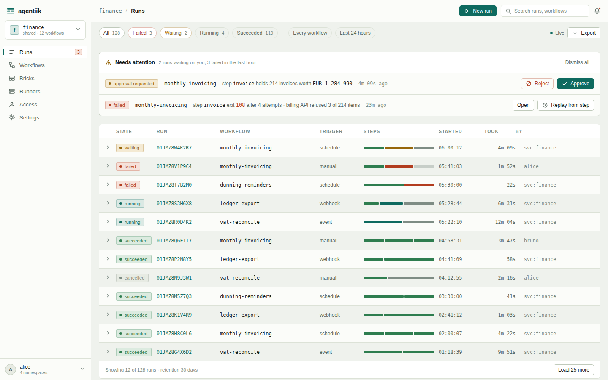
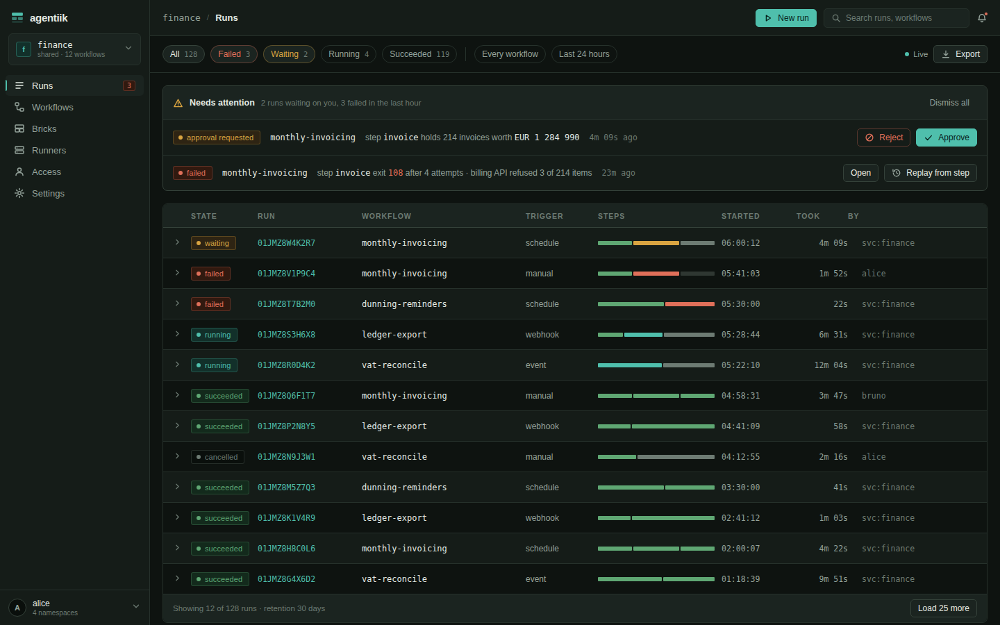
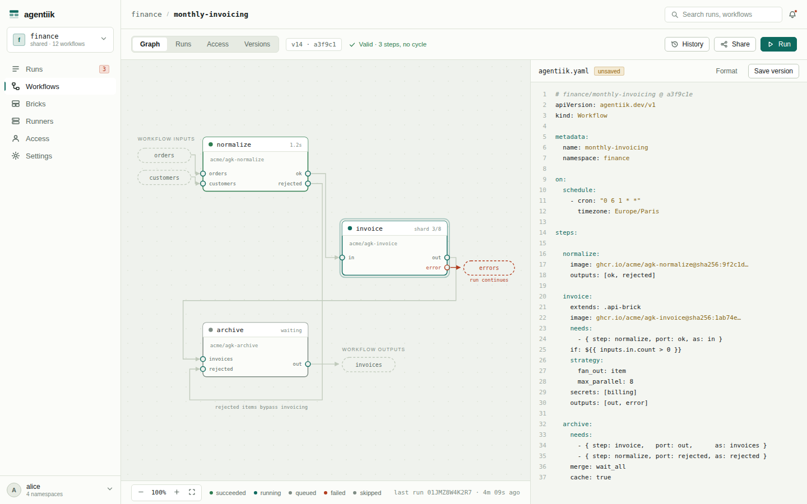
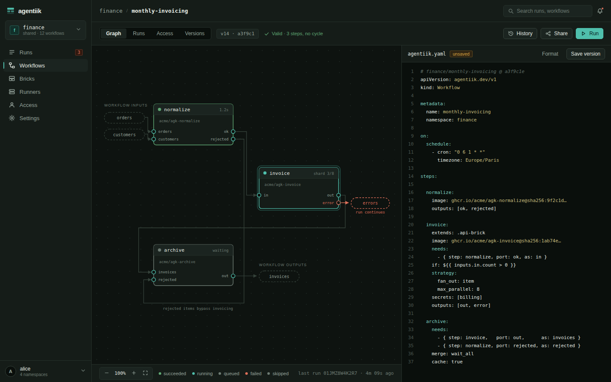
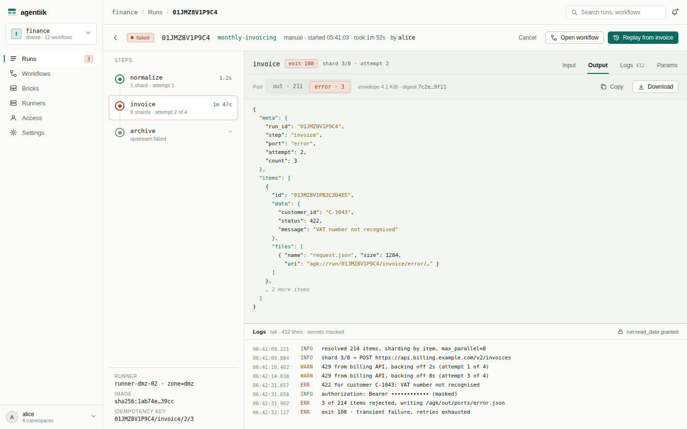
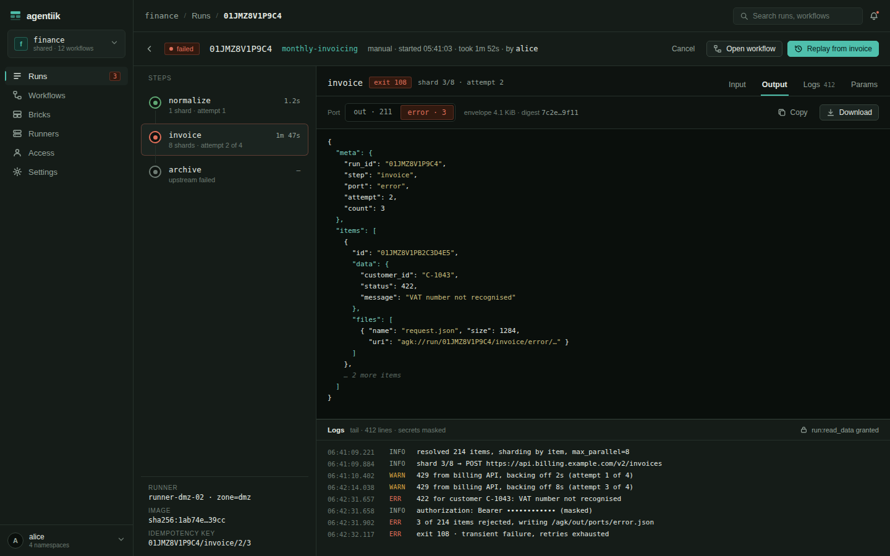
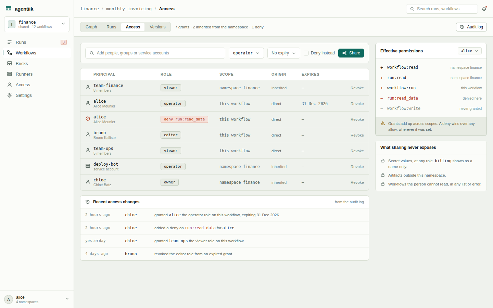
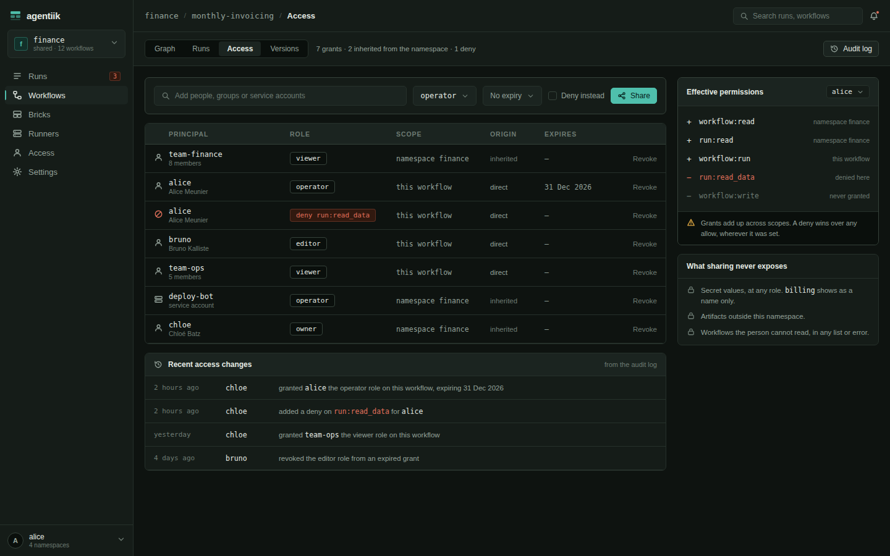

A multi-user workflow engine in which every brick is an ephemeral OCI container and every workflow is a YAML file, versioned alongside the code it serves.
Get started
At v0.1.1 a workflow runs on your machine and nowhere else. Every output below is what a terminal answered at that release, not what the rest of this documentation promises.
What you need
| Tool | Why |
|---|---|
| Docker daemon | Runs the bricks, which are containers. Docker Desktop on macOS or Windows, Docker on Linux. |
| Homebrew, or Go 1.27 | Homebrew builds agk from the tagged source; go install does the same without it. |
| git | A workflow is a git repository. A local one, with no remote, is enough. |
Install the command line
$ brew install agentiik/tap/agk
$ agk --version
agk v0.1.2, 0c751e1469b6d679228fa038ce34f8d4c5b6ff20, go1.27.1Without Homebrew: go install github.com/agentiik/agentiik/cmd/agk@v0.1.2. The formula also embeds the static helper a script step mounts at /agk/bin/agk, which a plain go install leaves out (Running a script instead of a brick). v0.1.2 is v0.1.1's engine unchanged, so the outputs below still hold.
agk alone prints its verbs, the table in Command line.
Start a workflow repository
agentiik.yaml at the root is the entry point. The rest of the repository is yours, and every step of every run sees it, mounted read-only at /agk/repo.
$ mkdir first-run && cd first-run && git init
$ cat > agentiik.yaml <<'EOF'
apiVersion: agentiik.dev/v1
kind: Workflow
metadata:
name: first-run
namespace: demo
outputs:
greeting:
from: { step: greet, port: out }
steps:
greet:
image: alpine:3.21
script:
- echo "hello from ${AGK_STEP}"
outputs: [out]
EOF| Key | What it does |
|---|---|
| metadata | The workflow's namespace and name, demo/first-run in the output. On a server they say where it lives and who may see it. |
| steps.greet.image | Any image. A brick is an image with a manifest at /agk/brick.yaml; a script step needs none. |
| steps.greet.script | One command per entry. AGK_STEP is one of the variables every container is given. |
| steps.greet.outputs | Its ports. A script that writes nothing under /agk/out/ports/ and exits 0 publishes one item on out, its standard output under data.stdout. |
| outputs.greeting | What the run hands back: one port of one step. |
Validate it
$ agk validate
demo/first-run is valid: 1 step, 0 edges, 1 declared output
1 step held to the manifests of 0 referenced imagesNo daemon was needed: this workflow names no brick, so there is no manifest to read. A workflow that names a brick reads its manifest off the image, through a daemon.
Run it
$ agk run --local
the daemon at /Users/you/.docker/run/docker.sock speaks API 1.55 and runs linux/aarch64
user namespace remapping is off on this daemon and this runner does not require it, so the floor is lifted: a task's files are owned by a real uid on the host, root inside a container is the host's own root, and a process that escapes a container is that account rather than an unprivileged high-numbered one that maps to no real user.
0.0s greet running
0.4s greet succeeded, out 1
demo/first-run succeeded in 0.4s: 1 step, 1 container
greeting: 1 item in .agk/runs/01M2DMGM1ESABA8T001RT7XXKZ/outputs/greeting.json
run 01M2DMGM1ESABA8T001RT7XXKZ: .agk/runs/01M2DMGM1ESABA8T001RT7XXKZThe second line is what your machine gives up, because Docker Desktop does not remap user namespaces (Three tiers of containment). --require-userns-remap holds the floor instead, and a run on a laptop then refuses to start.
Read what came out
Everything the run produced is under .agk, beside the entry point, when it ends. The declared output is an envelope, the one shape that travels between steps:
{
"meta": {
"run_id": "01M2DMGM1ESABA8T001RT7XXKZ",
"step": "greet",
"port": "out",
"attempt": 1,
"count": 1,
"produced_at": "2026-09-13T15:00:03.063427Z"
},
"items": [
{
"id": "01M2DMGMBRYT76RK1CJJ7YH1X6",
"data": { "stdout": "hello from greet\n" },
"files": []
}
]
}The runner minted this id because the script gave none. A brick that cares about replay derives it from the payload, so that two runs over the same input are comparable.
Add a second step
needs names the step and port to read; as names the input port it arrives on.
$ cat > agentiik.yaml <<'EOF'
apiVersion: agentiik.dev/v1
kind: Workflow
metadata:
name: first-run
namespace: demo
outputs:
counted:
from: { step: count, port: out }
steps:
greet:
image: alpine:3.21
script:
- echo "hello from ${AGK_STEP}"
outputs: [out]
count:
image: alpine:3.21
needs:
- { step: greet, port: out, as: in }
script:
- echo "greet published $(/agk/bin/agk items | wc -l | tr -d ' ') item"
outputs: [out]
EOF$ agk run --local
0.0s greet running
0.3s greet succeeded, out 1
0.3s count running
0.6s count succeeded, out 1
demo/first-run succeeded in 0.6s: 2 steps, 2 containers
counted: 1 item in .agk/runs/01M2DMJ192NQ7SMTFFBG1GXMFN/outputs/counted.json/agk/repo. Only the envelope crosses between them./agk/bin/agk (agk items, agk emit, agk attach) is an optional helper, bound read-only for a script step. jq on /agk/in/<port>/envelope.json and a redirect do the same job (script steps).
$ agk graph --format mermaid
flowchart LR
step_count["count<br/>script on alpine:3.21"]
step_greet["greet<br/>script on alpine:3.21"]
step_greet -->|"out to in"| step_count
output_counted(["counted"])
step_count -. "out" .-> output_countedWhere to go next
- Workflow language: every keyword the file accepts.
- Brick contract: a brick of your own, which is an image and a manifest.
- Brick catalog: four ready-made bricks today,
jq,schema-validate,csvandhttp-request. - Command line: every verb, the flags of a local run, the five exit codes.
What does not work yet
| What | Today | Why |
|---|---|---|
| agk login agk whoami agk push agk share agk grants agk logs agk brick init | Refused, naming what is missing. | There is no server yet. The roadmap says which release brings each. |
| network: egress | Refused, not opened. network: none and network: internal run. | The proxy enforcing egress.allow is v0.9.0 work, once it is designed, and an open network called filtered is worse than a refusal. |
| secrets without a tmpfs (macOS) | Written into the task's working directory, removed with the container, announced before the run starts. | A secret needs a tmpfs the runner can reach, and macOS has none. |
Use cases
Six workflows, each small enough to read in one sitting and complete enough to push. The services they talk to, Home Assistant, Kubernetes, a bank, appear only at the far end of a script step: Agentiik ships no integration with any of them, and needs none. The scripts a step names sit beside agentiik.yaml in the repository and are not shown.
| Use case | Starts on | What it shows | Runs from |
|---|---|---|---|
| Home automation | schedule | A runner inside the house, one host per step. | v0.9.0 |
| DevOps | webhook | A rollout one region at a time, one rollout at a time. | v0.9.0 |
| Finance | schedule | A join, a human approval, a step never run twice. | v0.9.0 |
| Cybersecurity | webhook | Routing by port, one secret and one host per step. | v0.9.0 |
| Data pipelines | agk run --local | Catalog bricks, bad rows on a port of their own. | v0.1.0, today |
| AI agent over MCP | tools/call | A workflow published as a tool. | v0.9.0 |
Most of them reach the network, and that decides the last column: network: egress is refused, not opened, until the proxy enforcing egress.allow lands in v0.9.0 (What does not work yet). A filtered network that is not actually filtered would be worse than waiting.
Home automation
At 22:30, find the windows left open and the doors left unlocked, and send one notification if there are any. Home Assistant is only reachable from inside the house, so the steps run there, on a runner the server never has to reach.
apiVersion: agentiik.dev/v1
kind: Workflow
metadata:
name: night-check
namespace: home
on:
schedule:
- cron: "30 22 * * *"
timezone: Europe/Paris
outputs:
left-open:
from: { step: find-open, port: open }
secrets: [home-assistant, ntfy]
defaults:
runs_on: [site=home] # the runner in the house: it dials out, nothing dials in
network: egress
timeout: 2m
steps:
find-open:
image: python:3.13-slim
secrets: [home-assistant] # a long-lived access token
egress:
allow: ["homeassistant.local:8123"]
retry: { max: 2, on: [failed] }
script:
- python /agk/repo/scripts/open_entities.py > /tmp/open.json
- /agk/bin/agk emit open --from /tmp/open.json --id entity_id
outputs: [open]
notify:
image: curlimages/curl:8.11.1
needs:
- { step: find-open, port: open, as: in }
if: ${{ inputs.in.count > 0 }} # nothing open, nothing sent
secrets: [ntfy]
egress:
allow: ["ntfy.sh:443"]
script:
- 'curl -sSf -H "Authorization: Bearer $(cat /agk/secrets/ntfy)" -d "$(/agk/bin/agk items | wc -l) left open" https://ntfy.sh/house'
outputs: [out]| What it uses | Why |
|---|---|
| schedule | Every evening in the house's own timezone, with nobody at a keyboard. |
| runs_on | Sends both steps to the one pool whose labels include site=home, the only machines that can see homeassistant.local. A runner opens no inbound port, so the house exposes nothing. |
| secrets | Each step mounts its own token as a file under /agk/secrets/, never the other one's. |
| egress | One host per step: the reader cannot post, the notifier cannot read the house. |
| agk emit | One item per open entity on the port open, its identity taken from entity_id. |
| if | inputs.in.count is port metadata: the controller skips the notification without reading a single item. |
| retry | Reading states is safe to repeat, and a Wi-Fi hiccup should not cost a night's check. |
Available from v0.9.0. The schedule arrives in v0.5.0, and both steps need the egress proxy.
DevOps
Once CI has pushed an image, roll the tag out to three Kubernetes regions, one after another, and say in the team channel how it went. Two tags pushed a minute apart must never interleave.
apiVersion: agentiik.dev/v1
kind: Workflow
metadata:
name: deploy-api
namespace: platform
inputs:
tag:
schema: { type: string, pattern: "^v[0-9]+\\.[0-9]+\\.[0-9]+$" }
required: true
on:
webhook:
- path: /deploy-api # served at /hooks/platform/deploy-api
method: POST
auth: bearer
response: async
map:
tag: ${{ trigger.body.tag }}
concurrency:
group: deploy-api # a second tag waits for the first rollout
cancel_in_progress: false
secrets: [kubeconfig, chat-webhook]
timeout: 1h
steps:
rollout:
image: bitnami/kubectl:1.31
strategy:
fan_out: matrix
matrix:
region: [eu-west, eu-central, us-east]
max_parallel: 1 # one region at a time
fail_fast: true # a failed region stops the rest
params:
tag: ${{ workflow.inputs.tag }}
secrets: [kubeconfig]
network: egress
egress:
allow:
- k8s.eu-west.example.com:6443
- k8s.eu-central.example.com:6443
- k8s.us-east.example.com:6443
timeout: 15m
script:
- export KUBECONFIG=/agk/secrets/kubeconfig
- kubectl --context "$AGK_PARAM_REGION" -n api set image deployment/api api="registry.example.com/api:$AGK_PARAM_TAG"
- kubectl --context "$AGK_PARAM_REGION" -n api rollout status deployment/api --timeout=10m
outputs: [out]
announce:
image: curlimages/curl:8.11.1
needs: [rollout]
when: [succeeded, failed] # say so either way
params:
tag: ${{ workflow.inputs.tag }}
outcome: ${{ steps.rollout.status }}
secrets: [chat-webhook]
network: egress
egress:
allow: ["chat.example.com:443"]
script:
- curl -sSf --json "{\"text\":\"api $AGK_PARAM_TAG $AGK_PARAM_OUTCOME\"}" "$(cat /agk/secrets/chat-webhook)"
outputs: [out]| What it uses | Why |
|---|---|
| webhook | The last job of the CI pipeline calls it with a bearer token. map turns the body into the tag input, held to its pattern before the run exists. |
| concurrency | A second tag queues behind the rollout in progress rather than racing it. |
| matrix | One shard per region. max_parallel: 1 makes it a staged rollout, fail_fast stops it at the first broken region. |
| params | The region and the tag reach the script as AGK_PARAM_REGION and AGK_PARAM_TAG. |
| when | The announcement runs on success and on failure; steps.rollout.status says which. |
| timeout | An hour for the whole run and fifteen minutes per region, so a stuck rollout never holds the concurrency group for long. |
| secrets | The kubeconfig is a file for the rollout alone; the chat URL is a secret too, since it is all it takes to post. |
Available from v0.9.0. The webhook arrives in v0.5.0, and kubectl reaches the clusters through the egress proxy.
Finance
On the 25th, pay the suppliers whose invoices are due: match each invoice with the supplier's bank details, build one SEPA file, and send it to the bank only once a person has approved it.
apiVersion: agentiik.dev/v1
kind: Workflow
metadata:
name: supplier-payments
namespace: finance
on:
schedule:
- cron: "0 7 25 * *"
timezone: Europe/Paris
outputs:
batch:
from: { step: build-batch, port: out }
retain: 365d
unmatched:
from: { step: build-batch, port: unmatched }
secrets: [accounting, bank]
timeout: 3d # three days unapproved: timed_out, never paid late
.accounting:
image: python:3.13-slim
secrets: [accounting]
network: egress
egress:
allow: ["accounting.example.com:443"]
outputs: [out]
steps:
invoices:
extends: .accounting
script:
- python /agk/repo/scripts/fetch.py invoices > /tmp/invoices.json
- /agk/bin/agk emit out --from /tmp/invoices.json --id invoice_id
suppliers:
extends: .accounting
script:
- python /agk/repo/scripts/fetch.py suppliers > /tmp/suppliers.json
- /agk/bin/agk emit out --from /tmp/suppliers.json --id supplier_id
build-batch:
image: python:3.13-slim
needs:
- { step: invoices, port: out, as: in }
- { step: suppliers, port: out, as: in }
merge:
join: { on: "$.data.supplier_id" } # no bank details: leaves by unmatched
script:
- python /agk/repo/scripts/sepa.py /agk/out/files/payments.xml
outputs: [out, unmatched]
approve:
image: ghcr.io/agentiik/wait # the run is waiting until someone approves
needs: [build-batch]
outputs: [out]
pay:
image: python:3.13-slim
needs:
- { step: build-batch, port: out, as: in }
- { step: approve, port: out, as: approval }
secrets: [bank]
network: egress
egress:
allow: ["ebics.bank.example.com:443"]
idempotent: false # never sent twice, even after a lost runner
script:
- python /agk/repo/scripts/upload.py /agk/in/in/payments.xml
outputs: [out]| What it uses | Why |
|---|---|
| merge: join | Pairs each invoice with its supplier on supplier_id. An invoice with no bank details leaves by unmatched, a workflow output, instead of failing the batch. |
| extends | The two reads from the accounting system share one hidden block. |
| files | The SEPA file travels as an artifact with its sha256, and retain: 365d keeps the batch readable for a year. |
| wait | The run stops in waiting until someone holding workflow:run approves it, from the console, the API or a phone; a rejection ends it cancelled. The wait brick's manifest is v0.8.0 work, so the step passes it no parameters yet and its out port is assumed rather than specified. |
| idempotent: false | A lost task is never requeued: a payment that may have left is handed to a person, not sent again. |
| timeout | Three days without an approval end the run timed_out, rather than paying a week late. |
Available from v0.9.0. The schedule arrives in v0.5.0, the wait step and its approval in v0.8.0, and the accounting system and the bank are reached through the egress proxy.
Cybersecurity
When the SIEM raises an alert, score its source address against a threat-intelligence service and block it at the firewall if it is hostile. The alert is written by the attacker as much as by the SIEM, so each step gets as little as it can work with.
apiVersion: agentiik.dev/v1
kind: Workflow
metadata:
name: ip-triage
namespace: soc
inputs:
alert:
schema:
type: object
required: [rule, src_ip]
properties:
rule: { type: string }
src_ip: { type: string, format: ipv4 }
required: true
on:
webhook:
- path: /siem-alert
method: POST
auth: hmac
response: async
map:
alert: ${{ trigger.body }}
outputs:
blocked:
from: { step: block, port: out }
retain: 30d
dismissed:
from: { step: score, port: benign }
secrets: [abuseipdb, firewall]
steps:
score:
image: python:3.13-slim
inputs:
in: ${{ workflow.inputs.alert }}
secrets: [abuseipdb] # this step's one secret
network: egress
egress:
allow: ["api.abuseipdb.com:443"] # and its one host
retry: { max: 3, on: [transient] } # score.py exits 100 on a 429 or a 5xx
script:
- python /agk/repo/scripts/score.py > /tmp/verdict.json
- /agk/bin/agk emit hostile --from /tmp/verdict.json --filter '.hostile'
- /agk/bin/agk emit benign --from /tmp/verdict.json --filter '.hostile | not'
outputs: [hostile, benign]
block:
image: python:3.13-slim
needs:
- { step: score, port: hostile, as: in }
if: ${{ inputs.in.count > 0 }}
secrets: [firewall]
network: egress
egress:
allow: ["firewall.soc.example.com:443"]
script:
- python /agk/repo/scripts/block.py
outputs: [out]| What it uses | Why |
|---|---|
| auth: hmac | The SIEM signs each alert, and a body that does not verify starts nothing. |
| inputs | The alert is held to its schema before a run exists: one without src_ip never reaches a container. |
| ports | score decides by publishing on hostile or benign, and the graph routes by port. No expression reads the alert (why). |
| secrets and egress | One secret and one host per step. A parsing bug in score gives away a threat-intelligence key, not the firewall. |
| retry on transient | A rate limit is exit code 100 and is retried; a malformed answer exits 1 and is not. |
| retain | What was blocked stays readable for thirty days, long enough to write the incident up. |
Available from v0.9.0. The webhook and its signature check arrive in v0.5.0, and both calls go through the egress proxy.
Data pipelines
Each month, three shops drop a CSV export into the repository. Turn them into rows, hold every row to a schema, total the good ones per shop, and hand back a table, without one malformed line sinking the month.
apiVersion: agentiik.dev/v1
kind: Workflow
metadata:
name: monthly-sales
namespace: data
outputs:
totals:
from: { step: report, port: out }
rejected:
from: { step: check, port: invalid }
steps:
exports:
image: alpine:3.21
strategy:
fan_out: matrix
matrix:
shop: [paris, lyon, lille] # one shard per shop
script:
- cp "/agk/repo/exports/$AGK_PARAM_SHOP.csv" /agk/out/files/
outputs: [out]
rows:
image: ghcr.io/agentiik/csv:0.1.0
needs: [exports]
params: { direction: to_items }
outputs: [out]
check:
image: ghcr.io/agentiik/schema-validate:0.1.0
needs: [rows]
params: { schema_path: schemas/sale.json }
outputs: [ok, invalid] # a bad row leaves by invalid
totals:
image: python:3.13-slim
needs:
- { step: check, port: ok, as: in }
script:
- python /agk/repo/scripts/totals.py > /tmp/totals.json
- /agk/bin/agk emit out --from /tmp/totals.json --id shop
outputs: [out]
report:
image: ghcr.io/agentiik/csv:0.1.0
needs: [totals]
params: { direction: to_table, table_name: totals.csv }
outputs: [out]| What it uses | Why |
|---|---|
| matrix | One shard per shop, each copying its own export. |
| a file in /agk/out/files/ | A script that writes no port publishes one item, with the file attached: no helper needed. |
| csv, schema-validate | Parsing and validation are deterministic tools from the catalog, not code to write. |
| ports | A bad row leaves by invalid with its violations, straight to the workflow output rejected, and the month still totals. |
| artifacts | A table larger than inline_max_bytes travels as an artifact rather than inline. |
| network: none | The default, and nothing here needs more: no step can leave the machine. |
Available from v0.1.0, with agk run --local, since no step reaches the network. The two bricks are built from agentiik/bricks until the catalog is published to ghcr.io/agentiik in v0.8.0. On a server: v0.2.0, in progress.
AI agent over MCP
A support assistant needs to answer "where is my order?" without holding the orders service's credentials or being able to reach it. The workflow is the boundary: the model calls one tool, and the step behind it holds the key.
apiVersion: agentiik.dev/v1
kind: Workflow
metadata:
name: order-status
namespace: support
inputs:
query:
schema:
type: object
required: [order_id]
additionalProperties: false
properties:
order_id: { type: string, pattern: "^ORD-[0-9]{6}$" }
required: true
outputs:
status:
from: { step: lookup, port: out }
schema:
type: object
required: [order_id, state]
properties:
order_id: { type: string }
state: { enum: [paid, shipped, delivered, refunded] }
tracking_url: { type: string }
mcp:
name: orders
description: Customer orders, read-only.
tools:
- name: order_status
title: Order status
description: Return the state of one order and, once shipped, its tracking link. Takes an order number such as ORD-004211 and nothing else.
input: { from: { input: query } }
output: { from: { output: status } }
mode: sync
timeout: 30s
annotations:
readOnlyHint: true
idempotentHint: true
secrets: [orders-api]
steps:
lookup:
image: python:3.13-slim
inputs:
in: ${{ workflow.inputs.query }}
secrets: [orders-api] # the model never holds it
network: egress
egress:
allow: ["orders.internal.example.com:443"]
timeout: 20s
script:
- python /agk/repo/scripts/lookup.py > /tmp/status.json
- /agk/bin/agk emit out --from /tmp/status.json --id order_id
outputs: [out]| What it uses | Why |
|---|---|
| mcp | One tool, order_status, whose inputSchema is the query input's schema as it stands and whose result is the status output. |
| /mcp/support/order-status | The workflow is an MCP server of its own, listed and called with workflow:run alone, which reaches no step, no file and no endpoint behind it. |
| operator | The role to grant the assistant's service account: it runs the tool and reads nothing else. |
| input validation | An argument that does not match ^ORD-[0-9]{6}$ is refused as a protocol error before any run is created. |
| mode: sync | The answer comes back in the call, within the tool's 30 seconds. |
| annotations | readOnlyHint lets a client call without asking first. It is a hint to the client, never a permission. |
| no model in the engine | The model lives in the client, beyond the protocol boundary; the engine only runs the workflow it is asked to. |
Available from v0.9.0. Publishing a workflow as a tool arrives in v0.7.0, and a workflow whose steps need no network is callable from then; this one reaches the orders service through the egress proxy.
Scope
Agentiik runs workflows built from bricks. A brick is an OCI container that lives for one step. A workflow is a directed acyclic graph of bricks, described entirely in YAML, whose source of truth is a file under version control. One installation serves many users, who own workflows in namespaces and share them with named roles.
What the product does
| Area | What it does |
|---|---|
| Workflows | YAML with file includes, block inheritance and matrices, on GitLab CI's syntactic model. |
| Ports | Several named inputs and outputs, per workflow and per brick. |
| Bricks | One ephemeral container each, on a fleet of runners, with resource limits and network isolation by default. |
| Data | Batches of JSON items. Large payloads spill to an object store and travel by URI. |
| Triggers | Schedule, webhook, event, manual call, another workflow. |
| Access | Users signed in by passkey, passwords optionally forbidden outright, gathered in groups. Namespaces own workflows; sharing binds a principal to a role: viewer, operator, editor or owner. |
| Replay | From a chosen step, reusing the artifacts produced upstream. |
| Local run | A whole workflow with no server: the working tree and a Docker daemon. |
| Installation | The same images on one machine, a redundant on-premise fleet or managed cloud services. Runners as containers or as a bare-metal system service. |
| Phone | Run history, live state, approval of a waiting run, push notification on failure. |
| MCP | The Model Context Protocol, on two surfaces: one operates the platform, one publishes a chosen workflow as a tool. |
What the product does not do
| Area | Never | Instead |
|---|---|---|
| Bricks | Code interpreted inside the engine. | A brick is an image and nothing else. |
| Catalog | A language-model node or an agent, in the engine or the standard catalog. | Bricks are API calls and deterministic tools. |
| Expressions | A general-purpose scripting language for conditions and templating. | CEL, whose evaluation always terminates. |
| Access | Anonymous sharing, or a public link. | Sharing to a named principal. |
| Phone | Workflow authoring. | Watching and unblocking runs. |
Licence
OSI-approved throughout: copyleft where the server lives, permissive wherever a third party has to embed something. Repositories sets out the split and why.
Concepts
- Workflow
- A git repository in a namespace, identified by
<namespace>/<name>, whoseagentiik.yamldescribes a directed acyclic graph of steps and whose tree carries whatever else those steps need. - Version
- A commit on any branch, accepted only if the entry point validates. Schedules, webhooks and events run the default branch; a manual run can name any ref.
- Namespace
- Container for workflows, secrets and quotas. Unit of ownership and the coarse scope for access grants.
- Brick
- OCI image that honours the execution contract and publishes a manifest describing its ports, parameters and requirements.
- Step
- Instance of a brick inside a workflow, with resolved parameters, inbound edges and execution settings.
- Port
- Named input or output of a step. A port carries exactly one envelope.
- Envelope
- The JSON object
{ meta, items }that travels along a port. - Item
- A single element of an envelope, carrying an identifier, a
dataobject and a list of attached files. - Artifact
- File produced by a step, held in the object store, addressed by its SHA-256 digest and referenced by URI.
- Run
- One instantiation of a commit by a trigger, attributed to the principal that caused it. Carries a ULID and pins the commit it started from.
- Task
- Unit of work taken by a runner. One task is one attempt at one shard of one step, and it is self-contained: a runner never sees the graph it came from.
- Shard
- Subdivision of a step produced by a fan-out strategy, per item or per batch.
- Runner
- Long-lived agent, registered once, which pulls tasks and drives a local Docker daemon. A container, not a runner, is what is created and destroyed per task.
- Principal
- Anything that can hold rights: a user, a group, or a service account.
- Grant
- A binding of one principal to one role at one scope, either a namespace or a single workflow.
Data exchange model
Bricks exchange batches of JSON items, which stay readable, diffable and replayable. A value above a size threshold spills to the object store and travels as a reference.
Envelope structure
{
"meta": {
"run_id": "01JMZ8W4K2R7Q0E3N5T9ZQ4XKB",
"step": "normalize",
"port": "ok",
"attempt": 1,
"count": 2,
"produced_at": "2026-09-10T06:00:12.418Z"
},
"items": [
{
"id": "01JMZ8W4K7A1B2C3D4E5F6G7H8",
"data": { "customer_id": "C-1042", "total": 1290.50, "currency": "EUR" },
"files": []
},
{
"id": "01JMZ8W4K7A1B2C3D4E5F6G7H9",
"data": { "customer_id": "C-1043", "total": 88.00, "currency": "EUR" },
"files": [
{
"name": "purchase-order.pdf",
"uri": "agk://run/01JMZ8W4K2R7Q0E3N5T9ZQ4XKB/normalize/ok/purchase-order.pdf",
"media_type": "application/pdf",
"size": 481233,
"sha256": "c1f4a91dd87852afdeab8ce3212cb8fd034a63f37cc523c8fa6d9ead34c1d02b"
}
]
}
]
}The envelope is closed: the runner refuses it whole for an unknown field, typically a shard number an emitter adds, rather than ignoring that field. Every field below is required.
| Object | Fields | Rule |
|---|---|---|
| envelope | meta, items | Nothing else. |
| meta | run_id, step, port, attempt, count, produced_at | No shard: shard envelopes are concatenated before publication, so meta describes the step. run_id is the ULID a container reads as AGK_RUN_ID. |
| items[] | id, data, files | data is an object, never a scalar or an array. An item with nothing attached writes files: [] and never omits the key. |
| files[] | name, uri, media_type, size, sha256 | media_type, not the file name, says what the bytes are. sha256 is 64 lowercase hexadecimal characters, the <digest> of the key sha256/<digest>: a truncated one addresses nothing. |
Size rules
| Setting | Default | Effect |
|---|---|---|
| inline_max_bytes | 262 144 | Above this, a binary or textual value must be written as an artifact and referenced in files[]. A container that leaves one inline fails with exit code 121. |
| envelope_max_bytes | 4 194 304 | Maximum size of a serialised envelope. |
| max_items | 100 000 | Maximum items per envelope. Beyond it, paginate across several outputs or produce a JSON Lines artifact. A container whose envelope holds more fails with exit code 121. |
| artifact_max_bytes | 5 368 709 120 | Maximum size of a single artifact. |
A container that exits 0 with an envelope breaking inline_max_bytes, envelope_max_bytes or max_items is reported failed with exit code 121 (Exit codes). All three are measured on every envelope as it will be published, its files[] entries rewritten to the artifacts that will hold them, before the first artifact is uploaded, so a refusal leaves the store untouched.
Artifacts are content-addressed: agk://run/<run>/<step>/<port>/<name> resolves to the physical key sha256/<digest>. Identical bytes are stored once; a replay recomputing them writes nothing. Deduplication is scoped per namespace, so that two namespaces never share a physical object and an existence check can never reveal what another namespace holds.
The first segment names the kind. A log, agk://log/<run>/<task>, is addressed by task: eight shards of one step have eight logs and no port to tell them apart.
How long an artifact lives
A workflow declares how long its artifacts live, rather than inheriting whatever the object store was configured to do: a duration bounds how long they may be fetched, a fetch count how often. They compose: a one-shot artifact still has a duration, which is what expires it when nobody ever comes for it.
outputs:
invoices:
from: { step: archive, port: out }
retain: 90d # available for ninety days
payslips:
from: { step: render, port: out }
retain: { for: 24h, fetches: 1 } # gone on collection, or a day later
defaults:
retain: 7d # intermediate artifacts, and any output not saying otherwise| Written on | Short form | Long form |
|---|---|---|
| outputs.<name>.retain | 90d | { for: 24h, fetches: 1 }. for is always present; fetches starts at 1. |
| defaults.retain | 7d | { for: 7d } and nothing else: no fetches. |
| steps.<name>.retain | refused | refused |
What travels between two steps lives by defaults, so keeping one heavy intermediate longer is a change to defaults. It cannot be one-shot: a fan-out reads it once per shard and a replay reads it again, so consuming it would make a graph that runs correctly the first time and not the second.
What expiry acts on
Expiry applies to the reference, never to the object. The row in artifacts binding a run, a step and a port to a digest is what is dropped; the physical sha256/<digest> object is collected once its reference count reaches zero, and not before. Content addressing requires it: two runs that produced identical bytes share one object, and expiring one run's output must not reach into the other's.
A single fetch
What GET /api/v1/artifacts/{uri} answers:
| Artifact | Answer |
|---|---|
| no fetch budget | 302 to a short-lived presigned URL. The bytes never touch the control plane. |
| budget left | The bytes themselves, served by the API. |
| every fetch left is being served | 409, and one comes back if its transfer does not complete. |
| budget spent, or past its duration before any sweep retired it | 410 Gone. |
| never existed | 404. |
- A fetch counts when the response completes. It is held for its transfer and given back if the transfer does not complete, or after 1h05 if the API serving it died, so a client that loses its connection retries against an artifact still there.
- A budget is served, never redirected: a redirect ends when issued, so a client that never arrived would have spent its fetch. The cost is bytes through the API, bounded by what a workflow declared one-shot.
- The count is per artifact, not per principal: a workflow feeding two consumers declares
fetches: 2. - Once consumed, the reference is gone immediately rather than at the next sweep.
410rather than404is so that a client can tell this existed and is finished from this never existed, and the run detail keeps showing the artifact's name, size and digest with its collection recorded.
| Rule | Is |
|---|---|
{uri} | The agk:// URI as one percent-encoded path segment: a proxy in front passes %2F undecoded. |
| presigned URL | Lasts 5 minutes. |
| a budgeted artifact's bytes | Have an hour to go. |
HEAD | Spends nothing. |
Range | Not honoured: the whole object, 200. |
| the bytes | Served as application/octet-stream, as an attachment, with nosniff. |
What it costs downstream
| Affected | Effect of an expired artifact |
|---|---|
| replay | Replay from a step reuses upstream artifacts, so once any input to a step it could restart from is gone, the run is marked as replayable from the start only, and the console says so where it would otherwise offer the step. |
| memoisation | A cache entry is invalidated when an artifact it would hand back has expired or was collected: memoisation skips only work whose result is still available. |
| namespace ceiling | retain is capped by the namespace quota and cannot exceed it; a workflow may always ask for less. Raising the ceiling revives nothing: the reference was dropped and the object may be gone. |
Expiry is availability, not erasure. The last reference going deletes the object from the store, but a backup or a lagging replica may still hold it. An artifact that must be unrecoverable is encrypted by the brick that produces it, the key handed to whoever collects it: expiry then destroys the only readable copy. A platform promising erasure would be the more dangerous design.
The graph and its ports
A workflow declares its own named inputs and outputs. So does every step. An edge connects one output port of a step to one input port of another. That is the only form of dependency: there is no implicit stage, and the order in which steps appear in the file has no bearing on scheduling.
rejected edge is what makes ports worth having: an item dropped by normalisation skips invoicing and still reaches archiving. The error port, in rust, climbs to a workflow output without failing the run.In agentiik.yaml, an edge is one entry of a step's needs; the workflow file writes this graph in full.
Scheduling semantics
- A step becomes runnable once every declared input port is satisfied. This is a barrier, not a continuous stream.
- A port produces exactly one envelope, once, when the emitting step ends. A step split into shards has its shard envelopes concatenated port by port before publication.
- An output port declared but never written by the container publishes an empty envelope. That is not an error.
- A failed shard publishes nothing of its own: its ports are the empty envelopes its step publishes, whatever the container wrote.
- A step whose
ifcondition is false moves to skipped and publishes empty envelopes on all its ports. Downstream steps decide their own fate throughwhen. - Cycles are rejected at validation, before registration. Looping is done by calling a sub-workflow, with a configurable maximum depth.
Merge strategies
merge decides which.| merge | Behaviour |
|---|---|
| wait_all | Waits for every upstream port, then concatenates items in edge declaration order. Default when a step has several edges into the same port. |
| zip | Pairs items by rank. Envelopes of differing lengths produce a validation failure. |
| join | Key join on a JSON path: join: { on: "$.data.customer_id" }. Unmatched items leave on the unmatched port if the step declares one. |
| first | Lifts the barrier as soon as one upstream port has produced. The other edges are abandoned and their steps cancelled if no other consumer needs them. |
Fan-out
| fan_out | Behaviour | Example |
|---|---|---|
| none | One container receives the whole envelope. Default. | 8 items give 1 container. |
| item | One container per item, capped by max_parallel. Each shard receives a single-item envelope. | 8 items with max_parallel: 3 give 8 containers, at most 3 at a time. |
| batch(n) | One container per batch of n items. | 8 items with batch(3) give 3 containers. |
| matrix | Cartesian product of variable lists. Every combination is a shard, with its variables injected into params. | region: [fr, be, ch] and profile: [standard, reduced] give 6 containers. |
With fail_fast: true, the first shard to fail, retries spent, stops the shards still running beside it, freeing their runners at once. Without it, every shard finishes before the step is judged, so one run surfaces every failing item.
Brick contract
An image is a brick once it honours this contract. No Agentiik library is needed: a shell script that reads one file and writes another is enough.
/agk/out/ports/ and exits 0 publishes empty envelopes./agk/repo is the tree of the commit the run pinned, laid out by the runner from its redemption with every file checked against its digest: directories 0755 and files 0444, or 0555 where the repository makes them executable, so the remapped account a container runs as can read it. /agk/out is a directory of the runner's bound into the container, not a tmpfs: a tmpfs is gone when the container stops, and the runner collects after it stops.
Each output port is its own file, not a port field on every item on standard output. Standard output stays free for diagnostics, and a brick crashing mid-write leaves an identifiable incomplete file, not a truncated stream. Standard output is accepted as a shorthand for the single out port.
Exit codes
| Code | Meaning | Handling |
|---|---|---|
| 0 | Success | Output envelopes are published. |
| 1 to 99 | Application failure | Step failed. No retry unless retry.on says so explicitly. |
| 100 to 119 | Transient failure | Retried according to the step policy. |
| 120 | Invalid input | Permanent failure. Never retried, whatever retry says. |
| 121 | Output contract broken | Set by the runner: the container exited 0, but broke the output contract. An envelope broke a size rule, a port file is not an envelope, or a file under /agk/out/files is not what its entry says, not a file, or above artifact_max_bytes. Charged to the brick, never retried, and the log names the rule. |
| 122 to 124 | Reserved | Reserved for the runner. |
| 125 and above | Reserved for the runtime | Read as an infrastructure failure, charged to the runner and not to the brick. |
The band is read off the exit code alone, since the manifest declares no exit codes: a brick exiting 121 to 124 itself has failed the contract, whatever its manifest says, and leaving them free is a convention, not a check.
A timed_out or cancelled task carries the exit code its container exited with wherever a container ran and its runner reported one: 143 where it obeyed SIGTERM, 137 where it was killed after the grace. The verdict never reads it, since the stop decided the task. A lost task carries none.
A broken size rule is a failed task with a code of its own, not an error with none: no exit code reads as "no container ran", which sends the operator to the wrong machine.
Environment variables
| Variable | Contents |
|---|---|
| AGK_RUN_ID | ULID of the run. |
| AGK_WORKFLOW | Namespaced workflow name and version, separated by @. |
| AGK_NAMESPACE | Namespace that owns the workflow. |
| AGK_STEP | Step identifier. |
| AGK_ATTEMPT | Attempt number, starting at 1. |
| AGK_SHARD | Shard index and cardinality, for example 3/8. Absent when there is no fan-out. |
| AGK_DEADLINE | RFC 3339 timestamp past which the container will be stopped. |
| AGK_REPO | Mount root of the workflow repository tree, /agk/repo by default. |
| AGK_COMMIT | The commit this run was started from. |
| AGK_OUT_PORTS | Comma-separated list of declared output ports. |
Brick manifest
The manifest is embedded in the image at /agk/brick.yaml, read on first pull and cached by digest. Registry publication requires the standard OCI annotations org.opencontainers.image.title, .description, .version, .source, .revision and .licenses.
apiVersion: agentiik.dev/v1
kind: Brick
metadata:
name: http-request
version: 1.4.0
summary: Issues one HTTP request per item and returns the response.
spec:
inputs:
in:
schema: { $ref: "#/spec/definitions/request" }
outputs:
out:
schema: { $ref: "#/spec/definitions/response" }
error:
schema: { $ref: "#/spec/definitions/failure" }
params:
url: { type: string, format: uri, required: true }
method: { type: string, enum: [GET, POST, PUT, PATCH, DELETE], default: GET }
headers: { type: object, additionalProperties: { type: string } }
timeout: { type: string, pattern: "^[0-9]+(ms|s|m)$", default: 30s }
secrets:
- name: bearer
optional: true
mount: /agk/secrets/bearer
runtime:
network: egress # none | egress | internal
streaming: false # true = JSON Lines on stdin and stdout
user: "65532:65532"
resources:
cpu: "0.5"
memory: 256Mi
pids: 128
# JSON Schema 2020-12
definitions:
request: { type: object, required: [url], properties: { url: { type: string } } }
response: { type: object, properties: { status: { type: integer } } }
failure: { type: object, properties: { status: { type: integer }, message: { type: string } } }What a manifest must declare
Five keys are required:
apiVersion: agentiik.dev/v1 # this value and no other
kind: Brick
metadata:
name: noop
version: 1.0.0
spec:
runtime:
user: "65532:65532" # required, and never rootA brick with no port that writes nothing and exits 0 is legitimate, so ports, parameters, secrets, resources and definitions are all optional. spec.runtime.user is not: the non-root rule is checked at publication, which needs an account to check.
| Manifest part | Where | An unknown key |
|---|---|---|
| closed | The root, metadata, spec, a port entry, runtime, resources, a secret entry. | Fails publication: a misspelled key is found where it was written. |
| open | A params entry, a definitions entry, a port schema. | Passes untouched: it is the author's own JSON Schema 2020-12. |
How the values are written
| Key | Rule |
|---|---|
| metadata.name | ^[a-z0-9]+(?:-[a-z0-9]+)*$, narrower than a workflow name: a person types it and the catalog files a page under it. Refused: http_request, HttpRequest. |
| metadata.version | Semantic Versioning 2.0.0, pre-releases included as Versioning spells them, as the bare number 1.4.0. Refused: v1.4.0, 1.4, a date. |
| spec.runtime.user | Never root. Refused: root, 0, 0:0. The group half is not read, so nonroot:0 is accepted. |
| a port name | ^[A-Za-z0-9][A-Za-z0-9_-]*$: the name becomes a directory under /agk/in/, the file <port>.json under /agk/out/ports/, which holds it to 250 characters, and an entry of the comma-separated AGK_OUT_PORTS. Refused: in.raw, my port. |
| a port entry | schema and nothing else, and schema is optional: a port declared with no schema accepts whatever arrives, which is what a passthrough brick says. Refused: a title or a description beside it. |
| a parameter name | ^[A-Za-z_][A-Za-z0-9_]*$, with no hyphen, because the parameter becomes a key of /agk/params.json for the container to read. Refused: max-retries. |
| spec.params.<name>.sensitive | Boolean. Marks a parameter that may carry a secret value, the only way a secret reaches a brick other than as a mounted file. |
| spec.secrets[].name | Required, on the workflow secret name grammar, because it is the same name: the workflow decides which secret of its namespace answers. |
| spec.secrets[].mount | Optional, ^/agk/secrets/[A-Za-z0-9][A-Za-z0-9._-]*$: one file directly under /agk/secrets/, the same grammar in the task message and the redemption. Accepted: /agk/secrets/client.key. Refused: /agk/secrets/.., and /run/secrets/bearer out of habit. |
| spec.secrets[].optional | Boolean, false when absent, so a declared secret is required unless the brick says otherwise. It is the difference between a brick that degrades and one that fails inside the container. |
| resources.cpu | A quoted decimal string above zero: "0.5", "1". The quotes are load bearing rather than house style: YAML reads an unquoted 1 as a number, and a number is refused. |
| resources.memory | A whole number above zero with Ki, Mi, Gi or Ti. Refused: 512M. A step writes cpu and memory the same way. |
| $ref | A pointer inside a manifest is a JSON Pointer resolved against the manifest document itself: #/spec/definitions/<name> and never #/definitions/<name>. |
A parameter declaration is a JSON Schema subschema carrying one keyword that is not JSON Schema's: required: true on the parameter says a step must supply it, and a missing one is refused when the workflow is validated rather than inside a container. Both forms are accepted: on a parameter that is itself an object, the array form keeps its JSON Schema meaning and names the members the value must carry. The collision is worth it: everything said about a parameter stays on the parameter.
Workflow language
The entry point, agentiik.yaml, is the source of truth for what a workflow does. It is validated against a JSON Schema 2020-12 document before a push is accepted, and the commit that carries it is the version. Grants are not in the file: see Identity and access control.
apiVersion: agentiik.dev/v1
kind: Workflow
metadata:
name: monthly-invoicing
namespace: finance
labels:
domain: billing
# --- Workflow inputs and outputs -----------------------------------
inputs:
orders:
schema: { $ref: "./schemas/order.json" }
required: true
customers:
schema: { $ref: "./schemas/customer.json" }
default: []
outputs:
invoices:
from: { step: archive, port: out }
schema: { $ref: "./schemas/invoice.json" }
retain: 90d
errors:
from: { step: invoice, port: error }
# --- Triggers -------------------------------------------------------
on:
schedule:
- cron: "0 6 1 * *"
timezone: Europe/Paris
webhook:
- path: /invoicing
method: POST
auth: hmac
map:
orders: ${{ trigger.body.orders }}
event:
- type: com.example.order.approved
filter: ${{ event.data.amount > 0 }}
# --- Published as tools ---------------------------------------------
mcp:
name: invoicing
tools:
- name: create_invoice
description: Issue one invoice for a customer.
input: { from: { input: orders } }
output: { from: { output: invoices } }
mode: sync
# --- Reuse ----------------------------------------------------------
include:
- path: ./common-bricks.yaml # same commit, nothing to pin
- workflow: finance/common
ref: v2.1.0
vars:
currency: EUR
dunning_days: 30
secrets: [billing] # named here, declared on the namespace
defaults:
timeout: 10m
retain: 7d
retry:
max: 2
on: [transient, lost] # lost: requeued if its runner goes quiet
backoff: { type: exponential, base: 2s, max: 60s }
resources: { cpu: "1", memory: 512Mi }
network: none
runs_on: [arch=amd64]
# --- Deadline for the whole run -------------------------------------
timeout: 4h
# --- One run at a time ----------------------------------------------
concurrency:
group: monthly-invoicing
cancel_in_progress: false
# --- Graph ----------------------------------------------------------
steps:
normalize:
image: ghcr.io/acme/agk-normalize@sha256:9f2c1d...b7e0
inputs:
orders: ${{ workflow.inputs.orders }}
customers: ${{ workflow.inputs.customers }}
outputs: [ok, rejected]
params:
currency: ${{ vars.currency }}
invoice:
extends: .api-brick
image: ghcr.io/acme/agk-invoice@sha256:1ab74e...39cc
needs:
- { step: normalize, port: ok, as: in }
if: ${{ inputs.in.count > 0 }}
strategy:
fan_out: item
max_parallel: 8
secrets: [billing]
network: egress
egress:
allow: ["api.billing.example.com:443"]
retry: { max: 4, on: [transient, lost] }
outputs: [out, error]
archive:
image: ghcr.io/acme/agk-archive@sha256:44de90...c115
needs:
- { step: invoice, port: out, as: invoices }
- { step: normalize, port: rejected, as: rejected }
merge: wait_all
when: [succeeded, skipped]
cache: true
outputs: [out]| Root key | Role |
|---|---|
| apiVersion, kind | agentiik.dev/v1 and Workflow, nothing else. |
| metadata | name, namespace, labels. |
| inputs, outputs | The workflow's own ports. |
| on | Triggers. |
| mcp | Published tools. |
| include | Reuse. |
| vars | Values read as vars.<name> in expressions. |
| secrets | The namespace's secrets a step may mount, by name and nothing else: at least one, none twice. Where each lives is declared on the namespace, and a block still giving provider or path is refused. |
| defaults | Execution settings for steps that set none. |
| timeout | Deadline of the whole run. |
| concurrency | One run at a time, per group. |
| steps | The graph: step keywords. |
| .<name> | A hidden block, never executed, named by extends. |
The file is closed. Every block the language owns refuses a key it does not recognise: the root, metadata, a step, defaults, a trigger, an include, a published tool. timout: 10m fails the push instead of quietly doing nothing, which is far cheaper than a timeout never applied. The cost: no keys of your own; metadata.labels and vars are for that.
Names
| Grammar | Pattern | Applies to |
|---|---|---|
| identifier | ^[A-Za-z0-9][A-Za-z0-9_-]*$: letters, digits, hyphens and underscores, beginning with a letter or a digit, at most 255 characters, and a port or a workflow output at most 250 | A workflow name and namespace, each half of <namespace>/<name>, a step, an input, an output, a port, a variable, a secret, a published tool name. |
| parameter name | ^[A-Za-z_][A-Za-z0-9_]*$, no hyphen | A step's params and the manifest that declares them. |
One grammar, so that one name survives a URL, a directory and a tool list unchanged, and 255 characters because no filesystem holds a longer name: a step becomes a directory, a secret a file, and a port or a workflow output the file <name>.json, hence 250. A parameter is exported to a script as AGK_PARAM_<NAME>, so api-key is refused.
| A name too long | Is refused by |
|---|---|
| past 255, in a workflow | agk validate, agk run --local, and a push before any of its tree is stored: 400 for the workflow's own name, 422 for one its files write |
| past 255, in the database | the identifier domain every column storing a workflow, step, port or secret name is typed with |
| a port or a workflow output of 251 to 255 | nothing yet, a v0.4.0 task: it is accepted, every run of a step publishing on such a port fails, and so does every agk run --local of a workflow declaring such an output, once it writes the output down |
Durations
One number and one unit from ms, s, m, h, d: 500ms, 2s, 10m, 24h, 90d. A compound such as 1h30m is refused, and so is a bare number. Used by timeout, retain, the schedule jitter and both backoff values.
Deadlines
| Setting | Bounds |
|---|---|
| timeout, on a step | One shard. |
| defaults.timeout | Each step with no timeout of its own. |
| timeout, at the root | The whole run. |
| installation ceiling | A step when none of the three is written. An hour by default. |
| max_run_duration | The root timeout. A namespace quota: a root timeout above it is refused at validation, as retain is above max_retention_days. |
timeout at the root bounds the whole run. It is the deadline that makes timed_out a state a run can actually reach: once it passes, the tasks still running are stopped and the run ends there rather than waiting on a graph that is no longer going anywhere. It belongs to the workflow because only the workflow knows what is acceptable: a six-hour reconciliation and a webhook handler cannot share one number.
A step with no deadline anywhere gets the installation's ceiling, not none. An unbounded container holds a runner until somebody notices, and the task's grant expires with the task: no deadline would be a credential that never stops working. The ceiling is deliberately not max_run_duration: a ceiling that quietly became a default would be a number nobody reads as a ceiling any more.
Step keywords
What a step runs and where it sits belongs to the step, never to defaults, so the graph reads from steps without another block in mind. Execution settings may also go in defaults.
What runs, and where: never in defaults
| Key | Role |
|---|---|
| image | OCI reference. A tag is resolved once when the version is pushed, to the registry digest, and a server runs only name@sha256; agk run --local takes a tag as it is. See Supply chain. |
| workflow | Calls a sub-workflow, local or published, instead:<namespace>/<name>, @<ref> to pin a tag or a commit, or { workflow, ref }. Never beside image, script, before_script, after_script or shell: a call runs no container of its own. |
| script | Commands run in image: the image is treated as a base image and nothing about its ports is inferred, so outputs must be declared. See below. |
| needs | Inbound edges: { step, port, as }, or the short form step-name equivalent to { step: name, port: out, as: in }. |
| inputs | Feeds a port from a workflow input or an expression, with no upstream step. |
| outputs | Output ports, a subset of the manifest's. |
| params | Brick parameters, validated against the manifest once expressions are resolved. |
| if | When false, the step is skipped and publishes empty envelopes. |
| merge | How edges into one port combine. |
| strategy | fan_out, max_parallel, matrix, fail_fast: see Fan-out. |
| extends | Inherits a hidden block. |
How it runs: step or defaults
| Key | Role |
|---|---|
| when | Upstream states that let the step start: succeeded, failed, skipped, always. Default [succeeded]. |
| timeout | One shard. On expiry, SIGTERM, then SIGKILL after a grace period the runner policy sets, not this file. |
| retry | max; on: transient, failed, lost, timeout, and [transient] when absent, so a lost task is requeued only where the author names lost; backoff: { type, base, max }, where exponential is the only type: the wait starts at base, lengthens, never passes max. |
| continue_on_error | A failure does not fail the run; downstream sees failed through when. |
| idempotent | Safe to run again on the same inputs. Default true. A lost task is requeued only for an idempotent step, since it may have finished unseen, and only where retry.on names lost. Only an idempotent step can be cached. |
| cache | Memoisation. The key combines the image digest, the resolved parameters and the digests of the input envelopes. |
| resources | cpu, memory, pids, capped by the runner policy and the namespace quota. cpu and memory are written exactly as the brick manifest writes them, quotation marks included: cpu: 1 unquoted is refused. |
| network | none, egress, internal: see Isolation and secrets. |
| egress | host:port allow list, enforced by the runner egress proxy. |
| runs_on | Runner labels, such as [zone=dmz, arch=arm64]. The step goes to the one pool whose labels include every one of them, among the pools the namespace may use (see Registering a runner). None, or more than one, fails the step with exit code 125 on the infrastructure's account, its reason saying which. Empty or absent sends it to the pool default, which every installation is created with. |
| secrets | Secrets to mount, by their name in the root secrets list. Owning namespace only. |
| files | Narrows the repository tree, which it otherwise gets whole under /agk/repo/: a path or glob relative to the root, or { from, to, mode } to relocate one. A selector that relocates nothing leaves the file where it is under /agk/repo/. |
| shell | Interpreter for script. Default ["/bin/sh", "-e"]. |
| before_script | Runs before script, in the same container, merged from defaults and extends outwards in. |
| after_script | Runs after script, in the same container, even when it failed, so a diagnostic dump survives. Its exit code does not change the verdict. |
defaults also carries retain, never written on a step, and refuses every key of the first table.
The workflow repository
A workflow is a git repository, served by Agentiik itself. agentiik.yaml sits at the root; scripts, SQL, schemas and certificates go where they would in any project, and every step of every run sees them.
agentiik.yaml # the entry point, always at the root
schemas/
order.json
customer.json
invoice.json
scripts/
normalize.py
lib/rounding.py
sql/
orders.sql
certs/
internal-ca.pemagentiik.yaml, so an invalid workflow never reaches the branch. A run, and a replay of it months later, reads the commit it started from, whatever the branch does next. The runner never speaks git.- A version is a commit.
finance/monthly-invoicing@a3f9c1enames exactly one tree, permanently, because that is what a commit already is. - The whole tree is mounted read-only at
/agk/repo/in every step.AGK_REPOpoints at it;AGK_COMMITcarries the commit. - Trees are content-addressed and cached on the runner by commit, so a fleet fetches a commit once, not once per task.
normalize:
image: python:3.13-slim@sha256:1c4d5e...9a02
script:
- python /agk/repo/scripts/normalize.py
outputs: [ok, rejected]
load:
image: postgres:17-alpine@sha256:8e21af...4b70
files: # not the 2 GiB of fixtures beside them
- ./sql/**
- { from: ./certs/internal-ca.pem, to: /etc/ssl/certs/internal-ca.pem, mode: "0444" }
script:
- psql -f /agk/repo/sql/orders.sqlThe long form of files relocates a path to wherever a tool insists on finding it. Narrowing is an optimisation for large repositories, never a requirement, and never a permission boundary: whoever holds workflow:read can read the whole tree. An internal certificate authority belongs there; its key goes in the namespace secret store.
| Ref | Runs |
|---|---|
| default branch | Schedules, webhooks and events. |
| any other ref | Manual runs, such as agk run --ref feature/vat-rounding: a change tried on real inputs before it is merged, without touching production. |
Git access follows the permission model
| Git operation | Permission required |
|---|---|
| clone, fetch | workflow:read |
| push to an ordinary branch | workflow:write |
| push to the protected default branch, force-push, delete a ref | grant:manage, the permission that governs sharing, so branch protection needs no second mechanism |
The repository is integrated, not connected: Agentiik hosts it rather than cloning from a forge. A version cannot drift beneath a run, an invalid workflow cannot be pushed, and access is the existing permission model. A runner still never speaks git nor holds a credential: it fetches the tree's content-addressed objects with the task's grant, as it fetches an artifact.
Objects are packfiles in the object store; refs live in PostgreSQL. The shared POSIX filesystem most git servers assume would add a stateful component the redundant profile otherwise avoids. Refs in the database also make a ref update an ordinary transaction beside every other piece of state.
A file in the tree is bytes, never a template: no interpolation, no expression evaluation, no per-run rendering. Substitution belongs in params, which the script reads. Rendering per run would make the commit stop describing what actually executed.
agk run --local is the one run no commit describes: it executes the working tree, uncommitted changes included, and is labelled so that no history mistakes it for something reproducible.
Until the repository is hosted
Git hosting arrives in v0.4.0. Until then agk push carries the tree itself, read out of the commit and never off the working copy, because a version is a commit. What travels is the commit's tree at the entry point's directory. That directory becomes /agk/repo and the root includes resolve against, as it is for agk run --local, so the entry point is at the root as above and nothing outside its directory reaches a step.
README.md # left behind
tools/check.sh # left behind
billing/agentiik.yaml # /agk/repo/agentiik.yaml
billing/fragments/tax.yaml # /agk/repo/fragments/tax.yaml
billing/scripts/render.sh # /agk/repo/scripts/render.sh| agk push finds | It | Because |
|---|---|---|
| an uncommitted edit, or a file neither committed nor ignored, anywhere in the repository | refuses and lists them. --allow-dirty pushes the commit as committed and leaves them behind. | whoever pushes most likely believes the edit goes with the push |
| --commit <hash|branch|tag> | pushes that commit instead of HEAD | any commit the repository holds can be a version |
| a file | carries it as 0644 or 0755 | those are the only two modes git gives a file |
| a symlink | refuses | its target is resolved on whichever host lays the tree out, and can point outside the repository |
| a submodule | refuses | it is another repository, and the runner holds no credential to fetch it |
| a name that is not UTF-8 | refuses | a name travels as JSON text, where it would arrive as another name |
| a partial clone without some of the files | refuses until git backfill or a checkout fetches them | git would fetch each one with a request of its own before the size could be checked |
| no git repository | refuses | there is no commit, so no version |
| more than 4096 files, or more than 4 MiB counting the paths | refuses before reading a file, as the server would with 413 | the decision below |
The server stores each file as an object addressed by its SHA-256, so a file two commits share is stored once, and the version keeps a manifest of path, sha256, size and mode. The version holds a counted reference to every object it names, so collection never takes a file a version still needs and a replay six months on still has its tree. A runner gets the tree by redeeming its task's grant, exactly as it fetches an artifact, and never speaks git: every file comes with a presigned GET for its object, and files with the same bytes share one, since they are one object and a runner that already holds it fetches nothing.
A pushed tree is limited to 4096 files and to 4 MiB, its paths counted with its bytes, and the server answers 413 above either. Both are limits of the interim push rather than rules about repositories. That push is one JSON request held whole in memory at both ends, and every redemption of every task names every file with its URL, so a tree of many files or long names is paid for again at each task. A workflow repository is an entry point, its fragments and its scripts: 4096 files in 4 MiB is a kibibyte each, so a tree above either limit is usually carrying something that belongs in an image or an artifact, which is what the refusal says. Git hosting lifts both in v0.4.0: the 2 GiB fixture directory in the example above, and narrowing as an optimisation for large repositories, describe the hosted repository rather than this one.
Running a script instead of a brick
A step may carry script instead of being a brick. The commands run in image under the brick contract: same mounts, environment, isolation and exit codes. No manifest is read.
check-vat:
image: alpine:3.21@sha256:5f8b1e...c704
needs:
- { step: normalize, port: ok, as: in }
outputs: [out, error]
params:
endpoint: https://vat.example.com/v2
# default is ["/bin/sh", "-e"]
shell: ["/bin/sh", "-eu", "-o", "pipefail"]
before_script:
- apk add --no-cache jq curl
script:
- agk items | jq -r '.data.vat_number' > /tmp/numbers
- curl -sSf "$AGK_PARAM_ENDPOINT/check" --data-binary @/tmp/numbers > /tmp/result.json
- agk emit out --from /tmp/result.json --filter '.valid'
- agk emit error --from /tmp/result.json --filter '.valid | not'
after_script:
- cp /tmp/result.json /agk/out/files/ 2>/dev/null || true| Path | For a script |
|---|---|
| /agk/in/<port>/envelope.json | The input envelope, also on standard input, artifacts beside it. |
| /agk/out/ports/<port>.json | What the step publishes. Writing nothing and exiting 0 publishes one item on out, with standard output under data.stdout and any file left in /agk/out/files/: read below as ${{ item.data.stdout }}. |
| /agk/params.json | params, also exported as AGK_PARAM_<NAME>. No manifest validates them. |
| /agk/bin/agk | Read-only helper: agk items, agk emit, agk attach. It is a convenience, never a requirement; jq and a redirect do the same job. |
script,before_scriptandafter_scripttake a list, one command per entry; a multi-line block scalar is refused, so an exit is attributable to one command. The first non-zero exit ends the step with that code, read by the exit-code table. Commands run as the image's user.- The image is pinned by digest in production: a floating base image would change a step's behaviour without its file changing.
There is no shell executor: no step runs in the runner's own shell, filesystem or account, and no setting enables one. GitLab, which offers one, warns: "Generally it's unsafe to run jobs with shell executors." Here it would give anyone with workflow:write in any namespace code execution as the runner account on a shared host, and with it every other namespace's secrets, artifacts and running containers. script gives the same ergonomics inside the container.
Includes and inheritance
Reuse is hidden blocks and includes: no macro system, no generation loop.
- A
pathinclude resolves inside the same commit, so it can never be stale and nothing has to pin it;refbeside it is refused. - A
workflowinclude must carryref, a tag or a commit, and needsworkflow:readon that repository. The run records the commit it resolved to. Unpinned, another repository could change what this commit does.
.api-brick:
timeout: 2m
retry: { max: 3, on: [transient] }
network: egress
resources: { cpu: "0.5", memory: 256Mi }
.region-matrix:
strategy:
matrix:
region: [fr, be, ch]
profile: [standard, reduced]
max_parallel: 3before_script is merged: every layer's commands run, outwards in.- Resolution is ordered: includes first, in declaration order, then
extendsdepth-first, thendefaults, then the step's own values. - An included file is a fragment: hidden blocks and shared settings, no
apiVersion,kindormetadata, likecommon-bricks.yamlabove. Validating a fragment against the workflow schema is a category error: that schema is for the entry point. - A hidden block may be written at the root of the entry point as well as at the root of an included file, and a step under
stepsmay be named with a leading dot. Settings one workflow uses twice do not need a second file to live in.
Publishing the workflow as tools
A workflow is callable by a model-driven client only when its root mcp block says so. It is part of the language because it belongs to the version: publishing, renaming or withdrawing a tool is a reviewable, revertible commit. Native MCP covers the wire.
| Key | Role |
|---|---|
| name | Server name shown to a client. Defaults to the workflow name, and exists so that a published interface need not follow an internal rename. |
| description | What the server is for, in a sentence or two. A model reads it before any tool. |
| tools | An empty list serves an empty tool list; no mcp block serves nothing and returns 404. |
| tools[].name | Unique in the workflow and stable across commits, because clients hold it: renaming is removing one tool and adding another. |
| tools[].title | Optional label for clients that list tools. |
| tools[].description | What the tool does, when to reach for it, what it refuses: the field a model acts on. |
| tools[].input | { from: { input: <name> } }. Names one declared workflow input, whose JSON Schema becomes the tool's inputSchema as it stands. |
| tools[].output | { from: { output: <name> } }, optional. The output's envelope becomes the result and its schema the outputSchema, and an output carrying no schema publishes none: a tool may have an effect and return only that it succeeded. |
| tools[].mode | sync, the default, returns the output; async returns the run identifier at once, to follow with the platform server's run.get. |
| tools[].timeout | How long a sync call waits, as a duration. At most 120 seconds, because clients time out: 120s, 2m and 120000ms are the longest forms accepted, and an hour cannot be written. Longer work is async. |
| tools[].annotations | readOnlyHint, idempotentHint, destructiveHint, openWorldHint, passed through unchanged. They are hints to a client, never a permission: what a tool may do is decided by the grants, not by a field in the file. |
What validation refuses
These are language rules, so they are checked before the push is accepted rather than at the first call. A workflow whose published surface does not hold together cannot reach the branch.
| Refused | Why |
|---|---|
| no name, description or input | All three are required: a tool published without a description is exactly the tool a model has no way to decide to call. |
| a from naming a step, a port or anything undeclared | A tool is a view of the workflow's own inputs and outputs, which keeps the graph free to change beneath it. |
| a duplicate or invalid tool name | Clients hold the name. |
| a mapped input with no schema | A tool has to publish an inputSchema. |
| a sync timeout over 120 seconds, a timeout on async | Clients time out; an async call does not wait. |
| mcp in an included file | Reuse covers steps and defaults; the published surface is declared by the workflow that publishes it, so that reading one file tells you everything that workflow exposes. |
The tool's schema is the workflow input's schema, as it stands; a second one cannot be written. Two schemas for one value drift silently, until a client sends something the workflow rejects. Callers who need another shape get a workflow input shaped for them.
Expressions
Conditions and templating use CEL, the Common Expression Language, because it "evaluates in linear time, is mutation free, and not Turing-complete", and is far faster than a sandboxed JavaScript engine. The controller evaluates thousands of conditions per run for many tenants at once, so no user may be able to make one diverge.
remind:
image: ghcr.io/acme/agk-remind@sha256:7c02ab...e431
needs: [invoice]
if: ${{ inputs.in.count > 0 }} # port metadata, not item contents
strategy:
fan_out: item
params:
days: ${{ vars.dunning_days }} # the number 30
subject: "Unpaid after ${{ vars.dunning_days }} days" # the text "Unpaid after 30 days"
customer: ${{ item.data.customer_id }} # the current item, under fan_out: item onlyAn expression is written ${{ ... }} inside a YAML string. An expression that fills the whole value keeps its type; an expression embedded in a string is converted to text.
Exposed context
| Root | Contents | Available in |
|---|---|---|
| workflow | name, namespace, version, inputs | Everywhere. |
| run | id, started_at, attempt, trigger_kind, triggered_by | Everywhere. |
| trigger | body, headers, query, scheduled_for | The on block and step parameters. |
| event | CloudEvents 1.0 attributes: id, source, specversion, type; optionally subject, time, datacontenttype, dataschema; and data. | Event triggers. |
| vars | Workflow and namespace variables. | Everywhere. |
| inputs | The current step's input ports: count, empty, bytes. | Step. |
| steps | steps.<id>.status, steps.<id>.outputs.<port>.count. | Step. |
| item | The current item, under fan_out: item only. | Shard. |
| matrix | The current combination. | Shard. |
| secrets | Opaque references. | params and secrets only. |
Controller expressions never see item contents, except the current item under fan_out: item; tests read port metadata such as inputs.in.count and inputs.in.empty. The controller loads envelopes, never what they reference, so a terabyte of artifacts does not make it grow and one namespace's business data never becomes the working set of a process serving every namespace. Sharding a fan_out: item and keying a join are the exceptions: see Sizing.
Triggers
| Kind | Settings | Behaviour |
|---|---|---|
| schedule | cron, timezone, jitter, catch_up | Five-field cron, read in the given timezone. catch_up: false by default: an occurrence missed during an outage is not made up. |
| webhook | path, method, auth, response, map | auth: hmac, bearer, mtls or none. response: async answers 202 with the run id; response: sync waits and returns a named workflow output. Paths are namespaced as /hooks/<namespace>/<path>. |
| event | type, source, filter | CloudEvents 1.0 from the bus. filter is CEL over the context attributes and data. Only events published into the workflow's own namespace, or into one that granted it read access. |
| manual | inputs | Started from the API, the command line, the console or a mobile app by a principal holding workflow:run, inputs supplied explicitly. |
| mcp | in mcp.tools | An MCP tools/call starts a run whose inputs are the tool's arguments. Attributed to the calling principal, needs workflow:run, rate limited like every trigger. See Native MCP. |
| terraform | agentiik_run, or the provider's action | An apply starts a run with the resource's inputs. Attributed to the token's principal, needs workflow:run, quota-limited like every trigger. It is distinguished from manual rather than folded into it because a run that appears here is reproducible from a configuration, which is exactly what a person looking at the run list wants to know. See Terraform provider. |
| workflow | from | Called by a workflow: step of another workflow. Maximum depth configurable, default 8. Across namespaces, needs workflow:run on the callee. |
on:
schedule:
- cron: "0 6 1 * *"
timezone: Europe/Paris
jitter: 5m # each occurrence starts up to 5m late
catch_up: false # the default
webhook:
- path: /invoicing # served at /hooks/finance/invoicing
method: POST
auth: hmac
response: async # 202 with the run id
map:
orders: ${{ trigger.body.orders }}
concurrency:
group: monthly-invoicing
cancel_in_progress: falseA trigger that fires while a run of the same workflow is still going follows the declared concurrency policy: concurrency: { group, cancel_in_progress }, on the model of pipeline concurrency groups. Concurrency groups are scoped to the namespace, so one namespace can never block or cancel another's runs.
cancel_in_progress: false the arriving run waits in queued; with true the run in progress ends cancelled. The same group name in another namespace is another group.Runs started by a schedule, a webhook or an event are attributed to the namespace service identity, not to the person who last edited the workflow. So a schedule survives its author leaving, and revoking that person's access does not silently stop production. Manual runs stay attributed to the human who started them.
Identity and access control
A workflow belongs to exactly one namespace, and access is granted by binding a principal to a role, either on the whole namespace or on a single workflow. Every request is authorised at the API boundary, deny by default: the API decides explicitly to permit or refuse, and no check is ever delegated to a client.
Principals
| Kind | Description |
|---|---|
| user | Local account: a login, a display name and one or more credentials. A passkey is the intended one; a password is a fallback the installation can forbid (see Authentication). |
| group | Named set of users; a user may belong to any number. Grants target groups, so membership changes without touching grants. |
| service account | Non-human, holds API tokens, cannot sign in to a client. Each namespace has a built-in one, to which scheduled, webhook and event runs are attributed. |
| api token | Bearer credential with an expiry and an optional scope that can only narrow its principal's rights. Stored hashed, shown once. |
Authentication
A user authenticates with a passkey (Web Authentication Level 3, a W3C Recommendation since 25 August 2026). A password is a fallback an installation can remove.
| Setting | Values | Effect |
|---|---|---|
| password | allowed, forbidden | forbidden deletes the stored hash and the endpoint refuses passwords. Hiding a form is not a policy. |
| passkey | optional, required | required: nothing is reachable until one credential is enrolled. |
| user_verification | required, preferred | required by default, on registration and every assertion, which makes a passkey two factors: the authenticator and whatever unlocks it. |
| device_bound_only | true, false | Refuses a credential whose Backup Eligibility flag is set, that is, a synced passkey. |
| min_passkeys | integer, default 2 | Credentials required before the password may be removed. Two, so that losing a device is an inconvenience rather than an incident. |
The policy is set per installation. A namespace may tighten it, never loosen it, for instance by requiring device-bound passkeys of everyone holding a grant in it.
No TOTP on top of a passkey. With user_verification: required the assertion already proves the authenticator and the gesture that unlocks it, so a code adds friction and no factor. TOTP exists only alongside a password.
Synced or device-bound
| Passkey | Trust moves to | Answered by |
|---|---|---|
| synced | the cloud account that syncs it | device_bound_only: true where that is unacceptable |
| device-bound | one piece of hardware, which can be lost | min_passkeys, since policy cannot prevent a loss |
Each credential's kind is recorded from its Backup Eligibility and Backup State flags and shown in the console, because an administrator who cannot see it cannot reason about their exposure.
Turning passwords off without locking anyone out
min_passkeys. Step 4 suspends any account that has not enrolled, rather than leaving it reachable by a password the policy says no longer exists.Recovery
| Line | What it is | Rule |
|---|---|---|
| 1 · min_passkeys | two credentials on two devices | A lost phone is not an incident. |
| 2 · recovery code | issued by an administrator | Single use, short lived, authorises only enrolling a new passkey. Audited with the issuing administrator and the account it was issued for. |
| 3 · break-glass | at least one administrator account | Recovery path documented and held offline, for the day every administrator loses their authenticator. |
| never | a recovery link by mail | It would put the account back behind a mailbox and forfeit the passkey's phishing resistance. |
Forbidding passwords does not touch automation: a service account holds only API tokens, and the policy does not apply to it. At a terminal, agk login opens a browser, the passkey ceremony runs there against the same Relying Party, and the command line receives a token; the mobile applications use the platform's native passkey APIs. Passkeys change how people prove who they are, never how machines do.
Permissions
| Permission | Allows |
|---|---|
| workflow:read | See the YAML, the resolved graph, the version history and the schedule. |
| workflow:run | Start a manual run, cancel it, replay it, approve or reject a waiting run. |
| workflow:write | Register a new version, change triggers, rename, move between namespaces the principal owns on both sides. |
| workflow:delete | Delete the workflow and its versions. |
| run:read | See run state, per-step state, timings and log lines. |
| run:read_data | See a run's inputs and envelope contents and download artifacts, not only state and digests. |
| secret:use | Let a step reference a namespace secret. Never allows reading its value. |
| secret:write | Declare, change and delete the namespace's secrets, and write a builtin value. Never allows reading one. Reading the declarations takes workflow:read. Both count at namespace scope only, since a declaration serves every workflow of the namespace. |
| grant:manage | Grant and revoke access at this scope. |
Roles
| Role | read | run | write | data | secret | grant |
|---|---|---|---|---|---|---|
| viewer | yes | no | no | no | no | no |
| operator | no | yes | no | no | no | no |
| editor | yes | yes | yes | yes | yes | no |
| owner | yes | yes | yes | yes | yes | yes |
viewer, operator and editor are the read, run and edit roles; owner exists because someone has to be able to share. operator deliberately lacks workflow:read, so a colleague can launch a job without seeing the queries, endpoints and business rules inside it; someone who needs both holds both roles. The secret column is secret:write: editor holds it by default, and a deny takes it away where only owners should say where a value lives.
Scopes and resolution
- A grant binds one principal, one scope (a namespace or a single workflow) and one role. An optional expiry ends it without anyone remembering to revoke it.
- Effective permissions are the union of every applying grant: the principal's own and its groups', at both scopes.
- A workflow-scope grant only adds. Only an explicit
denyremoves, and it wins over any allow at any scope. - No matching grant means refusal: the same 404 whether the workflow is absent or merely invisible, so listing cannot discover names.
- Every user owns a personal namespace named after their login, created on first sign-in, which they cannot delete or rename.
The API's first path segment decides the route, so these words cannot name a namespace or a login, and are refused at creation from v0.3.0:
| Reserved |
|---|
auth, me, users, groups, service-accounts, namespaces, runners, runner-pools, bus, tasks, bricks, runs, artifacts |
Grants live in the platform database and are managed through the API and its clients, never in the workflow YAML. In the file, workflow:write would equal grant:manage: an editor could make themselves owner in the same commit. It also keeps the file portable between installations.
Administrators
- A platform administrator manages users, groups, namespaces, quotas, runners and runner policies.
- An administrator holds no implicit
run:read_data. Reading another namespace's payloads means granting themselves access first, which is audited and visible to the namespace owners. - The installer creates the first administrator with a one-time bootstrap token, invalidated on first use.
What sharing does not expose
- Secret values, at any role.
workflow:readat namespace scope shows the declarations (names, providers, paths and mount points), and a grant on one workflow shows none; the value only ever exists inside a container. - Artifacts from another namespace. A presigned URL covers one artifact of one run and expires in minutes.
- Runner internals. A user never learns which host executed a task beyond its runner name and labels.
- The existence of workflows they cannot read, in any listing, search result or error message.
Quotas per namespace
| Quota | Purpose |
|---|---|
| max_concurrent_tasks | Fleet share one namespace can hold at once, so that a fan-out of ten thousand items cannot starve everyone else. |
| max_runs_per_hour | Rate limit across every trigger kind, webhooks included. |
| max_artifact_bytes | Total live artifact storage; beyond it, new writes are refused. |
| max_retention_days | Upper bound on what the namespace may ask to keep. |
| max_run_duration | Upper bound on a workflow's root timeout, so no run holds capacity longer than the operator accepts. |
| allowed_runner_pools | Runner pools, by name, whose runners this namespace's steps may be sent to; a step's runs_on chooses among them and the pools that accept the namespace. Until namespaces carry the list, every pool that accepts the namespace is allowed. |
Sessions and tokens
| Client | Credential | Rules |
|---|---|---|
| web console | opaque session identifier in a cookie: HttpOnly, Secure, SameSite=Lax | Revocable server-side, idle expiry. Records the credential that opened it, so an enrolment-only session is known server-side, not by convention. |
| API, agk, mobile | bearer token | Stored hashed, shown once, revocable one by one, listed with last use and device label. |
| webhook | HMAC over the raw body with a per-trigger secret, a bearer token bound to a service account, or a client certificate | Authenticates the caller, not a user. |
Authorisation is re-evaluated when a run is created, because a trigger armed months ago can fire long after the grant that armed it.
Runtime architecture
The controller holds the state and makes every decision; runners execute and decide nothing. No runner reaches the database or the secret store: it receives tasks over the bus and gets short-lived tokens and presigned URLs for everything else. A compromised runner therefore exposes the tasks it runs, not the installation, though on MinIO or S3 it can also overwrite objects of those tasks' namespaces (see What this does not defend against).
From trigger to result
- A trigger fires. The API authenticates it, authorises it, resolves the ref to a commit, writes the run and notifies the controller.
- The controller evaluates the graph at that commit and finds the steps whose every declared input port is already satisfied.
- For each of them it creates one task per shard and publishes those tasks on the queue of the one pool whose labels include every label of the step's
runs_on, or of the pooldefaultwhere it names none. It does not choose a machine, and it does not start one. - A registered runner, already polling, takes a task from that queue when it has room; nothing is pushed to it. It fetches what the task names, runs one container and destroys it (see Runner).
- It publishes a result on the bus. The controller consumes it, writes the new state, evaluates the graph again and publishes whatever has just become runnable.
- Steps 3 to 5 repeat until nothing is runnable, and the run reaches a terminal state.
The runner is not the ephemeral thing; the container is. A runner is a long-lived agent that pulls work; the platform cannot start one, reach one or place work on a named one. That makes a runner in a demilitarised zone, on bare metal or in someone else's network a firewall rule rather than a project, and, since a runner holds no graph, losing one costs only the tasks in its hands. Capacity grows by starting more agents, never by the platform reaching out.
Controller
- Evaluates the graph on every task state change and publishes the tasks that have become ready.
- Holds concurrency-group locks, per-step parallelism counters and per-namespace quotas.
- Re-checks authorisation when a run is created, against the principal recorded on the trigger.
- Emits the notification events that the API turns into push messages: failure, approval requested, completion of a run the recipient started.
- Runs as several instances with one active at a time, elected by a session-level PostgreSQL advisory lock. Failover is a state resume, never a rebuild: the state lives in the database, not in the process. See How the API and the controller stay in step.
- Stops, rather than retrying in place, once it can no longer reach the database, the bus or its lock, or once the control plane's bus credential expires; its supervisor starts it again as a standby. Its connections set TCP keepalives, so a controller cut off without a reset loses its session, and the lock with it, within half a minute rather than the operating system's two hours.
A controller that loses what it stands on ends rather than retrying: one that retried in place would be the partitioned former holder the fence exists to refuse.
Task bus
NATS JetStream with WorkQueue retention: a message leaves the stream once it is acknowledged. The control plane creates one durable pull consumer per runner pool, and every runner of the pool takes from it and creates none. A runner asks for a batch only when it has room, so distribution follows each host's real capacity without the controller modelling load.
Delivery is at least once, so a task can arrive twice. Its idempotency key, run_id/step/attempt/shard, the redemption that binds it to one runner, and a record each host keeps of the keys it took make that harmless. A runner handles each message in the order Runner sets out: it writes the key down, redeems the grant, and only then acknowledges the message, before it pulls or starts anything.
The record is one file per key, <work root>/.keys/<run>/<step>/<attempt>[/<index>-<of>].json under AGK_RUNNER_WORKDIR, outside every task directory since those go with their containers. It is pruned 7 days after its last write, the longest a message waits on the stream.
| The record keeps | Never |
|---|---|
the key, the state, the exit code (a stopped container's 137 or 143, and 121 for refused outputs, included), when it started and ended; where the daemon cannot give the span after the exit, the span from the dispatch to the moment the exit was read | the message or its grant |
| what the ending left, by reference: each port's envelope digest and item count, each artifact's digest and size, the log's URI and line count | a payload: the envelopes are in the store before the ending is written |
| What goes wrong | What follows |
|---|---|
| the host dies before redeeming, step 2 | It acknowledged nothing, so the pool consumer's AckWait, one minute, passes and the bus hands the message to another runner of the pool. |
| the host dies after redeeming | Its heartbeat stops, the task becomes lost and comes back only as Back to pending says. The message, if never acknowledged, comes round and is refused with 409. |
| the acknowledgement of step 3 never reaches the bus | The message comes round after AckWait. Every other runner is refused it at the redemption; the holder finds the key in flight or ended on its host. Nothing runs twice. |
| the redemption of step 2 is refused, or gets no answer | The runner acknowledges the message only once an answer says whose the task is, or once it has reported that no container ran: The task message says which answer leads where. |
| the requeue of a lost task reaches the host that already ended its key | Nothing is redeemed. The host reports the ending it recorded under the requeue's task_id, then acknowledges. The controller takes that ending from a runner that redeemed an earlier dispatch of the key, and the brick does not run twice. |
| the requeue reaches the host still running its key | Nothing is redeemed and nothing acknowledged there, and the message comes round after AckWait to whichever runner of the pool takes it. Another runner redeems and runs it, which is what a requeue is for, so two containers of the key can run at once; only an idempotent step is requeued. Back on this host it is refused again until the key has ended, then answered from the record. A host only cut off costs its key one requeue, not two. |
| the result could not be published, or the agent stopped between the recorded ending and the publication | It is kept under <work root>/.results, its key stays in the heartbeat, and it goes out once the bus answers or the agent is back. A copy within two minutes is dropped by the stream, and a later one is no news. |
| a task waits on a full pool's queue, or behind a slow pull | It is never lost for the wait, but the wait counts against its deadline (Task states). |
| its deadline passes before anyone redeems it | Every redemption answers 401, the grant having expired with the deadline. The runner holding the message reports the task timed_out with no container ran, which ends the dispatch and binds that runner, then acknowledges, and the step's retry reads it as a timeout. A message no runner ever takes ends only with the run's own timeout, and a run without one waits. |
A runner redeems before it acknowledges, and acknowledges before it pulls. The redemption decides who runs a task, and the bus lets go of a message only once the database says whose it is. So a host that dies before redeeming leaves its message to the bus, one that dies after leaves a bound task to the heartbeat, and nothing sweeps a task nobody redeemed. Acknowledging at the end would make AckWait as long as the longest step.
The cost, accepted: secret values are read at the redemption, before the pull, rather than just before the container starts.
A host answers a requeue of a key it already ended with that ending, rather than dropping it. Nobody would redeem the requeue, so the run would wait on it until its timeout. Taking the answer only from a runner that redeemed an earlier dispatch of the key keeps a host's reach to the tasks it was given.
A task carries no payload and no secret value; see The task message.
Runner
| Step | The runner | Docker Engine API v1.56 |
|---|---|---|
| first | Subscribes to agentiik.stops over its own bus connection, before it takes anything, so a task it holds can be stopped from the moment it holds it (Channels). | |
| 1 | Pulls a batch from its pool's consumer (the pool's subject is the filter). A key this host already ended is answered from the record, and one it still has in flight is left on the queue; neither is redeemed. Of the rest, before anything is written down: a message whose image is not name@sha256 is reported as no container ran, on the platform's account, then acknowledged, since no runner of any pool could ever run it; one whose namespace AGK_RUNNER_NAMESPACES leaves out, or whose declared resources would take the host past its declared capacity with what it already holds, is put back on the queue for another runner or a later pull. Only then does it write each remaining key down in its record as dispatched (Task bus), so a message it put back is never found in flight when it comes round. | |
| 2 | Redeems the task's grant for the repository tree at the commit, presigned URLs to the input envelopes and artifacts, the secret values and one upload policy. The redemption binds the task to this runner, and the heartbeat holds it from then on. The task message says what any other answer binds and what the runner does then. | |
| 3 | Acknowledges the message, now that the database says whose the task is. | |
| 4 | Reads the record again and refuses a key that has already ended, before a network, a pull or a secret is written. Then pulls the image by digest, verifying its signature where policy requires it from v0.8.0 (Supply chain), and runs the host's pre_task hooks, if any (Runner-side hooks). | |
| 5 | Fetches each input envelope through the redemption's URL and holds it to the digest and item count the message gives, lays the tree out in a directory of its own under <work root>/.trees with each file held to its digest, and prepares the mounts. A task whose inputs or tree are not what the message names is refused before any container exists. Creates one container, starts it and publishes running, attaches to it, samples its statistics while it runs, waits for it to exit, publishes publishing and collects its logs. | ContainerCreate (POST /containers/create), ContainerStart (POST /containers/{id}/start), ContainerAttach, ContainerWait, ContainerLogs, ContainerStats (GET /containers/{id}/stats), for the usage block |
| 6 | Collects the output envelopes, artifacts, log and exit code, and posts the outputs under the upload policy. Only then writes the key's ending (temporary file, sync, rename), so every envelope the ending names is already in the store. | |
| 7 | Destroys the container, its working directory and every tree laid out for its key, then writes the result under <work root>/.results and publishes it on its own results subject, taking it away once the bus has it. A result the bus did not take is published again, after a restart too, and its key stays in the heartbeat until it is out. | ContainerRemove |
| throughout | Emits a heartbeat. A prolonged absence moves the task to lost. | |
| throughout | Follows the daemon event stream to catch container exits it did not cause, an out-of-memory kill for instance. | GET /events |
The runner speaks Docker Engine API v1.56 at most and negotiates down to what the daemon offers, refusing a daemon below v1.41.
A runner's policy is written in three places, each for what only it knows. Restricting a pool or a host to a list of namespaces is how a namespace gets dedicated capacity without a separate installation.
| Where | Holds | Enforced by |
|---|---|---|
| the pool, set through the API | accepted namespaces; ceilings on cpu, memory and pids | The controller, at dispatch: a step whose labels select no pool, or more than one, among the pools that accept the run's namespace, or whose pool does not accept it, is not published and fails on the infrastructure's account (exit code 125), every shard of the step on the pass that finds it, naming the pool or the labels. Resources over a ceiling are capped on the task message, and a step that asks for none is given the ceiling. The API checks the namespaces again at the redemption: 422. |
/etc/agentiik/runner.toml | the host's own settings: the require_userns_remap floor, the secrets tmpfs, the stop grace, security profiles, allowed capabilities, ulimits, host caps and helper, the /agk/bin/agk of a script step: the installed helper by default; a named path is used as written, and in the container form must be at the same path in the agent's container and on the host | The runner. |
AGK_RUNNER_NAMESPACES | a narrower list for one host, sent at join | The runner, which puts the message back on the queue before redeeming, and the API, which answers 403, so another runner of the pool takes the task. |
A task above the host's declared capacity is put back on the queue (Sizing); one above a pool's ceiling is capped. There is no disk ceiling, because nothing can enforce one.
The agent is agk-runner, one program shipped as a container and as a single static binary run as a system service (see Installing a runner), holding three capabilities and no other privilege. It opens no inbound port in either form: every connection is outbound, to the API, the bus, the object store and the registry.
Component communication
One rule shapes every channel: the less trusted side always initiates. A runner opens no listening port and is never connected to (see the runner decision).
Channels
| From | To | Transport | Authentication | Carries |
|---|---|---|---|---|
| browser, mobile, CLI | API | HTTPS, REST and SSE | session cookie or bearer token | every action a person takes |
| API | PostgreSQL | TCP with TLS | password or client certificate | all state, plus NOTIFY to wake the controller |
| API | secret store | HTTPS or mTLS | application role | secret values. The API is the only component that reads one. |
| controller | PostgreSQL | TCP with TLS | password or client certificate | run and task state, the election lock, LISTEN |
| controller | bus | TLS, or HTTPS for a managed queue | user JWT in control-plane.creds, or instance role | ready tasks, and stops on agentiik.stops |
| runner | bus | TLS or HTTPS | short-lived token minted by the API, lasting no longer than an hour, the runner credential's rotate_by and revocation_grace | pulls tasks, publishes results and each task's running and publishing, hears stops on agentiik.stops |
| runner | API | HTTPS | runner credential, then a per-task grant | registration, rotation, heartbeat (whose answer repeats the stops), grant redemption, log shipping |
| runner | object store | HTTPS | presigned URL or signed POST policy, no standing credential | the workflow tree, input and output artifacts |
| runner | registry | HTTPS | none in v0.2.0; namespace secrets from v0.8.0 | brick images, by digest |
| runner | Docker daemon | local unix socket | file permission on the socket | container lifecycle, daemon event stream |
| brick container | nothing, or the egress proxy | HTTPS through the proxy | none; the proxy enforces the step's allow list | only under network: egress |
| API | APNs, FCM | HTTPS | the installation's own credentials | push notifications: an identifier and a state |
Stops
A stop is $defs/stop in wire.schema.json, closed: task, the idempotency key, which is what the runner records and its heartbeat names, and reason. Only the control plane publishes one; every runner subscribes over its own connection before it takes anything, and the runner holding the key sends its container SIGTERM, then SIGKILL after stop_grace. A stop nobody can read is reported and not acted on, and the heartbeat's cancel is the backstop (Heartbeat).
{ "task": "01JMZ8V1P9C4XQ7K2N4D6F8H0A/invoice/2/3/8", "reason": "sibling_failed" }| reason | When | The task ends |
|---|---|---|
superseded | A merge: first lifted on another edge, and nobody needs what this task would publish. | cancelled |
sibling_failed | fail_fast: another shard of the step failed. | cancelled |
deadline | The run's root timeout passed. | timed_out |
cancelled | A principal holding workflow:run, or a concurrency group, cancelled the run. | cancelled |
A stop names the key and no runner, and every runner hears it: the evaluator that decides it knows nothing of runners, and a dispatch taken and not yet redeemed is bound to none, so a subject every runner hears is the one place its holder is sure to be listening.
What has to be open
| Host | Inbound | Outbound |
|---|---|---|
| API and controller | 443, from clients and runners | database, bus, secret store, push services |
| runner | nothing | 443 to the API, the bus port, the object store, the registry |
| database, secret store | their own port, from the control plane only | nothing |
| bus | its own port, from the control plane and runners | nothing |
| object store | 443, from the control plane and runners | nothing |
How the API and the controller stay in step
- They share the database and nothing else. There is no remote call between them, in either direction.
- When the API creates a run it commits the row and issues a
NOTIFYcarrying the run identifier. PostgreSQL delivers such an event only once the transaction commits, and only to sessions currently listening. - A controller that was restarting therefore misses notifications, so it also sweeps for actionable work on a fixed interval. The notification is a latency optimisation; the sweep is the correctness guarantee.
- A notification carries only an identifier, far below the documented 8000-byte payload limit.
The active controller holds a session-level advisory lock, not a lease with an expiry. PostgreSQL documents that such a lock "is held until explicitly released or the session ends", so nothing has to invent a timeout or trust a clock: the lock frees itself when the process exits or the server notices the connection is gone. Standbys retry the non-blocking variant and take over the instant it succeeds. Because a partitioned former holder may not yet know it has lost, every controller write carries the lock's acquisition counter as a fencing token and a write bearing an older counter is refused. Election alone would not be safe; the fencing token is what makes it so.
The task message
A task message names everything the runner needs and contains nothing sensitive. It carries no business payload, no secret value and no URL that would work without the grant, a short-lived token scoped to that run alone.
{
"task_id": "01JMZ8V1PC7K3M0",
"idempotency_key": "01JMZ8V1P9C4/invoice/2/3/8",
"run_id": "01JMZ8V1P9C4",
"namespace": "finance",
"workflow": "monthly-invoicing@a3f9c1e",
"step": "invoice",
"attempt": 2,
"shard": { "index": 3, "of": 8 },
"image": "ghcr.io/acme/agk-invoice@sha256:1ab74e...39cc",
"params": { "endpoint": "https://api.billing.example.com/v2" },
// names and mount points only, never values
"secrets": [ { "name": "billing", "mount": "/agk/secrets/billing" } ],
"inputs": [ { "port": "in", "digest": "sha256:7c2e...9f11", "items": 1 } ],
"outputs": [ "out", "error" ],
"resources": { "cpu": "1", "memory": "512Mi", "pids": 128 },
"network": "egress",
"egress_allow": [ "api.billing.example.com:443" ],
"runs_on": [ "zone=dmz", "arch=amd64" ],
"deadline": "2026-09-10T06:51:09Z",
// redeemed at the API before the message is acknowledged: tree and input URLs, secret values, one upload policy
"grant": "agkgrant_01JMZ8V1PC7K3M0_…"
}> POST /api/v1/tasks/redeem # runner credential
{ "grant": "agkgrant_01JMZ8V1PC7K3M0_…", "task_id": "01JMZ8V1PC7K3M0",
"idempotency_key": "01JMZ8V1P9C4/invoice/2/3/8" }
# 401: grant expired or opens nothing · 409: another runner's task, or over
# 403: this runner is draining or revoked, or its namespaces leave the run's out
# 422: never answerable · any other 5xx: ask again
{
"task_id": "01JMZ8V1PC7K3M0",
"expires_at": "2026-09-10T06:51:09Z", // the task's deadline
"tree": [ … ], "inputs": [ … ],
"secrets": [ { "name": "billing", "mount": "/agk/secrets/billing", "encoding": "utf-8", "value": "…" } ],
// one signed POST policy for every output, not a URL per object
"uploads": {
"url": "https://agentiik.example.com/objects/finance",
"fields": { "run": "01JMZ8V1P9C4", "expires": "1789023069", "signature": "9d4b71e0…" },
"key_prefix": "finance/sha256/"
}
}A runner redeems before it acknowledges the message and pulls the image (Runner). The first redemption with an answer to give binds the task to that runner, and one refused binds nothing.
| A redemption answers | It binds | The runner then |
|---|---|---|
200 | the task, to this runner | Acknowledges the message, pulls the image and runs the task. |
403: this runner is draining or revoked and does not hold the task, or its AGK_RUNNER_NAMESPACES leaves out the run's namespace | nothing | Clears the key from its record and puts the message back on the queue, for another runner of the pool. |
409: another runner's task, or one that is over | nothing | Acknowledges the message and starts nothing. |
422: nothing to answer with, ever: no commit, version or tree recorded for the task, a secret the namespace does not declare or holds no value for, or a pool that does not accept the run's namespace; or a 200 from the API (it echoes the task_id) whose document this runner cannot read or that does not answer the message: another input digest, a secret the message does not name, a tree path leaving /agk/repo, an upload policy for another namespace | nothing | Reports that no container ran, then acknowledges. One that dies in between leaves the message to the next runner of the pool. |
no answer at all, a 401, any other 5xx, any status this table does not name, or a 200 that does not echo the task_id asked for (a proxy's page): the grant expired or opens nothing, the runner's own credential was refused, or a failure that may pass, such as an input or a secret its store could not read this time | perhaps: the answer may be lost after the binding | Keeps the key, names it in its heartbeat and redeems again, acknowledging nothing. Once the deadline the message carries has passed, no answer can come, since the grant expires with it: it reports the task timed_out with no container ran, then acknowledges. |
A runner that already holds the task is not asked its standing, its pool or its namespaces again, since those decide who takes a task: it redeems again once drained or revoked, since finishing what it holds is what a drain and a grace leave it to do. For a task nobody holds they are checked in that order: a draining or revoked runner gets 403 before its pool is asked, since a 422 would have it report the task and so bind it, and a pool that does not accept the namespace gets 422 before a narrowing that leaves it out, since putting the message back would only hand it round the pool.
A fetch that fails after a 200 is tried again with the same redemption, whose URLs hold until the deadline, and the secrets are not read a second time.
The holder asking again, after a lost answer or after a restart, is given the same task with fresh URLs and the secret values read from the store again, since nothing keeps them. A value rotated in between arrives rotated, and a runner adopting a running container then masks a value the container does not hold (Secrets).
A value that is not UTF-8 travels as "encoding": "base64". The fields are the store's own words, the built-in store's above, and a runner posts them as given: a multipart/form-data body of the fields, then key, the prefix and the file's SHA-256, then file, last.
| The policy is bound to | So |
|---|---|
| <namespace>/sha256/ | Every key is key_prefix and 64 lowercase hex characters: finance/sha256/c1f4a9…d02b. Nothing is written outside the task's namespace. |
| the run | Signed in, as into every presigned URL. It narrows no key: a namespace's objects are shared by all its runs, which is how identical bytes are stored once. |
| the grant's expiry | It stops working when the task's grant does. |
| Check | Built-in store | MinIO or S3, not built yet |
|---|---|---|
| the prefix and the expiry | yes: 403 | to be set as conditions of the policy |
a size up to artifact_max_bytes | yes: 413 | to be set as content-length-range |
| a key of the prefix and 64 lowercase hex characters, and nothing else | yes: 403 | no: a policy can say only starts-with |
| bytes that hash to their key | yes, as they arrive, as for a presigned PUT: 400 | no: the store does not hash |
The built-in store is the API itself, at /objects/ on a base URL the installation configures, never the request's Host: it answers 201 for an object stored and a refusal with no body, reads at most 64 KiB of form before the file and answers 400 to a form carrying more, and serves an installation that attaches no object store, which no deployment profile does. It is also the only store built so far: the MinIO or S3 column is what their presigner, a v0.9.0 task, has to set.
One policy per task, handed out at the redemption, rather than a URL per object: an output's key is the digest of bytes that do not exist until the container exits, and a policy in the one answer means a task never needs to redeem a second time, reading its secrets again, to learn where its outputs go.
On MinIO or S3, a runner holding any task of finance can overwrite any object of finance, one other runs already read included. An object is read back against its digest, so this costs availability rather than integrity; what refuses the write itself is not decided.
{
"task_id": "01JMZ8V1PC7K3M0",
"idempotency_key": "01JMZ8V1P9C4/invoice/2/3/8",
"runner": "runner-dmz-02",
"state": "failed",
"exit_code": 108,
"started_at": "2026-09-10T06:41:09.104Z",
"finished_at": "2026-09-10T06:42:32.117Z",
// a failed task publishes no port: its step publishes empty envelopes
"outputs": [], "artifacts": [],
// a log is addressed by the task's idempotency key
"log": { "uri": "agk://log/01JMZ8V1P9C4/01JMZ8V1P9C4%2Finvoice%2F2%2F3%2F8", "lines": 412, "truncated": false },
"usage": { "cpu_seconds": 12.4, "max_rss_bytes": 198443008, "image_pull_ms": 0 }
}The result is $defs/taskResult in wire.schema.json: outputs by digest, never envelopes, which the controller reads back from the store. Each runner publishes on agentiik.results.<runner>, a subject its bus credential alone may publish on. The controller matches a result on idempotency_key and task_id together, then holds it to the runner that dispatch was bound to:
| A result | Is |
|---|---|
from the runner the task_id was bound to at redemption | taken |
| from another runner, or naming a runner other than its subject's | refused and reported, never applied |
| saying no container ran, since its grant would not redeem, for a dispatch nobody redeemed | taken, and binds the runner that sent it |
| saying a container ran, for a dispatch nobody redeemed, from a runner that redeemed an earlier dispatch of the key | taken, and binds that runner: a host answering a requeue from its record (Task bus) |
saying a container ran, from any other runner, or lost, for a dispatch nobody redeemed | refused |
whose task_id is no dispatch of its key | refused |
| the late ending of a dispatch its key was requeued past | no news: the requeue owes its own ending, which the same host gives from its record if the requeue comes back to it |
| delivered twice | written once: the stream drops a copy from the same runner, task_id and state within two minutes, and the controller reads a known ending as no news |
A result is heard only from the runner its dispatch is bound to: otherwise any machine of a pool could settle any task of the pool, and a compromised host would reach beyond the tasks in its hands.
A task's running and publishing travel on the same subject as $defs/taskProgress, told apart from a result by its progress keyword where a result carries state, and heard from the same runner as the result (Task states).
{ "task_id": "01JMZ8V1PC7K3M0", "idempotency_key": "01JMZ8V1P9C4/invoice/2/3/8",
"runner": "runner-dmz-02", "progress": "running" }A result's usage is sampled from the daemon's statistics while the container runs: one sample as it starts, then one per collection, about a second apart.
usage | Is |
|---|---|
cpu_seconds | The last processor total read. |
max_rss_bytes | The highest memory any sample saw, less the page cache the container stopped using, as docker stats shows it. |
image_pull_ms | 0 only where the host already held the image. |
The first two are what the samples saw: time spent after the last sample, and a peak between two samples, are not counted. They are read off the same samples and travel together or not at all, so a container that exited before its first sample reports neither. image_pull_ms is always there.
Heartbeat
- A runner posts one heartbeat every 10 seconds to the API, listing the idempotency keys it currently holds and those whose result it has not yet published, since a finished task would otherwise be declared lost while its result waits. One request covers every in-flight task on that host. It keeps alive only the dispatches of those keys bound to that runner, since after a requeue one key can also name a dispatch on another host.
- Liveness therefore lives in the database beside the task state, rather than as traffic on a work queue that exists to distribute work.
- The heartbeat is also how a drain or a revocation takes effect and how the console knows a runner is present: there is no separate liveness channel to keep in sync.
| The request carries | Meaning |
|---|---|
runner | The identifier the join answered. One naming another runner than its credential's is refused with 403 and nothing of it is recorded. |
agent_version | The agent now running, which after the join only the heartbeat can say. |
state | ready, draining or unhealthy: what the runner will do with new work. Recorded for the inventory and never obeyed; the installation's own word is the runner's state. |
concurrency | AGK_RUNNER_CONCURRENCY, reported every time since a restart is not a new join. |
tasks | Every key held, at most 4,096; [] on an idle host. |
sent_at | The runner's clock, never used to decide liveness, only compared with received_at. |
| The answer carries | Meaning |
|---|---|
received_at | Always: the installation's clock, so a runner knows how far it has drifted from the clock its deadlines were written against. |
drain: true | Take nothing new; finish what is held. Set by a drain and by a revocation (Registering a runner). |
results_accepted_until | The end of a revocation's grace, or the rotate_by of the credential the heartbeat carried where that comes first, since a revoked runner rotates nothing. |
reason | Why the runner is drained, only beside drain: true. |
cancel | Each key the request named whose dispatch, bound to this runner, the controller has ended as cancelled or timed_out. Never a lost dispatch: a host only cut off finishes its key (Task bus). |
A stop travels on both channels with one meaning. agentiik.stops is the fast path and keeps nothing; the heartbeat's cancel is the backstop, so a runner disconnected when a stop went out hears it within one interval rather than running the container to its deadline.
Three missed intervals, 30 seconds, move a redeemed task to lost. The controller's sweep moves them before it decides anything, so the runs a loss wakes are decided on the same pass (see Lifecycle and replay).
| A task in flight | Lost |
|---|---|
| redeemed | 30 seconds after its runner's last heartbeat naming it, or after its redemption until one does |
| not redeemed: on the queue, or taken and not yet redeemed | never: the bus still holds its message, since a runner acknowledges only once it has redeemed, and its deadline is what ends it (see Task bus) |
Registering a runner
Registration proves which pool an unknown machine belongs to, and gives it credentials worth having only on that machine.
- An administrator creates a runner pool with its labels, its accepted namespaces and its resource ceilings, then issues a join token: single use, short lived (one hour by default), bound both to that pool and to the exact set of labels a runner may claim with it. Every installation starts with one pool,
default, carrying no label, accepting every namespace and setting no ceiling: it is where a step naming no label goes. - On the host, as root:
agk-runner join --api https://agentiik.example.com --token agkjoin_… --labels zone=dmz,arch=amd64. It generates an Ed25519 keypair for the private key at/var/lib/agentiik/runner.key(mode 0600, owned by the agent's account,agentiikunless--usernames another), and sends the public key, the labels it claims (--labelsorAGK_RUNNER_LABELS), itsAGK_RUNNER_NAMESPACES, its capacity as measured on the host (vCPU,MemTotal, and the disk available underAGK_RUNNER_WORKDIR), its architecture, its agent version and its containment as the daemon reports it. Nothing is written until the API answers, so a refused token leaves nothing behind, key included. The private key never leaves the machine. - The API verifies the token, checks that the claimed labels are a subset of what the token permits and that any namespaces the host narrows itself to are ones its pool accepts, refuses anything else, creates the runner record and returns a runner identifier, the pool, and a credential shown once and valid until its
rotate_by. The identifier is minted as a lowercase ULID, the grammar results, bus subjects and URLs read it in. - The credential goes to
/etc/agentiik/runner.env, mode 0600, owned by the agent's account, besideAGK_API,AGK_RUNNER_ID,AGK_RUNNER_POOL,AGK_RUNNER_LABELSandAGK_RUNNER_NAMESPACES, whichagk-runner servereads. The join token is spent. A host that has joined joins again only with--replace, as a new runner with a new key; the old one stays registered until an administrator revokes it. - Every API call then carries that credential. The runner asks the API for a short-lived bus token whenever the previous one nears expiry. Bus credentials are therefore never at rest on a runner host, which is what lets a runner sit in a zone where a stolen disk must not yield a working queue consumer.
- The runner announces its labels and capacity, starts heartbeating, and pulls from its pool's queue.
A step goes to one pool, never several: a pool is a queue, and a task on two queues would run twice. A runs_on that is empty goes to default. A pool whose labels are all carried by another is reached only by a step naming none of the other's extra labels: with dmz labelled zone=dmz and dmz-gpu labelled zone=dmz,gpu=true, runs_on: [zone=dmz] matches both and fails. Give each pool a label of its own.
Afterwards
| Event | What happens | Why |
|---|---|---|
| restart | Identity is the keypair on disk. | Nothing to re-register: the private key never left the machine, so the runner that comes back is provably the one that joined. |
| reimaged host | A new runner, which joins again, as is any host whose key is gone; one whose runner.env remains joins with --replace. The old record stays for the audit log. | Never silently reused. |
| rotation | Automatic, as below. A credential past its rotate_by is refused everywhere, and that host joins again. | A machine dark for a month should be reconsidered, not readmitted. |
| drain, revocation | Effective at the next heartbeat, as below. | Revoking a credential never destroys work already done. |
| labels | A runner claims only labels its join token allowed, and a token permits only labels its pool carries. | The chain ends at an administrator, so a machine cannot add zone=lan to itself and start receiving the steps that were kept off the internet. |
| namespaces | AGK_RUNNER_NAMESPACES narrows the pool's list and never widens it. A namespace the pool does not accept refuses the whole registration, with the answer every bad token gets. | A machine asking for more than it may have is one somebody should look at, and one answer for every refusal tells nobody which tokens exist. |
Rotation
The key proves the machine: a stolen credential without it cannot be renewed.
> POST /api/v1/runners/rotate # the current credential
{ "runner": "runner-dmz-02", "at": "2026-10-20T06:00:00Z",
"signature": "…" } # Ed25519 by runner.key, over "agentiik runner rotation", the runner and at, one per line
{ "credential": "agkrunner_…", "rotate_by": "2026-11-19T06:00:00Z" }| Rule | Why |
|---|---|
rotate_by moves to now plus the join rotation, 30 days by default (Configuration) | The window is rotate_by itself: nothing else to keep in step. |
the signature is over the bytes agentiik runner rotation, a line feed, runner, a line feed and at, each as the request writes it, in standard base64 | The first line keeps a signature made for this from ever reading as one made for something else; the time is signed as written, so nobody has to agree on one spelling of it. |
at is within five minutes of the API's clock, and later than the last rotation's | A copy of a signed request, from a proxy's log or a disk, rotates nothing, now or later. |
the old credential also stops at its own rotate_by | Rotating is not a way for the old one to live longer. |
refused: another runner in the body 403, a signature by any other key 403, at out of the window 400, at not after the last rotation's 409, a credential past its rotate_by 401 | A host whose key is gone is a new runner, and joins again. |
| a bus credential expires no later than the runner credential it was asked for with | Past rotate_by, nothing the credential minted still pulls work. One minted with the old credential before the new one is used still lasts its hour: a bus credential cannot be withdrawn, as with revocation. |
| the old credential works until the new one is first used | A lost answer locks nobody out. |
the new one is written to /var/lib/agentiik/credential, which serve prefers to runner.env | The unit's ProtectSystem=strict leaves /etc/agentiik read-only to the agent. |
Drain and revocation
POST /api/v1/runners/{runner}/drain and /revoke take a reason and require grant:manage at installation scope; the audit log records both once it exists, a v0.2.0 task.
| Drained | Revoked, in its grace | Revoked, after it | |
|---|---|---|---|
| state | draining | revoked | revoked |
| heartbeat answers | drain: true | drain: true, results_accepted_until | 401, as every call |
| results | accepted | accepted and recorded | refused; the sweep declares lost what is still held |
| bus credential | unchanged | narrowed to publishing results and hearing stops, no pull; minted to last no later than the grace | none |
| a redemption | 403 for a task it does not hold, binds nothing | 403 for a task it does not hold, binds nothing | 401 |
| log shipping | accepted | accepted | 401 |
| rotation | rotates | 403 | 401 |
Who ordered each is kept on the runner until the audit log records it. The grace's end is fixed at the revocation, so changing AGK_REVOCATION_GRACE afterwards moves no grace already given. A drain of a revoked runner is refused, and a revocation's reason replaces the drain's in the heartbeat.
The grace ends at the revocation plus revocation_grace, an installation setting defaulting to the task ceiling, one hour. That covers every step that writes no timeout, but not one that writes a longer one: a task still running when the grace ends has its result refused and is declared lost, coming back only as Back to pending says. An installation whose steps run longer raises the grace.
Whether revocation_grace should instead default to the latest deadline among the tasks the runner holds when it is revoked, so that no task a revoked runner already holds loses its result. The one-hour default stands until that is decided.
Lifecycle and replay
retry policy; a lost task is charged to the infrastructure and is requeued only when its retry policy names lost and the step is declared idempotent, since it may well have completed without the result coming back, and at most max_requeues times.Task states
A task ends in exactly one ending, and the step's retry policy and the run's verdict are read from which one.
| State | Meaning |
|---|---|
| pending | Decided and not yet handed to a runner. |
| dispatched | Handed out: on its pool's queue, or taken by a runner that may be redeeming it, pulling the image or running pre_task. Its deadline is the deadline the message carries, fixed when the controller dispatched it, so the wait on the queue, the redemption, the pull and pre_task all count against it. The grant expires at that deadline, and so do the URLs and the upload policy its redemption answered; a task nobody has redeemed by then is ended as Task bus says. |
| running | The container is running. |
| publishing | The container is finished; its outputs are being collected and uploaded. A state of its own because the result is not yet safe, and losing a runner here is not losing one mid-run. |
| succeeded | The container exited 0 and its envelopes were published. |
| failed | The container exited non-zero. Which failure it is, and whether it is worth another attempt, is read off the exit code and nowhere else. See Exit codes. |
| lost | The runner that redeemed it stopped reporting. |
| timed_out | Stopped at its deadline, or ended by its run's root timeout: SIGTERM, then SIGKILL after the grace period. Not failed, because the brick decided nothing and a retry written for transient failures should not answer a deadline. |
| cancelled | Stopped because the run was cancelled by a principal, by a concurrency group, by a merge: first or by fail_fast. Not failed for the same reason, and not timed_out because somebody changed their mind rather than a limit firing. |
A task has one deadline, fixed when it is dispatched, rather than one that starts when its container is created. The grant, its URLs and the upload policy expire with it, and a deadline that started later would leave a container running past the credential it posts its outputs with. The cost: a full queue, a slow pull or a slow hook spends the step's time, so a timeout has to cover them.
running and publishing reach the tasks table as $defs/taskProgress, which the runner holding the task publishes on its own results subject as the container starts and as it exits (The task message). Progress is for reading a run and never for deciding one: the evaluator is not told, and it carries no instant, since the ending carries the span.
| A progress message | Is |
|---|---|
for the dispatch its task_id names, from the runner that dispatch is bound to, moving the row forwards | written |
| late, delivered twice, or behind what the row already says | no news |
| over an ending, or on a run that has ended | never written |
| from any other runner | refused |
| ahead of the dispatch being recorded | comes round again, by when it is |
A decision of the controller never moves a row back to dispatched.
Back to pending
| Ending | Comes back when | Key | task_id | retry.max | Backoff |
|---|---|---|---|---|---|
| failed, timed_out | the retry policy accepts the failure, read off the exit code for failed and as timeout for timed_out, and retry.max leaves an attempt | new: attempt + 1 | new | uses one | base, doubling, never past max; none if unset |
| lost | retry.on names lost, the step is idempotent, and the key has gone out again fewer than max_requeues times | the same | new | uses none | none: due at once |
| max_requeues | Is |
|---|---|
| set by | The installation, as AGK_MAX_REQUEUES on the controller (Configuration). Never the workflow file. |
| values | 3 where the installation sets nothing; 0 requeues nothing; a negative number is refused. |
| counted | Per key, one for each loss, which is a runner the control plane stopped hearing from. A message handed to another runner after AckWait, or a task waiting on a full pool's queue, spends none. A further attempt is a new key and starts again at none. |
| past it | The loss stands. The task stays lost, no retry.max attempt is spent, and the step fails on the infrastructure's account, its reason naming max_requeues. |
A loss uses up no retry.max attempt: it is charged to the infrastructure, and a brick that never failed has spent nothing. Nor does it wait out a backoff, which spaces attempts so that a dependency can recover: what failed is the host, and going back on the queue leaves it behind.
So max_requeues is what bounds a loss, and it is the installation's: without it, a step whose container takes down every host it lands on is requeued until the run's timeout, and for ever without one. An author who could raise it would be spending somebody else's fleet.
Run states
| State | Meaning |
|---|---|
| queued | Created, waiting on a concurrency lock or on namespace quota. |
| running | At least one task active or ready. |
| waiting | Suspended at a wait step, for a duration, an external signal or a human approval; nothing else puts a run here. The state a mobile notification is meant to clear. |
| succeeded | Every reached step finished, none failed beyond tolerance. |
| failed | At least one step failed without continue_on_error. |
| cancelled | Cancelled by a principal holding workflow:run, by a concurrency group or by a merge: first. The one state a run can end in without having started, when it is cancelled from queued. |
| timed_out | The deadline set by the root timeout of the entry point expired. Every task not over is written timed_out in the pass that ends the run, and every redeemed one is stopped with reason deadline, repeated in the heartbeat's cancel. Its runner's report later adds the exit code its container exited with, and nothing else. |
Memoisation and replay
steps:
summarise:
image: ghcr.io/acme/agk-summary@sha256:3b7a10...e4d2
cache: true # same image, parameters and inputs: republish, start nothing
send-receipts:
image: ghcr.io/acme/agk-mailer@sha256:c90e52...71fa
idempotent: false # never cached, never requeued after loss- Cache key. The digest of the image digest, the resolved parameters and the input envelope digests concatenated, prefixed by the namespace. A hit republishes the same envelopes without starting a container. It never crosses a namespace boundary.
- Replay from a step. Reuses the envelopes and artifacts already produced upstream; content addressing guarantees nothing is rewritten. Once they have expired, the run replays only from the beginning, and a cache entry pointing at an expired artifact is not a hit. See How long an artifact lives.
idempotent. A step declaredidempotent: falseis excluded from the cache and from requeue after loss. The default istrue, which puts the burden on the brick author.
Security model
Who the adversaries are, what stops each one, and what stops none. The mechanisms live in Isolation and secrets, Identity and access control and Component communication.
| Adversary | After | What stands in the way |
|---|---|---|
| A workflow author in one namespace | Another namespace's secrets, artifacts or run data | Deny by default. Secrets referenceable only from their own namespace, and declared only at its own paths. Artifacts namespaced: read through presigned URLs scoped to one run, written under a policy that reaches only the task's own namespace. Cache keys prefixed by namespace. No secret value in any task message. |
| A brick image, hostile or compromised | The host, its other containers, the network | A non-root user, no daemon socket, and the settings applied to every container, user-namespace remapping and a network per task included. |
| A compromised runner host | The installation | It holds no database credential, no secret-store credential and no standing object-store credential. Only a runner credential and per-task grants that expire. Its reach is the tasks in its hands and the namespaces its policy accepts, and on MinIO or S3 the objects of those tasks' namespaces too (below). |
| A phisher, or a stolen password | A working sign-in | A passkey is bound to a Relying Party Identifier and the browser checks the origin, so a look-alike site gets nothing usable. With passwords forbidden, no shared secret is left to steal, phish or replay. |
| An unauthenticated caller | Anything | Deny by default; webhooks authenticated per trigger; an inaccessible workflow answering the same 404 as an absent one, so that probing yields nothing. |
| A caller with a narrow grant | More than they hold | Atomic permissions, a union recomputed per request, a deny that wins at any scope, and MCP tools they cannot use absent from the listing rather than refused on call. |
| An administrator | Run payloads across namespaces | No implicit run:read_data anywhere. Widening their own access is a distinct action, audited and visible to the namespace owners. |
| The supply chain | Every runner at once | Digests, signatures, published provenance and SBOM, and rebuilds: see Supply chain. |
| A compromised control-plane node | Everything | Nothing sufficient: see below. |
workflow:write is arbitrary code execution. A workflow names images and commands, so whoever can push runs code of their choosing on that namespace's runners: that is the product, not a flaw. Grant it like commit access to a running service; the container and the runner pool contain it. Authors not trusted that far get a pool of their own, with a sandboxed runtime.
Three tiers of containment
| Tier | What runs the container | When |
|---|---|---|
| hardened | The default runtime with the container settings, plus user-namespace remapping, so container root is an unprivileged host account. In Docker's words: "If a process attempts to escalate privilege outside of the namespace, the process is running as an unprivileged high-number UID on the host, which does not even map to a real user." | Every installation, always. The runner refuses a daemon without the remapping, unless require_userns_remap = false is written in its configuration file for a development machine (Installing a runner). |
| sandboxed | gVisor's runsc on a dedicated pool: a userspace kernel, written in a memory-safe language, intercepts system calls. Stronger isolation, at the cost of "reduced application compatibility and higher per-system call overhead", worst for system-call heavy work. | A namespace running code its own owners will not vouch for. |
| separated | A dedicated runner pool on hosts of its own. | The requirement is separation, not sandboxing, and no runtime setting satisfies it. |
Remapping "introduces some configuration complexity in situations where the container needs access to resources on the Docker host, such as bind mounts", and every brick gets bind mounts under /agk. The runner therefore prepares each task's working directory with ownership inside the remapped range before it creates the container, so no operator has to.
Supply chain
- Images by digest on a server: a tag is a mutable pointer, and a version must determine what ran.
agk pushresolves each reference to the registry digest the pushing daemon holds for it, the version recordsname@sha256, and every run of it runs the same bytes. A reference with no registry digest, built locally and never pushed, is refused at push, and a runner refuses a message whose image is not a digest. - Signatures checked against a per-namespace policy naming who may sign, by the runner before the container is created, not by the registry.
| Pulling | v0.2.0 | From v0.8.0 |
|---|---|---|
| credentials | none: registries every runner can reach. A 401 fails the task on the platform's account and names v0.8.0. | namespace secrets, redeemed for the pull |
| signatures | not verified: there is no policy to verify against | the per-namespace policy, in the runner |
- The standard catalog publishes build provenance and targets SLSA Build Level 3: runs that cannot influence one another, and secrets out of reach of build steps, as this documentation demands of a run.
- Each catalog image publishes an SBOM as an OCI referrer, so "are we affected" means reading an attestation, not unpacking a filesystem.
- Catalog images are rebuilt on a schedule and on base-image advisories, and the catalog shows their age: an image not rebuilt is stale, not stable.
Secrets, honestly
A step handed a secret can exfiltrate it, whatever the secret store does. The only control that bites is egress, so egress is per step and default-deny: network: none by default, egress.allow naming hosts and ports, a runner proxy enforcing the list, as the worked example shows. The tmpfs mount, last-moment retrieval and masking only reduce incidental exposure.
- Masking is a literal match against the values the task was given. A secret base64-encoded, URL-encoded, split across lines or hashed gets through. It is a guard against accident, never against intent.
- The built-in store wraps per-secret data keys with a master key held outside the database, so a database dump alone yields nothing.
- Rotation is a write. No role reads a secret value back through the API.
- Revoking a grant does not protect a secret a step already used; rotation does. The console says so when the grant is revoked.
Webhooks
- HMAC-SHA256 over the raw body, per-trigger secret, constant-time comparison. The raw body, because two JSON encoders disagree on whitespace.
- A signed timestamp, a five-minute window and a nonce cache covering it: a captured request cannot be replayed, inside the window or out.
- Signature failures are counted per trigger and surfaced. A sudden run of them is an unannounced rotation or somebody guessing.
Two questions that come up
- The image cache is shared between namespaces, and that is fine. Layers are cached by digest, and a digest is not a secret. The runner checks that the namespace may use the reference before starting anything, and private registry credentials are namespace secrets, so no namespace can cause a pull it is not entitled to. The credentials arrive in v0.8.0 and the check in v1.0.0; until then every registry is one every runner can reach.
- The audit log is append-only and chained. Each entry carries the hash of the previous one, so an edit or a deletion leaves a break, not a silence. It is exported continuously outside the installation, since the incident's own host may be unreadable.
Cryptography in use
| For | What |
|---|---|
| user authentication | WebAuthn Level 3 passkeys, user verification required. Only the public key is stored, so nothing stolen from the server authenticates anyone. |
| passwords, where still allowed | Argon2id at the OWASP baseline: 19 MiB of memory, 2 iterations, 1 degree of parallelism. |
| tokens, join tokens, grants | 256 bits of entropy, stored hashed, shown once, each with an expiry. |
| transport | TLS 1.3 where both ends allow it, TLS 1.2 as the floor, no plaintext path anywhere, including between the control plane and the bus. |
| artifacts, trees, images | SHA-256, which also makes them addressable. |
| the built-in secret store | Envelope encryption with AES-256-GCM data keys, wrapped by a master key held outside the database. |
| runner identity | An Ed25519 keypair generated on the host at join; the private half never leaves it, and signs each rotation. |
What this does not defend against
| Gap | What remains |
|---|---|
| A compromised control-plane node | It holds the database credential and the secret-store role, so it gets whatever the store would give. Scope that role to the namespaces in use, and rotate on suspicion rather than on schedule. |
| A malicious administrator | Constrained and recorded, not prevented. The audit chain shows the actions afterwards. |
| A brick that mishandles its input | A brick that logs what it was given has logged it. The catalog is reviewed; a third-party brick is its author's responsibility. |
| A kernel exploit escaping a container | What the sandboxed tier and a separate pool are for, which makes the tier a real decision rather than a default. |
| Traffic analysis | A network observer learns when runs happen and roughly how large they are. |
| Writes under an upload policy on MinIO or S3 | A runner holding any task of a namespace can overwrite any object of it. Reads check the digest, so the cost is availability, not integrity; what refuses the write is not decided. |
Disclosure
- A security policy in
agentiik/.github, shared by every repository, naming a contact and a coordinated disclosure window. - Advisories against the affected repository, with an identifier where warranted. Each names the component, which decides whether an installation was exposed, and one fixed version, since every repository carries one version.
- Catalog SBOMs let an operator answer an advisory about a dependency without waiting for one about Agentiik.
Isolation and secrets
Settings applied to every container
Built from the documented fields of HostConfig and the Resources struct it embeds.
| Field | Applied value |
|---|---|
| NetworkMode | none by default. egress is to attach a dedicated network whose outbound traffic goes through a runner proxy enforcing egress.allow, and is refused until that proxy exists. internal attaches a network with no outbound route and no address of the runner host in it, for steps that only talk to a sidecar service; it needs Docker 28.0 or later, and an older daemon refuses internal and still runs none. Every task gets its own network, so two containers on the same host never see each other. |
| ReadonlyRootfs | true. The only writable paths are /agk/out and /tmp. /tmp is a tmpfs sized by tmp_size in runner.toml. /agk/out is a bind of the task's working directory, held to inline_max_bytes, envelope_max_bytes and max_items as it is collected, and not a tmpfs, because a tmpfs is gone when the container stops, before collection. |
| CapDrop | ALL. CapAdd is refused unless runner.toml allows it explicitly. |
| SecurityOpt | no-new-privileges, the default seccomp profile, and an AppArmor profile or SELinux label depending on the host. |
| daemon: userns-remap | On every runner: root in a container is an unprivileged high-numbered host account. A daemon setting, not a container field, and the runner refuses to start without it (Three tiers of containment). |
| Memory | From resources.memory, capped by the pool's ceiling, which is also what a step asking for none gets, and by the namespace quota. |
| NanoCPUs | From resources.cpu, capped by the pool's ceiling, which is also what a step asking for none gets. |
| PidsLimit | From resources.pids, default 256, capped by the pool's ceiling, which is also what a step asking for none gets. |
| Tmpfs | /tmp, with noexec,nosuid,nodev. The secret mount points are read-only binds from the runner's own tmpfs (secrets_dir), which carry its noexec,nosuid,nodev, since a tmpfs the daemon creates is empty when the container starts. /agk/out is a bind too, as ReadonlyRootfs says. |
| Ulimits | nofile and nproc set in runner.toml. |
| AutoRemove | false. The runner removes the container once logs and exit code are collected, so nothing is lost on a fast exit. |
The egress proxy is v0.9.0 work, after a design section that settles: explicit or transparent, where it listens in each runner form, forbidden destinations, the grammar of a host, optional or mandatory, chaining to an upstream proxy, local runs, and how a refusal reaches the log. It must also keep a runner free of any inbound port.
Further rules
- The daemon socket is never mounted inside a brick. A brick that builds an image goes through an unprivileged builder, run like any other brick.
- The container user is non-root, required by the manifest and checked at publication.
- Images by digest on a server, signatures verified by the runner before start from v0.8.0: see Supply chain.
- The working directory of a task is created fresh, owned by an unprivileged account, and removed with the container, so no residue of one namespace survives into the next task on that host. What cannot be removed is said in the runner's log, naming the step, the task and the path; it does not change how the task ended.
Secrets
The namespace declares where each secret lives; a workflow only names the ones it uses. The worked example names billing and mounts it in its invoice step.
> PUT /api/v1/finance/secrets/billing # secret:write
{ "provider": "builtin", "value": "sk_live_…" } # 201, and no answer ever returns it
> PUT /api/v1/finance/secrets/ledger
{ "provider": "env", "path": "AGK_DEV_FINANCE_LEDGER" } # development only
> GET /api/v1/finance/secrets # workflow:read
{ "secrets": [
{ "name": "billing", "provider": "builtin", "mount": "/agk/secrets/billing",
"declared_by": "alice", "declared_at": "2026-09-10T06:30:00Z" },
{ "name": "ledger", "provider": "env", "path": "AGK_DEV_FINANCE_LEDGER",
"mount": "/agk/secrets/ledger", "declared_by": "alice", "declared_at": "2026-09-10T06:31:00Z" } ] }secrets: [billing]
steps:
invoice:
secrets: [billing] # mounted at /agk/secrets/billing| provider | Holds the value in | path | Rule |
|---|---|---|---|
| builtin | The installation's encrypted store | none: one is refused | The value travels on the declaration's PUT as value, with encoding utf-8 (the default) or base64, and never back. A PUT without one keeps the value stored; rotating is writing again. Moving the declaration to another provider, or deleting it, destroys the value, and one holding none is refused at redemption rather than mounted empty. |
| env | An environment variable of the API | a variable name under the namespace's prefix | Development only: refused unless the installation opts in with AGK_ENV_PREFIXES (Configuration), giving the namespace a prefix that starts with AGK_DEV_, under which the API reads nothing of its own, and starts no other namespace's prefix. Checked at the PUT and again at every read. An unset or empty variable is refused at redemption. |
| vault | HashiCorp Vault, from v0.9.0 | a path under the namespace's prefix | Refused at the PUT until then, since nothing gives a namespace a prefix in Vault yet. |
AWS Secrets Manager, the store of the AWS profile, arrives in v0.9.0 beside Vault, under a provider identifier not yet named.
| Limit | Why |
|---|---|
a name on ^[A-Za-z0-9][A-Za-z0-9_-]*$, at most 255 characters | The workflow names it so, and a step is given it in a file of that name. |
a path of at most 1 KiB | More than a variable or a key needs, and every listing and Terraform plan prints it. |
a value of 1 to 1,048,576 bytes once decoded, in a body of at most 2 MiB | The most the store seals; an empty value would be an empty credential file. |
| Answer | When |
|---|---|
200, 201 with Location, 204 | a declaration read or changed, created, deleted |
| 400 | a name, provider, path, value or encoding refused, an unknown field, or anything after the document |
| 404 | no such declaration, or a namespace the caller may not see: one answer for both |
| 413 | a body above 2 MiB or a value above 1 MiB |
| 503 | a value sent to an installation with no built-in store attached; nothing is written |
A redemption that finds no value fails the task and names the secret to the runner; why, the store's own answer, goes only to whoever runs the installation.
The namespace says where a value lives, not the workflow file: a path in agentiik.yaml would let anyone able to push aim a step at whatever the store holds, while a declaration sits behind secret:write and inside the namespace's own paths.
Here is where the value travels.
- A secret belongs to a namespace. A workflow can name only secrets its own namespace declares, so moving it elsewhere breaks the reference rather than carrying access along. The push is to refuse an undeclared name from v0.4.0; until then the redemption refuses it, naming the secret, and the task ends with no container run (The task message).
- Mounted on tmpfs at
/agk/secrets/<name>, never an environment variable by default, because a process environment is readable by its children and ends up in diagnostic dumps. - The runner obtains the value by redeeming at the API the per-task grant the controller issued for that one task and that one secret, before it acknowledges the message and pulls the image (Task bus), and writes it down only as the container is prepared. The API is the only component that opens a value; the controller names which secret a task may have and never sees its value. With
builtinthe controller's database connection can read the sealed rows, but holds no master key to open them. - Secret values are masked in collected logs by literal match against the values known to the task, before anything is written to the store. One limit: a runner that restarts while its container runs redeems again for the values to match, and is given what the store holds by then, so after a rotation it masks the new value while the container still writes the old one, which reaches the log in clear. Whether a grant should keep the values its first redemption read is not decided.
- Never reachable from condition expressions, only from
paramsmarked sensitive in the brick manifest. - No role reads a secret value through the API. Rotation is a write, never a read-then-write. Each write is to be recorded as a secret write by the audit log, a v0.2.0 task not yet built; until then nothing records it.
Observability
| Signal | What it carries |
|---|---|
| traces | OpenTelemetry: one trace per run, one span per task, context propagated into the container environment for bricks that use it. The namespace is a span attribute, so per-tenant latency is queryable. |
| metrics | Queue depth per runner label, task duration per brick and version, retry rate, loss rate, runner occupancy, end-to-end latency per workflow, quota consumption per namespace. |
| logs | Structured JSON, indexed by run, step, attempt and shard, streamed live over SSE and archived in the object store. Reading them needs run:read; the payload viewer needs run:read_data. |
| envelopes | Every step keeps its input and output envelopes, readable as they are in the console, so an incident is reproducible without extra instrumentation. |
| audit log | Separate and append-only. Sign-in success and failure, credential enrolment and removal, recovery codes issued and used, authentication policy changes, token creation and revocation, device registration, grant and deny changes, namespace and quota changes, manual trigger, approval, cancellation, secret write, runner policy change, runner drain and revocation, and any administrator action that widened their own access. |
A task's log is its container's standard error, masked on the runner and shipped to the API in chunks by POST /api/v1/tasks/logs while the container runs.
| A task's log | Is |
|---|---|
| capped | Where it is written, at the runner's own defaults for log_max_bytes and log_max_lines: 4 MiB and 50,000 lines. A log the runner cut is reported truncated. Once capped, a chunk moves next_seq past itself, even past a gap, since nothing more is written. |
| stored | One object per chunk under <namespace>/logs/<run>/<task>/<task_id>/. The database keeps the index and never a line. |
| addressed | agk://log/<run>/<idempotency key>, the key escaped as one path segment, which the result's log.uri copies from the API's answer. |
API and command line
| Route | Effect |
|---|---|
| Sign-in and identity | |
| POST /api/v1/auth/passkey/options | Registration or assertion options: challenge, Relying Party Identifier, the user verification the policy imposes. |
| POST /api/v1/auth/passkey/verify | Verifies an attestation or assertion, records the Backup Eligibility and Backup State flags, opens a session. |
| POST /api/v1/auth/login | Password sign-in where the policy allows it. Refused outright when passwords are forbidden, not failed as a wrong password. |
| GET, DELETE /api/v1/me/credentials | Lists and removes the caller's credentials. A removal below the policy minimum is refused. |
| POST /api/v1/users/{login}/recovery | A single-use recovery code authorising passkey enrolment and nothing else. Administrator only, audited with both identities. |
| POST /api/v1/auth/tokens | An API token for the caller or a service account it owns, shown once. |
| GET /api/v1/me | Identity, group memberships, effective permissions per namespace. |
| POST /api/v1/me/devices | A mobile device: platform, push token, label. Revoked with the API token it is bound to. |
| PUT /api/v1/me/notifications | Notification preferences, per namespace and per event kind. |
| Administration | |
| POST /api/v1/namespaces | A namespace with an owner and quotas. Administrator only. |
| POST /api/v1/users, /groups | Users, groups and group membership. |
| POST /api/v1/service-accounts | A non-human principal in a namespace the caller owns. Tokens via /api/v1/auth/tokens. |
| POST /api/v1/runners | Joins a machine to the pool its join token names, with its public key, labels, capacity, architecture and agent version, and its namespaces and containment where it sends them. Answers the runner identifier, the pool, a credential shown once and its rotate_by. Authenticated by the join token in the body alone. See Registering a runner. |
| GET /api/v1/runners | Runner inventory: labels, capacity, last heartbeat, the state and concurrency it last reported, who drained or revoked it and when, and the end of a revocation's grace. Administrator only. |
| POST /api/v1/runners/{runner}/drain POST /api/v1/runners/{runner}/revoke | Drains or revokes one runner. The body is {"reason"}, one line of at most 256 characters, handed to the runner at its next heartbeat. Answers the runner as GET /api/v1/runners lists it, with drained_by, drained_at, revoked_by, revoked_at and results_accepted_until. 404 for a runner not there, 409 for draining a revoked one. An order given twice keeps the first, so revoking again adds no time. Requires grant:manage at installation scope. See Registering a runner. |
| POST /api/v1/runners/rotate | A runner's new credential and its rotate_by, for its current one and a signature by its key over the runner and at. Runner credential only. |
| POST /api/v1/runners/heartbeat | Every 10 s: runner, agent_version, state, concurrency, tasks and sent_at, answered with received_at, drain, cancel, and reason beside a drain. Another runner's name is refused with 403. Runner credential only. See Heartbeat. |
| POST /api/v1/bus/token | A bus credential for the caller's own pool, which it reads from the runner credential, lasting no longer than an hour, the credential's rotate_by and a revocation's grace: pull from the pool's consumer, publish results on its own subject, hear agentiik.stops, and no pull once revoked. Runner credential only. |
| GET /api/v1/runner-pools | Pools and their labels, to write a namespace's allowed pools against. Administrator only. |
| POST /api/v1/runner-pools | A pool with its labels, accepted namespaces and resource ceilings. Administrator only. |
| POST /api/v1/runner-pools/{pool}/join-tokens | A join token: single use, short lived, only for labels the pool carries, shown once. Administrator only. |
| POST /api/v1/tasks/redeem | A task's grant, redeemed by a runner for the tree and input URLs, the secret values and one upload policy, the first answer binding the task to it. Answered from what the controller wrote beside the grant and never from the request: see The task message. |
| POST /api/v1/tasks/logs | One chunk of a task's masked standard error, from the runner the task is bound to, with the task's grant in the Agentiik-Grant header and never in the body: idempotency_key, seq, first_line, final and lines. Answered with the log's uri, accepted, next_seq, lines and truncated. Chunks are taken in order: one shipped again is answered as held, one past a gap is answered with next_seq naming the gap and kept nowhere, and the last closes the log. A draining runner, and a revoked one in its grace, ship the logs of the tasks they hold. Runner credential only. See Observability. |
| GET, PUT /objects/{key...} POST /objects/{ns} | The built-in object store, where a presigned URL or a signed POST policy is the whole authorisation and every object is held to its digest: see The task message. |
| Namespaces, workflows and the catalog | |
| GET /api/v1/{ns}/secrets | {"secrets": [...]}, each declaration with name, provider, path where it has one, mount, declared_by and declared_at, never a value. Requires workflow:read at namespace scope. |
| GET /api/v1/{ns}/secrets/{name} | One declaration, the same way. |
| PUT, DELETE /api/v1/{ns}/secrets/{name} | Declares, changes or deletes one secret: provider, path, and for builtin a value no answer returns. One secret per request, so two Terraform applies never drop each other's change. Requires secret:write at namespace scope. See Secrets. |
| GET /api/v1/{ns}/workflows/{name}/grants | Grants and denies that apply, with the scope of each. |
| POST /api/v1/{ns}/workflows/{name}/grants | Shares the workflow: principal, role, optional expiry, optional deny. Requires grant:manage. |
| DELETE /api/v1/{ns}/workflows/{name}/grants/{id} | Revokes one grant, from the next request and the next run creation. |
| POST /api/v1/{ns}/workflows | An empty workflow repository, with default branch and protection settings. |
| GET /api/v1/{ns}/workflows/{name} | Default branch head, resolved graph at that commit, commit history. |
| GET, POST /{ns}/{name}.git/* | Git smart HTTP. Clone and fetch need workflow:read, push needs workflow:write; a pre-receive hook validates the entry point before any ref moves. |
| GET /api/v1/{ns}/workflows/{name}/tree/{ref} | The tree at a ref, for the console and for review. |
| PUT /api/v1/{ns}/workflows/{name}/versions/{commit} | Registers a commit as a version: its entry point, its includes and the files of its tree, refused if the graph cannot be built from them. A PUT because a commit pushed twice with the same files is one version; with other files it is refused with 409, since a commit names one tree. A tree above the limits is refused with 413. What agk push sends until git hosting arrives. Requires workflow:write. |
| GET /api/v1/bricks, /bricks/{name} | The catalog, and a brick's manifest with its parameter schema, to discover what exists before writing a workflow. Any authenticated principal. |
| Runs and their data | |
| POST /api/v1/{ns}/workflows/{name}/runs | Manual trigger: the workflow inputs and, optionally, a ref other than the default branch. Example below. |
| GET /api/v1/runs | The runs of every workflow the caller holds run:read on, over its namespace or itself, newest first, each with its namespace. Where a mobile app opens. Narrowed by namespace, workflow, state, since and until (RFC 3339, on when the run was created, both included) and limit (50 by default, at most 500). A namespace the caller cannot read lists what one that does not exist lists. Also served within one namespace as GET /api/v1/{ns}/runs. Within one namespace, each workflow is asked about in turn, so a namespace the caller holds nothing in lists nothing. |
| GET /api/v1/runs/{id} | Run state, per-step state, envelope digests, its namespace, and each task with its exit_code wherever its ending carries one, a stopped container's included. Its inputs are envelope contents: answered only to a caller holding run:read_data on the run's workflow, and otherwise left out, as for a run started with none. Requires run:read on the run's workflow. The same answer as GET /api/v1/{ns}/runs/{id}, the path a Location names a run by. |
| POST /api/v1/runs/{id}/cancel | Asks for the run to be cancelled, and the controller carries it out: 202, example below. Requires workflow:run on the run's workflow. |
| POST /api/v1/runs/{id}/approve | Clears a waiting run. Optional comment, audited. With the wait step, in v0.8.0. |
| POST /api/v1/runs/{id}/reject | Ends a waiting run as cancelled, with a reason. With the wait step, in v0.8.0. |
| POST /api/v1/runs/{id}/replay | Replays from a named step, reusing everything upstream. |
| GET /api/v1/runs/{id}/steps/{step}/logs | SSE log stream, history then live. |
| GET /api/v1/runs/{id}/outputs/{name} | One workflow output's envelope. Requires run:read_data. 404 while the run records no output of that name (it has not ended, or declares none); 410 once its envelope was purged. |
| GET /api/v1/artifacts/{uri} | 302 to a short-lived presigned URL, or the bytes themselves where the artifact has a fetch budget, since a redirect cannot be counted. Requires run:read_data. |
| POST /hooks/{ns}/{path} | Webhook triggers. |
> POST /api/v1/finance/workflows/monthly-invoicing/runs
Authorization: Bearer <api token>
Content-Type: application/json
{ "inputs": { "orders": [ … ] } }> POST /api/v1/runs/01JMZ8V1P9C4/cancel # no body, or {}
Authorization: Bearer <api token>
202 Accepted
{ "run": "01JMZ8V1P9C4" }A workflow the caller cannot see answers the same 404 as an absent one, and so does a run of such a workflow.
| A cancellation answers | When |
|---|---|
202 | The request is written: {"run": …}, and Location: /api/v1/{ns}/runs/{id}, where the run is read. The same whether the run is going or has ended, since how it stands is for run:read to show, which operator does not hold. |
400 | A body with a field in it, or one that is not a JSON object. |
404 | No such run, or a run whose workflow the caller holds no workflow:run on. |
413 | A body past 64 KiB. |
| Cancelling a run | What happens |
|---|---|
| the request | The API writes the moment on the run, keeping the first if asked again, and notifies the controller. It stops nothing itself: the two share the database and nothing else. |
| the controller's next pass | Before admission, so a queued run is never let in to be called off. The run ends cancelled; one that never left the queue has no started_at. |
| its tasks | Every task not over is written cancelled in that pass, so a message still on the queue redeems nothing and the run's share of max_concurrent_tasks comes back at once. The runners holding redeemed ones are asked to stop them on the bus subject agentiik.stops, which every runner subscribes to over its own connection, so a stop arrives at once and nothing connects to a runner. It is not kept, so the heartbeat's answer repeats it as cancel to a runner that missed it. A lost dispatch keeps its loss. The stopped runner's report arrives after the run has ended and changes nothing but the task's exit code, which it adds to the row once. |
| the audit log | Records the request once it exists, a v0.2.0 task not yet built. |
Request bodies
| Body | At most | Counted |
|---|---|---|
| a pool, a join token, the join, a redemption, a bus credential, a cancellation | 64 KiB | 1,024 labels or namespaces |
| a heartbeat | 1 MiB | 4,096 keys |
| a log shipment | 1 MiB | 4,096 lines |
| starting a run | 4 MiB | 100,000 values in the inputs, at any depth. Both bounds are an envelope's, at the size rules' defaults. |
| a push | 16 MiB | 4,096 includes or manifests, and the tree's own limits |
a secret's PUT | 2 MiB | a value of 1 MiB (Secrets) |
a form posted to /objects/{ns} | 64 KiB before the file | the file, up to artifact_max_bytes |
| Refused | With |
|---|---|
| a body past its size, a list or the inputs past their count | 413 |
a form posted to /objects/{ns} carrying more than 64 KiB before its file | 400 with no body, as every refusal of the store; its 413 is for a file past artifact_max_bytes |
| a field the route does not read, a field or a path written twice, text that is not UTF-8, anything after the document | 400 |
| in a run's inputs: U+0000 in a string or a name, a number no 64-bit float holds or holds only as zero, or one written past 340 digits from the point | 400 |
| a body that is not JSON | 400, saying where it stops being JSON and never repeating the bytes there, which may be part of a secret |
| A log shipment is refused | With |
|---|---|
| a malformed chunk, or a grant in the body | 400 |
| no grant, a grant that opens nothing, a key differing from the grant's | 401 |
a task not this runner's, a run past its retention, the same seq with other lines, a first_line not where the log ended, a chunk after the last one | 409 |
A run's inputs are written down as they were sent, never decoded and encoded again.
A cap per route, rather than one that fits the largest body, and every list counted as it is read: decoding costs values more than bytes, and 8 MiB of inputs written [{},{},...] once cost 508 MiB to read. Read a token at a time, a body now costs at most two and a half times its cap, and it is held as it arrives, not as it declares.
Command line
| Install | Gives |
|---|---|
brew install agentiik/tap/agk | agk, built from the tagged source, with the static helper embedded for linux/amd64 and linux/arm64. |
brew install --HEAD agentiik/tap/agentiik | agentiik-api, agentiik-controller and agk-runner, with agk. From main until v0.2.0 is tagged. PostgreSQL and NATS are not pulled in: the formula's caveats say how to run both on one host. |
go install github.com/agentiik/agentiik/cmd/agk@<tag> | agk without the embedded helper; --helper or $AGK_HELPER supplies one. |
| Command | Effect |
|---|---|
| agk login | Signs in against an installation and stores an API token in the local profile. |
| agk whoami | Prints the current principal, its groups and its effective permissions on a given workflow. |
| agk validate | Validates the YAML, resolves includes and inheritance, detects cycles, checks ports against the manifests of the referenced images. |
| agk graph | Writes the resolved graph as DOT or Mermaid, for review inside a merge request. |
| agk run --local | Runs the whole workflow against the local Docker daemon, with no controller, no bus and no database. Artifacts land in a working directory. |
| agk push | Registers the workflow in a namespace on a server, each image resolved to its registry digest (Supply chain). Until git hosting, it carries the committed tree itself, as set out here. |
| agk share | Grants or revokes access: agk share finance/monthly-invoicing --group team-ops --role operator. |
| agk grants | Shows who can do what on a workflow, and which scope each permission comes from. |
| agk logs | Follows the logs of a run. |
| agk brick init | Scaffolds a brick in a chosen language, with its manifest and test harness. |
| agk brick test | Runs the brick against a set of sample envelopes and compares against expected outputs. |
The programs of an installation are not agk. Each reads its settings as Configuration lists them.
| Program | Effect |
|---|---|
| agk-runner join | Trades a join token for a runner's identity: --api, --token and --labels, or AGK_API and AGK_RUNNER_LABELS. Run as root, it writes the key and /etc/agentiik/runner.env and gives both to --user, agentiik by default. --replace makes a host that has joined a new runner (Registering a runner). |
| agk-runner serve | The agent: heartbeats, pulls, runs, publishes. What the systemd unit and the container run. |
| agk-runner version | Prints the agent version join sends. |
| agentiik-api serve | Serves every route, the built-in object store and the secret providers. At SIGTERM it finishes the requests being answered for up to 30 s, and a second signal ends it. Without a verb the program exits 2. |
| agentiik-api migrate | Applies the migrations as a privileged role, and creates the NOSUPERUSER NOBYPASSRLS role the API and the controller connect as. |
| agentiik-api bus-init DIR | Creates the installation's NATS operator and accounts, once, and writes accounts.conf, account.seed and control-plane.creds in DIR, each mode 0600, the credential valid 90 days. Refuses a DIR its group or anybody else may write to. See Configuration. |
| agentiik-api bus-credential DIR | Mints a new 90-day control-plane.creds in DIR from the account seed, leaving the operator and the accounts alone. Restart the API and the controller to read it. |
| agentiik-controller | Leads by advisory lock, sweeps, consumes results and publishes tasks. |
Joining is a verb of agk-runner, not of agk: join writes what serve reads, so a runner host needs one binary, and agk links the API and through it the database and the controller, which the agent must keep out and a boundary test of its own will hold, as driver and graph have theirs. The API and the controller are two programs rather than one because only the API may link the secret store.
agk run --local is an architectural constraint, not a convenience: the graph evaluator and the container driver must work as libraries without a bus or a database, so no execution rule can hide in the controller, where the YAML file cannot show it. Local runs bypass grants entirely because there is nothing to protect: the operator already owns the file, the daemon and the secrets they supply on the command line.
A local run, from the file to the envelopes
A recording, not a hand-written transcript: a fan-out over three orders, a merge waiting for both its edges, a script step reading items through the helper. Six containers, under a second. agk-local-run.cast replays it with asciinema play.
$ agk validate
user namespace remapping is off on this daemon and this runner does not require it, so the floor is lifted: a task's files are owned by a real uid on the host, root inside a container is the host's own root, and a process that escapes a container is that account rather than an unprivileged high-numbered one that maps to no real user.
ghcr.io/acme/agk-charge:0.1.0: charge-order 0.1.0, reads in, writes ok rejected
ghcr.io/acme/agk-split:0.1.0: split-orders 0.1.0, reads orders, writes ok
ghcr.io/acme/agk-total:0.1.0: total-charges 0.1.0, reads charges, writes ok
finance/monthly-invoicing is valid: 4 steps, 4 edges, 2 declared inputs, 4 declared outputs
4 steps held to the manifests of 3 referenced images
$ agk run --local --inputs inputs.json --secret-file billing_api=billing.key
the daemon at /Users/francois/.docker/run/docker.sock speaks API 1.55 and runs linux/aarch64
user namespace remapping is off on this daemon and this runner does not require it, so the floor is lifted: a task's files are owned by a real uid on the host, root inside a container is the host's own root, and a process that escapes a container is that account rather than an unprivileged high-numbered one that maps to no real user.
0.0s split running
charge is given a secret and this platform has no tmpfs for the runner to write secret values on, so the value is written into the task's working directory on disk, where it is removed with the container rather than never having been written at all. An operator with a tmpfs names it in /etc/agentiik/runner.toml.
0.2s split succeeded, ok 3
0.2s charge running
0.6s charge succeeded, ok 2, rejected 1
0.6s total running
0.7s total succeeded, ok 1
0.7s archive running
0.9s archive succeeded, out 1
finance/monthly-invoicing succeeded in 0.9s: 4 steps, 6 containers
archived: 1 item in .agk/runs/01M2BQCB3DSYQ66AJ42ZN2JEWP/outputs/archived.json
charged: 2 items in .agk/runs/01M2BQCB3DSYQ66AJ42ZN2JEWP/outputs/charged.json
invoiced: 1 item in .agk/runs/01M2BQCB3DSYQ66AJ42ZN2JEWP/outputs/invoiced.json
rejected: 1 item in .agk/runs/01M2BQCB3DSYQ66AJ42ZN2JEWP/outputs/rejected.json
run 01M2BQCB3DSYQ66AJ42ZN2JEWP: .agk/runs/01M2BQCB3DSYQ66AJ42ZN2JEWP
$ jq -c .items[0] .agk/runs/01M2BQCB3DSYQ66AJ42ZN2JEWP/outputs/invoiced.json
{"id":"invoice-2026-01","data":{"charged_count":2,"charged_total":4600,"cycle":"2026-01","receipts_seen":3,"rejected_count":1},"files":[{"name":"summary.txt","uri":"agk://run/01M2BQCB3DSYQ66AJ42ZN2JEWP/total/ok/summary.txt","media_type":"text/plain","size":57,"sha256":"a7e1875aa928e8a32bed8728639b06e8f8e2e297df096da697c85caffd34075a"}]}
| Flag | Effect |
|---|---|
| --inputs file.json | A JSON object of the workflow's declared inputs. |
| --input name=value --input-file name=path | One input at a time. |
| --secret name=value --secret-file name=path | Where a local run's secrets come from. A step mounting a secret nobody supplied is refused before any container exists, not at the fourth shard of a fan-out. |
| -o json | Output envelopes on standard output, one object keyed by output name, to compose with whatever reads next. Narration stays on standard error. |
| --logs | Prints what each container wrote. |
| -v | Narrates every task, not only every step: one line per shard. |
| --dir | Moves the working directory. |
| --helper | The static /agk/bin/agk to mount, or none to mount nothing. |
| --require-userns-remap | Refuses a daemon without user-namespace remapping, the floor every server runner holds. Off by default for a local run, because Docker Desktop does not offer the remapping. |
What a local run leaves behind
Everything, under .agk beside the entry point, because at three in the morning finding it matters more than tidiness.
objects/<namespace>/sha256/<digest> # the artifact store: content addressed, shared by every run
bin/agk-linux-arm64 # the static helper, laid down once, bound read-only
runs/<run>/run.json # the run: workflow, commit, state, timings
runs/<run>/state.json # every step and every task, as the evaluator left it
runs/<run>/outputs/<output>.json # one envelope per declared output
runs/<run>/logs/<step>/ # what each container wrote, masked- A task's own working directory is created outside this tree and removed with the container, because the tree is bound read-only into every container and no task may read another's directory through it.
- A run carries a ULID and is labelled local, so a history that later holds server runs cannot mistake one for the other.
The graph, for a merge request
The resolved graph, not the file's text: includes resolved, inheritance applied, ports named as the manifests declare them. Mermaid renders inside a merge request; --format dot writes a digraph.
$ agk graph --format mermaid
flowchart LR
step_archive["archive<br/>script on alpine:3.21"]
step_charge["charge<br/>ghcr.io/acme/agk-charge:0.1.0<br/>fan_out: item"]
step_split["split<br/>ghcr.io/acme/agk-split:0.1.0"]
step_total["total<br/>ghcr.io/acme/agk-total:0.1.0<br/>merge: wait_all"]
step_total -->|"ok to in"| step_archive
step_split -->|"ok to in"| step_charge
step_charge -->|"ok to charges"| step_total
step_charge -->|"rejected to charges"| step_total
input_orders(["orders"])
input_orders -. "orders" .-> step_split
output_archived(["archived"])
step_archive -. "out" .-> output_archived
output_charged(["charged"])
step_charge -. "ok" .-> output_charged
output_invoiced(["invoiced"])
step_total -. "ok" .-> output_invoiced
output_rejected(["rejected"])
step_charge -. "rejected" .-> output_rejected
The exit codes of agk
They tell a script around agk what to do next. A brick's exit code is another thing, read against its own table.
| Code | Meaning |
|---|---|
| 0 | The command did what it says, and a run reached succeeded. |
| 1 | Refused, and nothing ran: the workflow was refused, an input was refused, a secret a step mounts was not supplied, a brick test case did not match. |
| 2 | The command line was wrong. |
| 3 | The run reached a terminal state other than succeeded. It ran, and it did not succeed. |
| 4 | No outcome could be determined: the daemon could not be reached, the floor refused, a pull died, a working directory could not be prepared. |
3 and 4 are separate because the next move differs. A failed run is a run to look at: the narration names the step, the exit code and its band. No outcome is a machine to look at. It is the driver's split between a result and an error, carried to the shell, so a broken daemon never reads as a broken workflow.
Native MCP
Agentiik speaks the Model Context Protocol on two surfaces: /mcp operates the platform, and /mcp/{namespace}/{workflow} presents one workflow as a tool.
MCP puts no model in the engine. Both surfaces are servers: Agentiik publishes tools and answers calls, and any model lives in the client, beyond a protocol boundary the engine never crosses. The rule in Scope holds unchanged: no language-model node and no agent, in the engine or in the standard catalog.
Protocol
| Aspect | Rule |
|---|---|
| revision | 2026-07-28, declared by every request in _meta under io.modelcontextprotocol/protocolVersion and, on HTTP, in the MCP-Protocol-Version header. server/discover is implemented because the specification requires it. |
| transport | Streamable HTTP, one endpoint, POST and GET. Origin is validated on every connection, as the transport requires. Mcp-Session-Id is issued at initialisation. |
| authorisation | OAuth 2.1, Agentiik as resource server. It publishes Protected Resource Metadata, accepts only a token issued for it as the audience, and never forwards a token issued for anything else. Invalid token: 401. Missing scope: 403 with WWW-Authenticate: Bearer error="insufficient_scope". |
| API token | An ordinary API bearer token is also accepted, so a service account needs no browser. |
| instructions | Orientation in the discovery response: a workflow is a git repository, the entry point is agentiik.yaml at its root, workflow.language comes before drafting and workflow.validate before committing. That is the field's purpose in the specification, "natural-language guidance for LLMs on how to use this server effectively", and it carries nothing else. |
The platform server
At /mcp. Its tools mirror the API and hold no authority of their own: each call runs as the presenting principal, under the grants that govern the console.
| Tool | What it does | Needs |
|---|---|---|
| workflow.list | Workflows in namespaces the caller can see. | workflow:read |
| workflow.get | Entry point and resolved graph at a ref. | workflow:read |
| workflow.language | The language, one topic at a time, with examples. | any authenticated principal |
| workflow.schema | JSON Schema 2020-12 of the entry point, a brick manifest or an envelope, for local validation or type generation. | any authenticated principal |
| workflow.validate | Validates a draft entry point and file set, committing nothing. The only authority on whether a draft is legal. | workflow:read |
| workflow.create | Empty repository with its default branch. | namespace owner |
| workflow.commit | Writes files and commits to a branch, through the pre-receive validation. | workflow:write |
| workflow.run | Starts a run, optionally on a ref other than the default branch. | workflow:run |
| run.list, run.get | Run history and state; without run:read_data, a run names no inputs. | run:read |
| run.logs | A step's log tail, secrets masked. | run:read |
| run.output | A named output of a finished run. | run:read_data |
| run.cancel, run.replay | Act on a run in flight. | workflow:run |
| run.approve, run.reject | Act on a waiting run. With the wait step, in v0.8.0. | workflow:run |
| brick.list, brick.get | The catalog; a manifest with its parameter schema. | any authenticated principal |
| runner.list | Runner inventory. | administrator |
Resources are read-only:
| Resource | Is |
|---|---|
| agentiik://{ns}/{name}/tree/{ref}/{path} | A file in a workflow repository. |
| agentiik://run/{id} | A run. |
| agentiik://brick/{name} | A brick manifest. |
| agentiik://schema/{part} | A schema document. |
| agentiik://language/{topic} | A page of the language reference, for clients that prefer attaching documents to calling workflow.language. |
The tool list is filtered by the caller's permissions: a tool the caller cannot use is absent rather than refused, as the protocol allows (the tool set "MAY vary by the authorization presented on the request"). A principal who can write nowhere never sees workflow.commit: a smaller attack surface and a smaller context window.
A client authors by committing. workflow.commit makes a real git commit, attributed to the calling principal and marked as arriving through MCP, so git log and the audit log agree. Nothing changes a workflow without a commit. workflow.validate lets a client iterate without landing broken ones; the pre-receive hook is the backstop.
Teaching a client the language
readOnlyHint, so a client can tell without being told. An error sends the client back to its draft and names the page that explains the fix.workflow.language takes an optional topic and returns a page, not a manual: summary, keywords, the schema fragment governing them, worked examples. Without a topic it returns an orientation, a complete minimal workflow and the topics, which are the sections of the language: repository, inputs, outputs, triggers, steps, ports, needs, merge, fan_out, retry, expressions, secrets, files, script, includes, mcp.
The language documentation is generated from the schema, never written beside it. workflow.language projects the description and examples of every keyword in the JSON Schema of agentiik/schemas, and the build fails if a keyword lacks them. Two hand-kept sources would drift, into the worst failure available: a tool confidently teaching a model syntax the pre-receive hook then rejects.
A validation error is written for the reader that acts on it: a JSON Pointer to the offending node, what was expected there, and the workflow.language topic that covers it. The command line and the console show the same errors, so no audience gets a worse explanation.
A workflow as an MCP server
At /mcp/{namespace}/{workflow}, only if the entry point says so. Publishing the workflow as tools sets out the block key by key.
mcp:
name: invoicing
description: Issue invoices and check their status.
tools:
- name: create_invoice
title: Create an invoice
description: >
Create one invoice for a customer and return its number and total.
Rejects a customer whose VAT number does not validate.
input:
from: { input: orders } # its JSON Schema becomes inputSchema
output:
from: { output: invoices } # its envelope becomes structuredContent
mode: sync
timeout: 60s
annotations:
readOnlyHint: false
idempotentHint: false
- name: reconcile_month
description: Reconcile a whole month. Long running; returns a run to follow.
input:
from: { input: period }
mode: async| Declared | Becomes, on the wire |
|---|---|
| input.from | inputSchema: the input's own JSON Schema, as it stands, so no second schema can drift. |
| output.from | outputSchema when the output declares a schema. Its envelope goes in structuredContent, with a text rendering alongside. |
| mode: sync | Waits for the run and returns the output, for 120 seconds at most, because clients time out. A workflow that cannot finish inside that must be async. |
| mode: async | Returns the run identifier at once, to follow with the platform server's run.get. A workflow's own server never grows a polling tool. |
- A tool call is a run: the calling principal's, with
trigger_kind: mcp, in the run list, under the namespace quota and the workflow's concurrency group. A client calling in a loop meets the rate limit a webhook would. - Listing and calling both require
workflow:run, neverworkflow:read.
The MCP surface is declared, never inferred: nothing about a tool comes from the graph. Inference would leak a workflow's internals to every caller and tie a published interface to internal refactors. So operator, the role without workflow:read, is exactly a client's grant: it lists and calls the tools and cannot read the entry point, the steps or the endpoints they talk to.
A workflow's server exposes tools and nothing else: no resources, no prompts, no tree. A resource would turn workflow:run into a read path into the repository, undoing the separation the roles were built around.
Errors and obligations
| Case | Answer |
|---|---|
| the run fails | A tool execution error, isError: true, naming the failing step, its exit code and its message: the specification says clients should hand those to the model so it can correct itself. |
| an argument is malformed | A protocol error. The input schema rejects it before any run exists. |
| The protocol requires | Met by |
|---|---|
| Validate all tool inputs | The input's JSON Schema, before a run exists. |
| Implement proper access controls | The permission model. An unauthorised tool is not even listed. |
| Rate limit tool invocations | The namespace quota and the concurrency group, as for every trigger. |
| Sanitize tool outputs | Secret masking, as in logs: a secret never appears in a result. Above a size ceiling, the result is a reference to an artifact rather than the artifact. |
Terraform provider
The provider writes down and applies what an installation is besides its workflows, rather than leaving it clicked and remembered. It is a client of /api/v1 with no authority of its own: a plan applies as the presenting principal, refused by the same grants as the console, so nothing is possible through Terraform that is not possible through the API.
agentiik.yaml is their only source of truth; a secret's value stays out because whatever passes through Terraform lands in the state file.| Resource | Manages |
|---|---|
| agentiik_namespace | Name, kind, owner, quotas, allowed runner pools. Administrator only, like the route behind it. |
| agentiik_workflow | The repository: existence, default branch, that branch's protection. Not its contents. |
| agentiik_grant | One principal, role and scope, with optional expiry, allow or deny. What a review is actually about. |
| agentiik_group | Definition and membership. |
| agentiik_service_account | A non-human principal, its label, its owning namespace. |
| agentiik_api_token | A service account's token, scope and expiry. The clear value is returned once, at creation; write-only. |
| agentiik_secret | One secret a namespace declares: provider and path, never the value. The workflow file only names it. Needs secret:write. |
| agentiik_run | That a run of a workflow, at a version, with given inputs, has happened. See Running a workflow. |
| Data source | Reads |
|---|---|
| agentiik_namespace | An existing namespace, for a module adding to one it does not own. |
| agentiik_workflow | Default branch head, resolved graph at that commit, declared inputs and outputs. |
| agentiik_brick | A catalog manifest (ports, parameters, digest), to pin an image by the digest a workflow was written against. |
| agentiik_runner_pool | Labels and capacity, so allowed pools are written against what exists. |
| agentiik_run_output | One output envelope of one run. Needs run:read_data; sensitive, since what it reads lands in the state file. |
terraform {
required_providers {
agentiik = {
source = "agentiik/agentiik"
version = "~> 1.0"
}
}
}
provider "agentiik" {
endpoint = "https://agentiik.example.com"
# token from AGENTIIK_TOKEN; one written here is refused
}
resource "agentiik_namespace" "finance" {
name = "finance"
kind = "shared"
owner = "group:finance-leads"
quotas {
max_concurrent_tasks = 20
max_runs_per_hour = 500
max_artifact_bytes = 500 * 1024 * 1024 * 1024
max_retention_days = 180
}
allowed_runner_pools = ["default", "dmz"]
}
resource "agentiik_workflow" "invoicing" {
namespace = agentiik_namespace.finance.name
name = "monthly-invoicing"
default_branch = "main"
protection {
require_validation = true # the pre-receive hook; refusing to disable it is the point
allow_force_push = false
}
}
resource "agentiik_grant" "ops_runs_invoicing" {
principal = "group:team-ops"
scope = agentiik_workflow.invoicing.id
role = "operator" # runs it; reads neither the file nor the steps
expires_at = "2027-01-01T00:00:00Z"
}What the provider does not manage
A deliberate boundary, not a roadmap item.
| Stays out | Why | Instead |
|---|---|---|
| a workflow's contents | HCL would be a second source of truth beside agentiik.yaml, disagreeing with it at the first push. | git push, through the same hook as every push. The provider stops at the repository's first commit. |
| secret values | A value passing through Terraform is a value in the state file, and treating the state as a secret store is how secrets most often escape infrastructure code. | The declaration only: which provider, which path. A builtin value is written by its own PUT, outside Terraform. |
Starting a run is in, but only in a shape that keeps an apply idempotent: see Running a workflow.
State, drift and authentication
- Authentication is an API token in
AGENTIIK_TOKEN, of a service account holding exactly the grants the configuration touches. A token written as a plain attribute is refused: that file is committed by construction. agentiik_api_tokenreturns its clear value once, into the state. Marking it sensitive hides it from output, not from the state file, so a configuration creating tokens needs an encrypted backend, as the resource's own documentation says.- Every resource can be imported, since the first real use is always an existing installation, by the API's identifier:
financefor a namespace,finance/monthly-invoicingfor a workflow, the grant identifier for a grant. - Drift is read back on refresh. A grant added in the console shows as a change to revert: if access is managed here, access granted elsewhere is drift.
- The provider tracks the API version, not the core's: it declares the
/api/v1it speaks and refuses an endpoint answering another version, rather than failing halfway through an apply.
Running a workflow
Starting a run is an effect, and Terraform promises that a second apply changes nothing. So agentiik_run declares a state, not an act: a run of this workflow, at this version, with these inputs, has happened. Where that is already true, an apply does nothing.
resource "agentiik_workflow" "migrate_ledger" {
namespace = agentiik_namespace.finance.name
name = "migrate-ledger"
}
resource "agentiik_run" "migrate" {
workflow = agentiik_workflow.migrate_ledger.id
ref = "v2.1.0" # resolved to a commit at plan time
inputs = {
dry_run = false
}
wait = "15m" # a failed run fails the apply; false returns on acceptance
on_destroy = "cancel" # default: a run still going is left to finish
# anything here joins the identity: change it and a new run happens
triggers = {
schema_version = var.schema_version
}
}
data "agentiik_run_output" "report" {
run = agentiik_run.migrate.id
output = "report" # needs run:read_data, and lands in the state
}
action "agentiik_run" "reindex" {
config {
workflow = agentiik_workflow.search.id
ref = "v3.0.0"
inputs = { full = true }
}
}
resource "agentiik_workflow" "search" {
namespace = agentiik_namespace.finance.name
name = "search-index"
lifecycle {
action_trigger {
events = [after_create, after_update]
actions = [action.agentiik_run.reindex]
}
}
}The run's identity is the workflow, the commit, the inputs and the triggers. The commit enters it, not the ref, so a plan that shows nothing means nothing will happen.
| Since the last apply | Plan | On the server |
|---|---|---|
| nothing changed | no change | No run, however many times the plan is applied. |
workflow, inputs or triggers changed | replace | A new run. |
ref now resolves to another commit | replace | A new run, shown in the plan rather than as a silent re-run. |
| resource destroyed | delete | Nothing. A run that happened cannot be made not to have happened, so terraform destroy only forgets it. |
| destroyed while the run is going | delete | Left to finish, because cancelling somebody's half-done work on the way out of a destroy would surprise more. on_destroy = "cancel" cancels it. |
waitholds the apply until the run settles, and a failed run fails the apply, naming the step, its exit code and what was refused, in that order. Withwait = falsethe outputs stay empty, so a configuration reading them has to wait.- The resource exports the run identifier, state, timings and one envelope digest per output. Contents come from
agentiik_run_output, sensitive because an output read into state is written to the state file. - It is a run like any other: the token's principal,
trigger_kind: terraform, the run list, the namespace quota, the workflow's concurrency group. It needs onlyworkflow:run, sooperatoris the grant and the provider never reads the file it runs.
Invoking one without declaring it
For an imperative run (reindex after this deploy, replay this migration now), the provider also exposes a Terraform 1.14 action (reindex above). terraform apply -invoke=action.agentiik_run.reindex runs it alone: the closest thing to agk run inside Terraform and its credentials.
Two forms answer two questions. agentiik_run answers has this run happened: the run is part of what the environment is, like a migration for a schema version or a seed for a fresh namespace. The action answers run this now: the run is part of what is being done, like a reindex after a deploy. Swapping them either invents a state nobody wanted or loses the record that a run happened.
Neither form makes Terraform a scheduler. A monthly run is a schedule trigger in the entry point: visible to every reader of the workflow, surviving the loss of a state file, independent of anyone's pipeline running apply. The provider starts runs that belong to a change; a run that belongs to the calendar belongs to the workflow.
The provider targets Terraform and its registry, although licensing rejects the Business Source License Terraform has been under since 2023. A licence position governs what this project publishes, not what its users run: the provider is Apache-2.0, on an MPL-2.0 plugin framework, and nothing source-available enters it. Refusing the tool an operator already runs would only cost them a provider. OpenTofu implements the same plugin protocol and the provider does not exclude it, but the provider is not tested there and nothing is promised of it.
Design system
The console, the two mobile applications and the public site share one set of tokens: one accent, one state ramp, two typefaces, one spacing unit. A value a client needs beyond them is a gap in the system, not a licence to invent one.
queued, skipped and cancelled take faint: they are the absence of a state, not one.Colour rules
- The accent is the only brand colour, and marks what is interactive: primary buttons, links, selection, the active rail marker, port dots on the graph.
- The state ramp is separate from the accent, except
running, which borrows its hue because it is the live state. Hue is shared, form never is: a button is a solid fill with ink on it, a state an outlined pill with a dot. - No state is signalled by colour alone: each carries a dot and a word, and a step strip adds position and width.
- Elevation is ground value plus a hairline, never a shadow, and four surface tokens are the whole vocabulary:
sunkenfor code and payload panes,bgfor the page,surfacefor panels and rails,raisedfor rows, controls and the active item.
Typography
| Role | Face | Size and weight |
|---|---|---|
| wordmark | Archivo | 15px / 700, tracking -0.02em, lowercase |
| section title | Archivo | 13px / 600 |
| navigation | Archivo | 13px / 400, 500 when active |
| control | Archivo | 12.5px / 500 |
| body and secondary | Archivo | 12px / 400 |
| column head | Archivo | 10.5px / 600, uppercase, tracking 0.09em |
| identifier and data | JetBrains Mono | 11 to 12.5px / 400, 500 on a name |
| code and payload | JetBrains Mono | 11px / 400, line height 18 to 19px |
Two faces, no third, both from Google Fonts with a system fallback stack. Anything a person copies, types, diffs or matches against a log is monospaced: run identifiers, namespaces, workflow, step and port names, image digests, exit codes, timestamps, durations, permission names, YAML and JSON. Everything a person only reads is Archivo.
The mark
The mark is the graph reduced to three rows on the sixteen-unit grid the icons use: one bar in, two side by side, one out. It is one colour at three strengths, because it draws one run at three stages and not three separate things.
| Rule | Value |
|---|---|
| colour | The accent only, never tinted to suit a coloured ground. |
| ground | surface or bg, never a photograph. |
| clear space | One bar, four units, on every side. |
| lockup | Mark and lowercase wordmark on one optical centre, nine units apart. The wordmark is Archivo 700, never another face. Where the name is already on screen, the mark stands alone. |
| smallest size | 16 × 14, where it was drawn; the two-unit closing bar shuts below it. Larger sizes scale by whole units. |
| icon | The mark alone, never the lockup: a favicon or an application icon has no room for a wordmark. |
| never | Outlined, boxed, rotated, gradient-filled, or given a fourth row. |
Density and rhythm
| Measure | Value |
|---|---|
| base unit | 2px. Common gaps are 6, 8, 10, 14 and 18. |
| sidebar | 216px fixed. The console assumes a window of at least 1280px. |
| top bar | 52px. Sub-navigation and filter bars 48px. |
| table row | 44px, header 34px, footer 40px. |
| content padding | 18px on the page, 14px inside a panel. |
| radii | 3px state pill, 4px role and code chip, 5px control, 6px graph node and inner panel, 7px card, fully round on filter chips and on workflow input and output chips. |
| borders | 1px everywhere. 1.5px is reserved for a graph node and 2.5px for the element that carries the current focus. |
Iconography
- Stroke only, on a 16px grid at 1.5px, round caps and joins, no fill and no two-tone.
- An icon takes
muted, or the colour of the state it carries, and then always comes with a word. - No emoji, in any surface of the product.
Voice
- Sentence case throughout, buttons, tabs and headings included.
- A control names its effect: Approve, Reject, Replay from invoice, Load 25 more. Never OK, never Submit.
- An error names the step, the exit code and what was refused, in that order.
- Identifiers are never translated or prettified:
run:read_data,rejected,succeededappear as the YAML and the API spell them, so what a person reads on screen is what they type in a file.
The mobile applications inherit the tokens, the type roles and the voice, not the density. A phone raises every hit target to at least 44 points and turns tables into card lists rather than shrinking the console. A shared palette is a system; a shared layout is a compromise that serves neither client.
Web console
| View | What it shows or does |
|---|---|
| graph | Ports and edges exactly as declared, with live per-step state during a run. |
| visual editor | Two-way editing of one object model, serialised by the same writer as the command line. |
| run inspector | Per step: input envelope, output envelope per port, logs, resolved parameters, image digest, and the runner that executed the task. |
| sharing panel | On every workflow and namespace: who holds what, where each permission comes from, what one person can actually do. One control adds, expires or denies. |
| repository browser | The tree at any ref, and a branch switcher to run a change before merging it. |
| diff | Two commits, over the whole tree and not only the entry point, or two runs of the same commit. |
| brick catalog | Manifests, parameter schemas, published examples. |
| MCP panel | On a workflow that declares one: the endpoint URL, and the tools exactly as a client sees them, schemas rendered from the declaration. |
| namespace switcher | The personal namespace first, shared ones grouped after it. |
| credentials | Enrol, name and remove passkeys, with each one's last use. An administrator sees every user's list, and whether each credential is synced or device-bound. |
- A format-preserving YAML tree keeps the file's comments and key order, so a round trip through the editor leaves no spurious diff in review.
- Payload panes are hidden, not merely disabled, for a principal without
run:read_data. - Removing a credential is refused when it would drop the account below the policy's minimum.


Steps strip has one segment per step, weighted by duration.

rejected edge skips invoicing, and the error port leaves the run intact.

out carried 211 items, error carried 3.

YAML stays the source of truth even when editing happens in the console. A graph store exporting YAML would make review in a Git repository illusory, and the two would diverge at the first feature with no visual equivalent. The sharing panel is the one part of the console with no YAML counterpart, by design.
Mobile applications
The phone answers one question: is anything wrong, and can I unblock it from here? Authoring stays on the desktop. Both applications are native, share no code, and use the same authorised HTTP API as every other client.
Common scope
| Feature | What it covers |
|---|---|
| sign-in | A passkey through the platform's own credential APIs, against the same Relying Party Identifier as the console. One or several installations, a token for each. |
| run list | Filtered by namespace, workflow and state, with the failing and waiting runs surfaced first. |
| run detail | The per-step state, timings, the step that failed, its exit code and the tail of its log. |
| approval | Approve or reject a waiting run, with a comment, which is what clears waiting. |
| run actions | Cancel, replay from the failed step, or start a manual run from saved input presets. |
| notifications | On failure, on an approval request, and on completion of a run the recipient started. Preferences per namespace and per event kind. |
| graph | Read-only, to find the step an alert names. |
What the applications do not do
- Edit or register a workflow. Editing is review and commit, and belongs where the repository is.
- Show envelope payloads or download artifacts without
run:read_data, or ever write them to disk. - Store credentials outside the platform keystore, or keep a payload in the offline cache, which holds run metadata only.
Platform choices
| Item | iOS | Android |
|---|---|---|
| language | Swift, SwiftUI | Kotlin, Jetpack Compose |
| targets | iPhone and iPad, one universal app | phone and tablet, one app |
| token storage | Keychain, device-only, no iCloud sync | Keystore-backed encrypted preferences |
| push | APNs | Firebase Cloud Messaging |
| live updates | SSE while the app is in the foreground, push when it is not | |
| biometrics | Optional local unlock before approving or cancelling a run | |
A push message carries an identifier and a state, never a payload, a log line or a workflow name, and the detail is fetched over the API on tap. A revoked grant then takes effect between the alert and the screen, and no business data transits through APNs or Firebase.
Public site
A statically generated site, deployed from its own repository: the front door and the documentation home. No account, no tracking, no third-party script: HTML, CSS and its own assets.
| Page | What it holds |
|---|---|
| home | What the product is, in one screen, with a complete workflow file readable without scrolling. |
| install | The Compose stack, the first administrator, the first workflow. |
| documentation | The brick contract and the operations guide, written by hand. The language reference and the API reference, generated from agentiik/schemas so that the site, the command line and the MCP tools can never teach three different languages. |
| brick catalog | Built from the manifests of the standard bricks, parameters and ports rendered from their schemas. |
| release notes | Per version: which components actually moved, and the API version the release speaks. No compatibility matrix, because the console, the command line and the applications of a release are that release. |
Every version's documentation is kept. Versioning gives the addresses and how the default is chosen at publication.
- The version selector sits in the header of every page and reads a list the site publishes beside them. On a page opened straight from a clone, with no list to fetch, it shows the one version there is and offers no menu.
- The selector groups the two kinds of finished release apart: stable keeps its promises, release is a tagged
0.y.zthat makes none.
Brick catalog
The standard catalog covers what recurs in every workflow, and no brick in it is more than a deterministic tool.
| Brick | Role |
|---|---|
| http-request | One HTTP request per item, with authentication, timeout and retry policy. |
| jq | Item transformation and filtering through a jq expression. |
| sql-query | PostgreSQL, MySQL or SQLite query, with rows turned into items. |
| s3 | Object read, write and listing, with conversion to artifacts. |
| smtp-send | Mail delivery with a template and attachments taken from artifacts. |
| imap-fetch | Mailbox polling, one item per message, attachments as artifacts. |
| csv / xlsx | Conversion between tables and items, both ways. |
| template | Text template rendering per item, output as an artifact or as a field. |
| split / aggregate | Splitting one item into several, or grouping items by key. |
| schema-validate | Item validation against a schema, routing invalid ones to a dedicated port. |
| wait | Waits for a duration, an external signal or a human approval, without occupying a runner. |
| exec | A command in an arbitrary image, under the standard input and output contract. A step written with script resolves to this brick. |
Registry
- Bricks are published to an ordinary OCI registry. The catalog is an index of the manifests and annotations read off it, with no parallel store.
- A private installation points its catalog at its own registry.
- A namespace may also declare private registry credentials. They are namespace secrets like any other, and never appear in a workflow shared with another team.
Storage
| Table | Contents |
|---|---|
| users | Login, display name, mail, status, last sign-in. No credential material. |
| credentials | One row per credential: its kind and, for a passkey, credential id, public key, signature counter, AAGUID, Backup Eligibility and Backup State flags, the user's label and last use. A password hash, where one still exists, is a row like any other, deleted rather than blanked. |
| groups, group_members | Group definitions and their membership. |
| service_accounts | Non-human principals, including each namespace's built-in identity. |
| api_tokens | Hashed token, principal, scope, expiry, last use, revocation. |
| sessions | Console sessions: issue time, idle expiry, revocation. |
| devices | Mobile registrations: platform, push token, label, bound API token, last seen. |
| notification_prefs | Per principal, per namespace, per event kind. |
| namespaces | Name, kind (personal or shared), quotas, allowed runner pools. |
| grants | Principal, scope (namespace or workflow), role, allow or deny, expiry, who granted it and when. |
| workflows | Name, namespace, default branch, labels. |
| workflow_refs | The ref database of every workflow repository: ref name, commit, protection, who moved it and when. Git objects live in the object store as packfiles. |
| workflow_versions | One row per commit accepted on a branch: commit, parent, resolved graph, the manifest of its tree (path, sha256, size and mode per file, each file a counted object), author, timestamp. |
| triggers | Active triggers per version, schedule state, last firing. |
| runs | Identifier, version, state, trigger, triggering principal, timestamps, workflow inputs and outputs, and when a cancellation was first asked for. |
| steps | Per-step state within a run, envelope digests for each port. |
| tasks | One row per dispatch: task_id, idempotency key, shard, attempt, state, runner, exit code. A requeue after loss adds a row under the same key, and at most one row of a key is anything but lost. |
| task_logs, task_log_chunks, task_log_objects | Where each dispatch's log stands, the index to its chunks, and every object a log was written to, recorded before the write. Never a line. |
| task_grants | Every grant a dispatch was published with, hashed, each redeemable until it expires: a task published again keeps the grant its first message carries, and the first redemption binds the task. |
| approvals | Waiting run, requested at, decided by, decision, comment. |
| secret_declarations | One row per namespace and name: provider, path, who declared it and when. No column could hold a value. |
| secret_values | For builtin, the value sealed under its own data key, which a dump alone cannot open, and a version that only goes up, so a row put back from a backup is refused rather than reopened. A value is forgotten, never its row deleted. |
| artifacts | One row per reference: namespace, run, step, port, digest, size, media type and that reference's expiry, and the fetches held for transfers under way. An object's reference count is the number of rows naming its digest. |
| runners | Labels, capacity, version, accepted namespaces, last heartbeat. |
| audit_log | Append-only log of sensitive actions: actor, target, scope, result. |
Envelopes and logs are not stored in the database: it keeps only their digests and URIs. Object keys are prefixed by namespace, and every query path carries the namespace so that a missing filter fails closed rather than returning another tenant's rows. Retention is declared per workflow within the namespace ceiling, with separate purges for envelopes, artifacts and logs, and garbage collection of artifacts whose reference count reaches zero. How long an artifact lives sets out what is declared.
What each purge acts on
Three purges, three clocks, because the three things do not expire for the same reason. Collection follows from them and has no clock of its own.
| What | Date set by | Resolved when | Effect |
|---|---|---|---|
| artifacts | retain on the output that produced it, or defaults.retain | the reference is written | the reference is dropped, and the count falls by one |
| envelopes | defaults.retain, capped by the namespace | the run finishes | the reference is dropped, and the count falls by one |
| logs | defaults.retain, capped by the namespace | the run finishes | the log is deleted, not decremented |
| collection | no date: it falls out of the other two | the count reaches zero | the object is deleted from the store, once the grace period passes with nothing referencing it again |
- Envelopes and logs are not declared one at a time the way an output is, so they live by the workflow's
defaults.retain, resolved to one date when the run finishes. - Raising a namespace ceiling later extends no artifact: its date was decided when the reference was written.
- A run that has not finished has nothing to purge: a purge acts on what has stopped changing. Ending a run that never finishes is the controller's job, not a sweep's.
- An envelope is a counted object exactly like an artifact. Two steps publishing identical bytes publish one object, so deleting by digest alone would delete what another step still names. A log is not counted: one task wrote it and nothing else names it.
- What stays behind is the record: the digest of what was published, the line count of the log, the name, size and digest of the collected artifact.
An object is collected no sooner than a grace period after its count reaches zero, twenty-four hours by default. Content addressing lets a run writing the same bytes tomorrow reference the object already there; collecting at once would turn every such write back into an upload. Past the grace, a writer must send the bytes again, which closes the race with a sweep that has claimed the object but not yet deleted it. Lowering the grace shrinks the store sooner and costs uploads.
Deployment profiles
Every profile runs the same API, controller, console and runner images; it only decides where they run and what backs the database, bus, object store and secret store. The language, the brick contract and the access model never vary, so a workflow moves from a laptop to a redundant fleet unchanged.
What every profile must provide
| Requirement | Why |
|---|---|
| Exactly one writable PostgreSQL | Leader election is a session-level advisory lock: a second writable primary breaks the election rather than adding availability. |
| A work queue with at-least-once delivery, one queue or subject per runner pool | A runner pulls only from its own pool's queue, and a step reaches it by the pool's labels. |
| An object store every runner can reach | Artifacts move by presigned URL and signed POST policy, never through the controller. |
| A secret store the API can read, and neither the controller nor the runners can | Secrets. With builtin the sealed values sit in the PostgreSQL the controller shares, so the master key, held by the API alone, is what keeps them from it; a database role of the API's own is an open question. |
| An OCI registry every runner can pull from by digest | Supply chain |
| TLS terminated in front of the API and the console, both under the one registrable domain the next row requires | Passkeys need an HTTPS origin, and one Relying Party Identifier has to cover both. |
| One Relying Party Identifier, chosen at installation and never changed | Changing it invalidates every passkey, so the installer holds it immutable and offers re-enrolment instead. WebAuthn requires it to be the HTTPS origin's effective domain or a registrable domain suffix of it, so the console and the API share one registrable domain: console.example.com on a CDN and api.example.com behind a load balancer both work under example.com. |
| Nothing else | Workflow repositories need no shared filesystem: objects sit in the object store, refs in the database. |
| Component | Single host | On-premise, redundant | AWS, managed |
|---|---|---|---|
| Failure domains | 1 | 3 racks, rooms or sites | 3 Availability Zones |
| API | one container | 3 nodes behind a virtual IP | ECS Fargate service across 3 AZs |
| Controller | one container | 3 nodes, one active by advisory lock | Fargate service, 2 tasks, one active |
| Console | one container | served by the same virtual IP | S3 behind CloudFront |
| Runner | 1, colocated | N hosts, pooled by label | EC2 Auto Scaling group |
| Database | PostgreSQL container | primary, synchronous standby, asynchronous replica | RDS PostgreSQL, Multi-AZ |
| Bus | JetStream, R1 | NATS cluster of 3, streams at R3 | SQS standard, one queue per pool |
| Object store | MinIO, single drive | MinIO, erasure sets across the domains | S3 |
| Secret store | built-in encrypted store | Vault, 3-node Raft | Secrets Manager |
| Registry | any reachable registry | internal registry, signatures verified | ECR |
| TLS | Caddy or Traefik | terminated at the virtual IP | terminated at the load balancer |
Profile A: a single host
One machine, one Compose file: a homelab, a small team, or a developer reproducing an incident. No redundancy, on purpose: at this size a second copy of anything costs more attention than the outage it prevents.
services:
postgres: { image: postgres:17-alpine }
nats: { image: nats:2-alpine, command: ["-js", "-sd", "/data"] }
minio: { image: minio/minio, command: ["server", "/data"] }
api: { image: ghcr.io/agentiik/api:1.0.0 }
controller: { image: ghcr.io/agentiik/controller:1.0.0 }
console: { image: ghcr.io/agentiik/console:1.0.0 }
runner:
image: ghcr.io/agentiik/runner:1.0.0
command: ["serve"]
user: agentiik
group_add: ["${DOCKER_GID}"] # the group that owns the socket
userns_mode: host
cap_drop: [ALL]
cap_add: [CHOWN, FOWNER, DAC_OVERRIDE]
environment:
AGK_RUNNER_LABELS: "zone=lan,arch=amd64"
AGK_RUNNER_CONCURRENCY: "4"
AGK_RUNNER_WORKDIR: /var/lib/agentiik/work
# empty means every namespace the pool accepts
AGK_RUNNER_NAMESPACES: ""
volumes:
# only the runner sees the daemon, never the bricks
- /var/run/docker.sock:/var/run/docker.sock:ro
# the daemon resolves bind sources on the host: same paths on both sides
- /var/lib/agentiik:/var/lib/agentiik
- /run/agentiik/secrets:/run/agentiik/secrets # a tmpfs, noexec,nosuid,nodev
- /etc/agentiik:/etc/agentiik- Secrets: the built-in store, with its master key read from a file the API user alone can open, or from the host keyring.
- Backup: a nightly
pg_dumpplus an object-store sync to a second disk or a NAS. Restore both together, or runs point at artifacts that no longer exist. - Upgrade: the whole installation stops together, which is acceptable at this size.
Profile B: on-premise, redundant
Three failure domains: racks, rooms or sites on a low-latency link. Stateful dependencies are replicated across them; stateless ones run in all three. Runners sit outside, in pools selected by label, because they hold no state worth protecting.
What happens when something fails
| What fails | What the installation does |
|---|---|
| a runner | Its tasks stop heartbeating and move to lost: requeued where the step is idempotent and its retry.on names lost, up to max_requeues times per key, surfaced for a human otherwise. |
| the active controller | Its session ends and the advisory lock is released; another node takes it and resumes from the database. Published tasks wait in the bus, untouched. |
| an API node | The load balancer drops it. Open log streams reconnect elsewhere and resume from their last position. |
| the PostgreSQL primary | The synchronous standby is promoted; the controller reacquires its lock there, the same code path as a restart. |
| one NATS node | R3 streams keep a majority. Nothing is noticed. |
| two NATS nodes | Quorum is lost: nothing is dispatched and nothing is lost. Runs stay queued until a majority returns. |
| one object-store node | Reads and writes continue within the erasure set's parity budget. |
| a whole domain | The other two hold a majority for the bus and the database; the installation runs on with reduced headroom. |
The controller runs active with standbys, never sharded. Sharding buys throughput the product does not need at this size, and loses the one place where the graph is evaluated: two instances could then publish the same task from two views of one run.
Profile C: AWS with managed resources
Every stateful dependency is a managed service; only the runners are instances someone owns.
retry.on names lost and failing the step otherwise.The bus is SQS, not a self-managed NATS cluster, because the bus contract is narrow enough to substitute: standard queues "ensure at-least-once message delivery", a message leaves the queue when the consumer deletes it, and a long-poll receive is the runner's pull consumer. Given up: server-side subject filtering, hence one queue per runner pool, and stream replay, which WorkQueue retention never offered. Task messages carry no payload and sit far below the 1 MiB limit.
Runners are EC2 instances, not Fargate tasks. A runner drives a Docker daemon through its socket, and an ECS host bind mount (sourcePath) is "supported only when using tasks that are hosted on Amazon EC2 instances or Amazon ECS Managed Instances". The control plane mounts nothing and stays on Fargate.
- An RDS Multi-AZ failover ends the session holding the advisory lock; the controller reacquires it as after a restart.
- Per-pool egress is a security group plus a NAT with a filtered allow list, which enforces each step's
egress.allow. - Each Auto Scaling group tracks its own queue's visible-message count: a fan-out of ten thousand items adds instances, and the run's tail gives them back.
Installing a runner
Two forms, because the machines worth adding are not always machines anyone wants to run a container platform on.
| Form | When | What it needs |
|---|---|---|
| container | Alongside the rest of a Compose or orchestrated installation. This is the single-host profile. | The daemon socket, through its group; the work root and a secrets tmpfs mounted at the same paths as on the host, the tmpfs owned by the image's numeric uid; a non-root user in the host's user namespace, holding the three capabilities below and no other. The image carries them as file capabilities on agk-runner (setcap cap_chown,cap_fowner,cap_dac_override=ep), and cap_add: [CHOWN, FOWNER, DAC_OVERRIDE] keeps them in the bounding set: without it the kernel refuses to exec agk-runner, since the file asks for capabilities the bounding set lacks. The image holds the static helper of its own architecture at /usr/local/lib/agentiik/agk-helper; serve copies it to .bin/agk under the work root and binds that copy read-only at /agk/bin/agk for a script step, since the daemon resolves a bind's source on the host. The tmpfs, /var/lib/agentiik and /etc/agentiik/runner.env are owned by 65532, the image's agentiik. join runs as root in the image: docker compose run --rm --user root runner join --api … --token … --labels …. |
| bare metal | A physical host chosen for what it has: GPUs, a large local NVMe scratch, a specific kernel or driver, a licensed toolchain, or a position in a network zone. | A single static binary run by a systemd unit, and the static helper of the same release at /usr/local/lib/agentiik/agk-helper; the binary runs as a user in the group that owns the daemon socket, holding the three capabilities below and no other; and a working directory on the fast disk. |
Bare metal describes the agent, not the work: bricks are still containers, resolved by digest and started through the Docker Engine API. Only the agent is a process, so it survives a restart of the container platform it drives and can use host resources directly.
In either form, serve refuses to run as root, and refuses the start on a missing setting, an unreadable or malformed runner.toml, something other than a file at /usr/local/lib/agentiik/agk-helper, or a daemon below its floors, each before any call to the API. A missing runner.toml keeps every default, the floor included. Once the floor holds and the daemon is open, it sends READY=1 over NOTIFY_SOCKET, which is what Type=notify waits for.
One runner setting is a floor, not a preference: require_userns_remap defaults to true, and a runner that finds a daemon without user-namespace remapping refuses to take work rather than start containers whose root maps to the host's. An operator who sets it to false has decided that this machine does not need the floor, which is a reasonable thing to decide about a laptop and a serious thing to decide about a fleet. It is a line in /etc/agentiik/runner.toml and not a command line flag, so the decision survives in something reviewable rather than in somebody's shell history. Three tiers of containment says what the remapping buys.
| Capability | Lets the agent |
|---|---|
| CAP_CHOWN | Give a task's directory to the base of the remapped range, before the container exists. |
| CAP_FOWNER | Remove what a brick left in a directory it made sticky. |
| CAP_DAC_OVERRIDE | Re-enter and remove those directories when the task ends. |
Three capabilities and no other. Membership of the group that owns the daemon socket is already root-equivalent, so they give an attacker nothing the socket does not, and without them the agent could not own a task's directory inside the remapped range. A server runner also requires its secrets directory to be a tmpfs mounted noexec,nosuid,nodev, flags a bind mount then carries into the container form.
[Unit]
Description=Agentiik runner
After=network-online.target docker.service
Wants=network-online.target
[Service]
Type=notify
User=agentiik
# member of the group that owns the daemon socket, never root
SupplementaryGroups=docker
# AGK_API, AGK_RUNNER_LABELS and AGK_RUNNER_NAMESPACES are in runner.env, which join wrote;
# repeated here, each must be byte for byte the same or serve refuses to start
Environment=AGK_RUNNER_CONCURRENCY=8
# reads /etc/agentiik/runner.env itself, so the credential stays out of the environment
ExecStart=/usr/local/bin/agk-runner serve
Restart=always
RestartSec=5
# three capabilities, to own a task's directory, and no other privilege
AmbientCapabilities=CAP_CHOWN CAP_FOWNER CAP_DAC_OVERRIDE
CapabilityBoundingSet=CAP_CHOWN CAP_FOWNER CAP_DAC_OVERRIDE
NoNewPrivileges=true
PrivateTmp=true
ProtectSystem=strict
ProtectHome=true
# ProtectSystem=strict would leave the secrets tmpfs read-only, and the runner refuses to start
ReadWritePaths=/var/lib/agentiik /run/agentiik/secrets
[Install]
WantedBy=multi-user.targettmpfs /run/agentiik/secrets tmpfs noexec,nosuid,nodev,mode=0700,uid=agentiik,gid=agentiik 0 0# the default, /dev/shm, is refused on a runner wherever it lacks noexec
secrets_dir = "/run/agentiik/secrets"Each task running with network: internal holds a network of its own, taken from the daemon's default-address-pools, about 30 networks by default: a host running more such tasks at once needs larger pools. internal needs Docker 28.0 or later. The networks a runner left behind when it died are removed when the next one starts.
{ "default-address-pools": [{ "base": "10.200.0.0/16", "size": 24 }] }Registration
- An administrator issues a join token: single use, short lived, scoped to a pool and the labels it may claim.
agk-runner join --api https://agentiik.example.com --token <token> --labels zone=dmz,arch=amd64,gpu=true, as root, trades it for a credential in/etc/agentiik/runner.env, mode 0600, and a key in/var/lib/agentiik/runner.key, both owned byagentiik. A work root other than the default is best written asAGK_RUNNER_WORKDIRinrunner.envbefore joining, which join keeps, so the disk it declares is the work root's.agk-runner serveannounces the runner's labels, capacity and accepted namespaces, and pulls from its pool's queue. Draining or revoking it stops it taking work at its next heartbeat.
No inbound port is ever opened on a runner host; every connection is outbound, to the API, the bus, the object store and the registry. Full exchange: Registering a runner.
Runner-side hooks
Only the machine's owner can have the runner run commands on the host around each task, from /etc/agentiik/runner.toml, readable by the agent account alone. No workflow can set them, read them, or discover that they exist.
timeout of [hooks]. post_task runs whatever the verdict, which makes it the place to release a licence seat or wipe a scratch directory.[hooks]
timeout = "30s"
# before the container is created, after the image is resolved
pre_task = [
"/usr/local/sbin/attach-licence --slot $AGK_TASK_ID",
"nvidia-smi -L > /dev/null",
]
# after the container is destroyed, whatever the verdict
post_task = [
"/usr/local/sbin/release-licence --slot $AGK_TASK_ID",
"find $AGK_WORKDIR -mindepth 1 -delete",
]- Hooks receive
AGK_TASK_ID,AGK_NAMESPACE,AGK_WORKFLOW,AGK_STEP,AGK_IMAGEandAGK_WORKDIR, and nothing else: never a secret, an envelope or a parameter. - A non-zero exit from
pre_taskfails the task as an infrastructure failure, charged to the runner and not to the brick. After a few consecutive ones the runner marks itself unhealthy, rather than failing a whole pool one task at a time.
Runner hooks and step scripts never share a shell. GitLab's pre_build_script "Runs in the same shell context as before_script, script, and post_build_script", so a job can read what the administrator's hook set up, and the reverse. Here they share only the workspace directory, as drawn above: a hook gives the workflow author a ready machine, never a variable.
Sizing
| What | Sized by |
|---|---|
| runner concurrency | One task per vCPU to start, raised until memory or disk queue binds rather than CPU. A runner puts back on the queue a task whose declared resources would exceed its own declared capacity, so oversubscription is a choice, not an accident. |
| control plane | Run creation rate and open log streams, never the data volume of workflows: it holds state, not payloads. Its bandwidth follows the rate at which steps publish, not the size of what they publish. |
| database | Run and task history, bounded by retention. |
| object store | Artifacts, which only a retention policy bounds. |
Only two kinds of payload pass through the control plane:
- A one-shot artifact is served through the API rather than redirected to, because a redirect cannot be counted.
- Sharding a
fan_out: item, pairing azip, keying ajoinor evaluating an expression overitemneeds the items, so the controller reads a step's published envelopes as it decides and retains none. That costs at mostenvelope_max_bytesper port per step (4 MiB by default), never the artifacts: a hundred gigabyte file travels as a digest and a URI, from runner to runner.
An installation that attaches no object store carries every object through the API as well, since the API is then its object store.
Configuration
Every program reads AGK_* environment variables. Below, api is agentiik-api serve, controller is agentiik-controller and migrate is agentiik-api migrate, and each reads its own rows and nothing else. agentiik-api bus-init and bus-credential read no environment: each takes the bus directory as its one argument, since a person runs it once. A server program's secret is never a value: it sits in a file an AGK_*_FILE variable names, since every process the program starts inherits its environment and anybody who can inspect it reads it. The runner keeps its secrets out of the environment another way, in files that join and rotation write for it, listed last below. A variable set to nothing is unset. Durations are written as Go writes them, 90m or 720h: the units stop at hours, and no time at all is refused.
A required setting that is missing, or any setting that is unreadable or malformed, refuses the start and names the variable: a server that started anyway would fail on the first request needing it, and one that fell back to a default would run an installation nobody configured. Every such setting is named on the same start, and a refusal never repeats a value that may hold a secret, whether a URL or the path an _FILE variable holds.
| Setting | Read by | Default | Why |
|---|---|---|---|
| Every server program | |||
| every AGK_*_FILE | its programs | as its row says | An absolute path to a regular file or a link to one, with no permission for its group or anybody else (chmod 600), neither empty nor over 64 KiB: a secret anybody on the host can read is one anybody on the host has, and a refusal is read where a warning is not. |
| AGK_DATABASE_PASSWORD, AGK_MIGRATE_DATABASE_PASSWORD, AGK_BUS_CREDENTIALS, AGK_BUS_ACCOUNT_SEED, AGK_PRESIGN_KEY, AGK_MASTER_KEY, AGK_OPERATOR_TOKEN | api, controller, migrate | refused | A secret passed as a value, refused by every program whether or not it reads that secret: write it to a file, and name that file in the variable of the same name ending _FILE. |
| PGPASSWORD, PGSSLPASSWORD | api, controller, migrate | refused | pgx would sign in, or unlock the client key, with a secret nothing here read. The password goes in AGK_DATABASE_PASSWORD_FILE; the client key stays unencrypted in a file its owner alone can read, which the URL's sslkey names. |
| The server programs | |||
| AGK_LISTEN | api | :8080 | A host and a numeric port. TLS is terminated in front (What every profile must provide), and 8080 is the port an unprivileged service takes. |
| AGK_PUBLIC_URL | api | required | An https URL with a host and no user, query or fragment, kept without its trailing slashes: every presigned URL is minted on it, never on a request's Host, and nothing reaches the API in plaintext. |
| AGK_DATABASE_URL | api, controller, migrate | required | A postgres:// URL naming the role the API and the controller connect as, which migrate creates, and carrying no password. Its sslmode is verify-full, verify-ca or require unless every host is a local socket, because pgx's default, prefer, falls back to plaintext without a word. |
| AGK_DATABASE_PASSWORD_FILE | api, controller, migrate | none: the role signs in with a client certificate the URL names, or over a local socket | That role's password, on one line. |
| AGK_MIGRATE_DATABASE_URL | migrate | required there | A role that may change the schema, which the application role may not, under the same rules but for naming a role. |
| AGK_MIGRATE_DATABASE_PASSWORD_FILE | migrate | none | That role's password, on one line. |
| AGK_BUS_URL | api, controller | required | One or more tls:// or wss:// addresses separated by commas, with no user or token: the bus is never reached in plaintext, and every runner is handed this address too. |
| AGK_BUS_CREDENTIALS_FILE | api, controller | required | The control plane's NATS user credential, its JWT and seed as nsc writes them: the control-plane.creds agentiik-api bus-init writes, valid 90 days and renewed by bus-credential. The API warns daily from 14 days before it expires. It is refused once expired, since the bus would refuse it; at expiry the controller ends, and runners lose the bus within the hour. |
| AGK_BUS_ACCOUNT_SEED_FILE | api | required | The NATS account seed the API mints runners' short-lived bus credentials with: the account.seed agentiik-api bus-init writes, in a directory kept chmod 700. A seed that is not an account's is refused, since no bus trusts what it signs. |
| AGK_OBJECTS_DIR | api, controller | required | An absolute path to an existing directory the program can write in: the built-in object store, which the controller reads envelopes from and writes task inputs to, until MinIO and S3 (v0.9.0). The images run as uid 65532 and hold /var/lib/agentiik/objects owned by it, so a volume mounted there is writable. |
| AGK_PRESIGN_KEY_FILE | api | required | A key of 32 bytes or more in base64, as openssl rand -base64 32 writes one. It signs every presigned URL and upload policy, and every API of an installation holds the same one. |
| AGK_MASTER_KEY_FILE | api | required; set for the controller, it refuses the controller's start | The key the built-in secret store seals every value under. The sealed values sit in the database the controller shares, so the key, held by the API alone, is what keeps them from it (Secrets). |
| AGK_ENV_PREFIXES | api | none: no namespace may use env | namespace=prefix pairs separated by commas, such as finance=AGK_DEV_FINANCE_: the namespaces opted in to the development-only env provider (Secrets). |
| AGK_OPERATOR_TOKEN_FILE | api | required, until v0.3.0 | The SHA-256 of the interim operator's token in 64 lowercase hexadecimal characters, never the token, which would be a working credential at rest (First run). |
| AGK_MAX_REQUEUES | controller | 3 | max_requeues, a whole number where 0 requeues nothing: the installation's bound on losses (Task states). |
| AGK_TASK_CEILING | api, controller | 1h | The deadline of a step that writes none (Workflow language, Deadlines). The API reads it as the revocation grace's default, so both programs are given the same value. |
| AGK_JOIN_ROTATION | api | 720h | How long a runner credential is accepted for, and how far each rotation moves rotate_by: a machine dark for a month should be reconsidered, not readmitted. |
| AGK_REVOCATION_GRACE | api | AGK_TASK_CEILING | revocation_grace: how long a revoked runner's results are still taken. A task running past it is declared lost, so an installation whose steps write a longer timeout raises it (Registering a runner). Also bounds every runner bus credential, since a NATS credential runs out rather than being revoked: a grace under an hour means more frequent renewal. |
| The runner | |||
| AGK_API | agk-runner | required; join writes it | The one address a runner is given; the API hands out the rest. https, or http to a loopback address alone, with no user, query or fragment: every call carries the runner's credential. |
| AGK_RUNNER_LABELS | agk-runner | required; join writes it | Claimed at join, within what the token permits. |
| AGK_RUNNER_CONCURRENCY | agk-runner | one task per vCPU | Where Sizing says to start. At most 4096, the most keys a heartbeat may name. |
| AGK_RUNNER_WORKDIR | agk-runner | /var/lib/agentiik/work | An absolute path: task directories, the record of keys, the trees laid out for tasks (.trees, private to the agent) and the results the bus has not taken (.results, private to the agent: the directory 0700, each file 0600), on the fast disk and writable under ProtectSystem=strict. Join declares the disk available on its filesystem. |
| AGK_RUNNER_NAMESPACES | agk-runner | empty: every namespace the pool accepts | Narrows one host, sent at join and written to runner.env by it (Runner). |
| DOCKER_HOST | agk-runner | the local daemon's socket | The daemon the runner drives, as Docker's own clients read it. |
| The runner's files: what join and rotation write, and the helper | |||
| /var/lib/agentiik/runner.key | agk-runner | written by join, mode 0600 | The host's Ed25519 key, which signs each rotation and never leaves the machine (Registering a runner). |
| /etc/agentiik/runner.env | agk-runner | written by join, mode 0600 | What join wrote, owned by the agent's account: the credential join returned, beside AGK_API, read by serve itself rather than loaded into its environment. Also where the settings above may be written, in either runner form, and join keeps them; one set in both places with two values refuses the start. Read as KEY=VALUE exactly: no quotes, escapes, $, backquotes, export or trailing comments, since a systemd EnvironmentFile= or a Compose env_file would read them differently. Refused as a symbolic link, owned by another account, or readable by its group or others. |
| AGK_RUNNER_ID, AGK_RUNNER_POOL, AGK_RUNNER_CREDENTIAL | agk-runner | written by join into runner.env | The identifier and the pool the join answered, and the credential. Refused in the environment: the identity is read from the file alone, and a credential in the environment is inherited by every process the agent starts. |
| /var/lib/agentiik/credential | agk-runner | written by the first rotation | The rotated credential, preferred to runner.env, since the unit's ProtectSystem=strict leaves /etc/agentiik read-only to the agent. |
| /usr/local/lib/agentiik/agk-helper | agk-runner | installed beside it, and in the image | The static helper, bound read-only at /agk/bin/agk for a script step when runner.toml names no helper, from its copy at <work root>/.bin/agk. None installed, or a work root mounted noexec, binds none; a directory there refuses the start. |
The host's own settings are in /etc/agentiik/runner.toml (Runner).
The bus identity
The bus trusts one operator, created once by agentiik-api bus-init DIR, which signs two accounts: agentiik, with JetStream, and SYS, the system account. It writes three files, each mode 0600, and refuses a directory that already holds any of them.
| File | Held by | Is |
|---|---|---|
accounts.conf | nats-server | The operator and both accounts, included by the server's own configuration beside its listen address, its TLS certificates and a jetstream block. Nothing secret. |
account.seed | api | AGK_BUS_ACCOUNT_SEED_FILE |
control-plane.creds | api, controller | AGK_BUS_CREDENTIALS_FILE, valid 90 days |
The operator's seed and the system account's are kept nowhere, since nothing signs with either after bus-init and a kept key could sign an account any day.
An installation that needs new accounts creates a new identity in a new directory, restarts the server on it and hands the API and the controller their new files; every runner is given a credential under the new account the next time it asks.
First run
- The installer prints a one-time bootstrap token, valid for a single use and a short window.
- That token creates the first administrator, then is invalidated.
- The administrator creates namespaces, groups and users. Every user gets a personal namespace on first sign-in.
A v0.2.0 installation has no principals, so it has one operator: a token whose hash sits in the file AGK_OPERATOR_TOKEN_FILE names. agentiik-api identifies it as one principal allowed every permission at every scope, and everyone else stays denied. Both halves live in the API's main package, so v0.3.0's bootstrap token deletes them in one place.
$ agentiik-api migrate
$ agentiik-api bus-init /var/lib/agentiik/bus # then start nats-server on accounts.conf
# the operator token: keep it, and give the API its hash, without a trailing newline
$ token=$(openssl rand -hex 32)
$ printf %s "$token" | sha256sum | cut -d' ' -f1 > /etc/agentiik/operator.sha256
$ chmod 600 /etc/agentiik/operator.sha256 # AGK_OPERATOR_TOKEN_FILE
$ agentiik-api serve # and agentiik-controller beside it
$ curl -H "Authorization: Bearer $token" https://agentiik.example.com/api/v1/runner-pools
{"runner_pools":[{"pool":{"name":"default","labels":[],"namespaces":[],"resource_ceilings":{},"containment":"hardened"}}]}A run the operator starts records triggered_by: operator.
Push notification delivery
For mobile alerts, an installation gives the API its own APNs key and Firebase service account. Both are optional: without them there is no push, and the applications poll in the foreground.
Repositories
Thirteen repositories in the agentiik organisation, split by what has to be released together, not by language.
| Repository | Contents | Stack |
|---|---|---|
| agentiik/agentiik | The core, as one module: graph evaluator, container driver, controller, HTTP API, runner and the agk command line. One module keeps the evaluator and the driver importable libraries, so agk run --local is the same code path as a server run. | Go |
| agentiik/schemas | JSON Schema 2020-12 for the workflow file, the brick manifest and the envelope, plus the OpenAPI document. A keyword without description and examples fails the build, because the site's language reference and workflow.language are generated from here. | JSON, YAML |
| agentiik/bricks | The standard catalog, one directory per brick (image, manifest, example envelopes), built and published as one matrix. | mixed |
| agentiik/brick-sdk | Optional envelope helpers for Go, Python and TypeScript. The contract stands without them. | mixed |
| agentiik/design | Design tokens as JSON and CSS, icon SVG sources, the specimen sheet. Four clients must agree on the palette, and none of them owns it. | JSON, CSS, SVG |
| agentiik/console | Web console: graph view, run inspector, sharing panel, format-preserving YAML editor. | TypeScript |
| agentiik/ios | iOS and iPadOS application. | Swift |
| agentiik/android | Android application. | Kotlin |
| agentiik/agentiik.github.io | The site and the documentation; later the generated language and API references and the catalog pages. Named for where it is served: GitHub Pages resolves an organisation site from that name alone. | static |
| agentiik/deploy | Compose stacks, installer, upgrade and migration notes, later a Helm chart. No product code. | YAML, shell |
| agentiik/homebrew-tap | The Homebrew formulae: agk alone, and the server programs with it, each built from the source of a tag. Bumped once the engine's tag exists, since a formula pins the commit it builds. | Ruby |
| agentiik/terraform-provider-agentiik | The Terraform provider for namespaces, workflow repositories, grants, groups, service accounts, tokens, secret declarations and runs: an API client with no authority of its own, named as the registry requires. | Go |
| agentiik/.github | Organisation profile, shared CI workflows, issue and pull request templates, security policy, code of conduct, contribution guide, and the licensing and trademark notes every repository points at. | YAML |
Licensing
A repository's licence follows what it is for: a server somebody might host, or something other people embed in their own work.
| Repository | Licence | Why |
|---|---|---|
| agentiik/agentiik agentiik/console agentiik/ios agentiik/android | AGPL-3.0-or-later | The service. Section 13 requires anyone who offers a modified version to users over a network to offer them the corresponding source: the only OSI-approved answer to a modified Agentiik sold as a hosted product, and nothing asked of anyone running an unmodified build. |
| agentiik/schemas agentiik/brick-sdk agentiik/bricks | Apache-2.0 | They end up inside other people's bricks and clients: anyone must be able to write a brick in any language, under any licence. |
| agentiik/deploy agentiik/.github agentiik/terraform-provider-agentiik | Apache-2.0 | Copied into other people's infrastructure. Copyleft on the provider would reach into the code that calls it. |
| agentiik/design agentiik/agentiik.github.io | Apache-2.0 for code CC BY 4.0 for assets and prose | Tokens and icons are code; documentation and the specimen sheet are not. |
The one real alternative is Apache-2.0 everywhere, which is right if adoption by organisations that ban the AGPL matters more than stopping a third party selling a hosted Agentiik. No OSI-approved licence gives both, so the split is a deliberate choice of which to give up.
A brick is not a derivative work of the engine, and agentiik/.github/LICENSING.md says so in as many words. The two exchange a JSON envelope on standard input and output, files under /agk/in and /agk/out, and an exit code, across a process and a container boundary, with no shared address space and no linking. The Free Software Foundation's guidance is that modules talking through "pipes, sockets and command-line arguments" normally "are separate programs". Stating it removes the one objection that would keep the AGPL out of the conversation, and costs nothing.
Contributions
- Contributions come under the Developer Certificate of Origin 1.1, with a
Signed-off-byline, and no contributor licence agreement. The DCO attests provenance; it grants the maintainer no rights. - The cost: nobody can relicense the project later, because every contributor keeps the copyright in their patch. A differently licensed edition would need a CLA from the first commit.
- Hence
AGPL-3.0-or-laterrather than-only: without a CLA, "or later" is the one migration path a maintainer keeps.
Trademark
A licence governs copyright, not the name. Apache-2.0 "does not grant permission to use the trade names, trademarks, service marks, or product names of the Licensor", and the AGPL grants none either. A short trademark policy in agentiik/.github keeps the name and the mark with the project: a fork may say it is derived from Agentiik, and may not present itself as Agentiik.
What was not chosen
| Option | Why not |
|---|---|
| Business Source License 1.1 | Not open source until it converts to a GPL-2.0-compatible Change License, at the Change Date or "the fourth anniversary of the first publicly available distribution", whichever comes first. Leaving source-available licences behind is part of why this project exists. |
| SSPL, Elastic License 2.0 | Not on the OSI-approved list, and without even the BUSL's end date. |
| MIT, BSD-2-Clause, BSD-3-Clause | No express patent grant. Apache-2.0 asks nothing more, and its section 3 grants one. |
| A contributor licence agreement | Keeps relicensing possible, at the price of a barrier in front of every drive-by contribution. Worth revisiting only with a decision to sell something, before the first outside patch lands. |
Versioning
One version for the whole project: every repository is tagged vMAJOR.MINOR.PATCH with the same number on the same commit day and released together, including a repository with nothing to ship. The reason is the sentence a person says out loud: I am running Agentiik 1.4.0 has to name one thing, enough for somebody else to reproduce it.
ghcr.io/agentiik/api:1.4.0 ghcr.io/agentiik/controller:1.4.0
ghcr.io/agentiik/runner:1.4.0 ghcr.io/agentiik/console:1.4.0
agentiik/ios v1.4.0 agentiik/android v1.4.0
agentiik/schemas v1.4.0 agentiik/bricks v1.4.0
https://agentiik.github.io/docs/v/1.4.0Per-repository versions would turn that sentence into a compatibility matrix, and a matrix nobody keeps up to date is wrong more often than right.
| What the version promises | Where it lives |
|---|---|
The HTTP API at its declared version, the agk command line and its output formats | agentiik/agentiik |
| The environment a brick is given, the task message, and the runner registration and heartbeat protocol | agentiik/agentiik |
| What a workflow file, a brick manifest and an envelope that validated yesterday may be | agentiik/schemas |
| Each catalog brick's ports, parameters and exit codes | agentiik/bricks |
| The exported functions and types of the helpers, per language | agentiik/brick-sdk |
| Token names and their meaning | agentiik/design |
| The shape of the configuration an operator writes, and the upgrade path from the previous minor | agentiik/deploy, terraform-provider-agentiik |
That list is the public interface; anything else may change in a patch. A breaking change to any line of it is a major for every repository, a cost paid deliberately.
Before and after 1.0.0
| Release | What it may do to the list |
|---|---|
| 0.y.z | Anything, in any release. A workflow file, a brick or a deployment may have to follow. |
| 1.0.0 onward: patch | Fix behaviour that was already wrong. |
| 1.0.0 onward: minor | Add without taking away. |
| 1.0.0 onward: major | The only place something published disappears or changes meaning. It carries a migration note in agentiik/deploy saying what to change and in what order, shipped with the release, not after it. |
The project is at 0.y.z: while the design moves, that is more honest than a 1.0.0 that has to be taken back. 1.0.0 is the point at which breaking the interface becomes a major version rather than an ordinary release: where somebody else's work can start depending on this one, not a statement about how finished the software feels.
Pre-releases
A pre-release carries a hyphenated identifier. Its three channels differ only in what may still change.
| Channel | What it promises | Who it is for |
|---|---|---|
| alpha | Nothing. The interface may change between two alphas with no notice and no migration; data one alpha writes may be unreadable by the next. | The people building it, and anyone willing to rebuild their setup. |
| beta | The interface is complete and not expected to change; what remains is finding where it is wrong. Migrations from the previous beta; bugs expected. | Anyone able to run it beside their real installation rather than as it. |
| rc | This is the release unless something blocking is found. Only a fix for such a finding goes in; anything else waits for the next minor. An rc that survives a week with nothing blocking becomes the release, unchanged but for its tag. | Anyone who will run the release, verifying it first. |
- Precedence is Semantic Versioning's own, as drawn. A tool resolving a range takes no pre-release unless asked: rely on that rather than on a separate channel.
- Counters start at 1 and never reset within a target: after
1.0.0-beta.4comes1.0.0-rc.1. A release that slips to 1.1.0 renumbers from1.1.0-alpha.1. - A pre-release is tagged everywhere too; a
1.0.0-rc.2core with a1.0.0-beta.1console is neither supported nor tested. - Images carry the same string, signed like any other:
ghcr.io/agentiik/api:1.0.0-rc.2.latestnever points at a pre-release, and a pre-release never moves the1or1.0rolling tags.
What this costs, and what it does not
- Repositories are tagged having changed nothing. A console-only release still tags the core, the schemas and the catalog: a tag is cheap, working out which four numbers go together is not.
- A major reaches repositories nothing broke in, such as an unchanged SDK. The number says something in Agentiik broke; the release note says what.
- The project version is not the API version.
/api/v1is the wire contract the core, the console and the two applications agree on across a release boundary, and it moves far more slowly. A client pins it and reports the project version; a minor release never movesv1tov2. - Given up: per-repository streams, which would tell a brick author exactly what changed in
agentiik/schemas. The people who hold the version in their heads are operators running an installation, and for them a matrix is worse than a number that sometimes moves for somebody else's reason.
The milestones in the roadmap are these versions, named by their tag: its v0.4.0 is the release tagged v0.4.0, and its v1.0.0 is the 1.0.0 above, where the promises start being kept. Only one version makes one name possible; per-repository streams would have needed a roadmap numbering of its own.
| Address | Serves |
|---|---|
/docs | The default version (see below) |
/docs/v/1.4.0 | That release's documentation, unchanged, for as long as somebody might run it |
/docs/roadmap | The plan as it stands, always |
/docs/v/1.4.0/roadmap | The plan as it stood at that release |
The documentation is versioned with everything else, and the site keeps every version. The default is resolved at publication, not in the browser, so a shared address resolves to a page rather than a redirect. It is the first that exists of: the highest stable release, the highest 0.y.z release, the highest rc, beta, then alpha, and main when nothing is tagged. A reader on a release reads what that release does; a reader following main has to ask for it.
The plan is the exception and always current, because a plan frozen at a release goes on saying that release is unfinished: the tagged commit predates the mark for the task of tagging it.
Conventions across repositories
- Default branch
main, releases as tags, one version across every repository, as Versioning sets out. - Every repository carries a
CHANGELOG.md, and a release runs in order: the version's entry is merged, the tag is placed, the site is published. A tag is a name others pin, so it never moves to pick up its changelog: for a Go module the checksum database has recorded the commit, and a moved tag makes the proxy serve old code and a direct fetch fail with a checksum mismatch that reads as an attack. Publishing is last because the site archives a version by reading the tags. - Every repository carries the same security policy and code of conduct, sourced from
agentiik/.github. The licence file is the one exception, for the reasons in Licensing. agentiik/schemasis the only cross-repository dependency for the workflow format, and nothing else redefines those shapes. A schema change lands there first; every other repository picks it up at the same version, in the same release.- Images are published to
ghcr.io/agentiik/<name>, signed, and carry the same OCI annotations required of any brick. - Documentation lives in
agentiik/agentiik.github.ioalone, so no reader guesses which copy is current; each repository keeps a short README pointing there. - Everything is written in English, including comments, identifiers and commit messages.
Out of scope for v1
| Not in v1 | What v1 does instead |
|---|---|
| External identity providers: OIDC federation, SCIM provisioning | Local accounts only, authenticated by passkey. The principal model stays provider-agnostic, so adding them later touches authentication and not authorisation. |
| An external policy engine (OPA, Cedar) | Roles and grants are evaluated in the API against the database. |
| Field-level permissions inside an envelope | Sensitivity is handled at the port and at the run, not per attribute. |
| Workflow authoring on mobile, and any offline editing | Authoring stays on the desktop; see Mobile applications. |
| Kubernetes as a substrate | The container driver sits behind an Executor interface, so a Job or Pod executor would touch neither the controller nor the language. |
| Hardware-level tenant separation | Namespaces are an authorisation and quota boundary on a shared fleet. A namespace that requires physical separation gets a dedicated runner pool, not a separate isolation model. |
| Long-running bricks and continuous streams | The contract rests on a per-port barrier. A streaming mode over JSON Lines exists at brick level, bounded by the task duration. |
| Loops in the graph | Only sub-workflow calls, with a maximum depth. |
| A public brick marketplace | The registry stays an OCI registry; discovery is limited to one installation's catalog. |